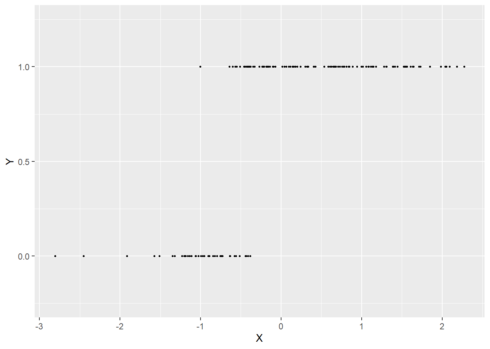
8 Régressions linéaires généralisées (GLM)
Dans ce chapitre, nous présentons les modèles linéaires généralisés plus communément appelés GLM (generalized linear models en anglais). Il s’agit d’une extension directe du modèle de régression linéaire multiple (LM) basé sur la méthode des moindres carrés ordinaires, décrite dans le chapitre précédent. Pour aborder cette section sereinement, il est important d’avoir bien compris le concept de distribution présenté dans la section 2.4. À la fin de cette section, vous serez en mesure de :
- Comprendre la distinction entre un modèle LM classique et un GLM.
- Identifier les composantes d’un GLM.
- Interpréter les résultats d’un GLM.
- Effectuer les diagnostics d’un GLM.
Liste des packages utilisés dans ce chapitre
Dans ce chapitre, nous utilisons principalement les packages suivants :
- Pour créer des graphiques :
-
ggplot2, le seul, l’unique! -
ggpubrpour combiner des graphiques et réaliser des diagrammes.
-
- Pour ajuster des modèles GLM :
-
VGAMetgamlssoffrent tous les deux un très large choix de distributions et de fonctions de diagnostic, mais nécessitent souvent un peu plus de code. -
mgcvoffre moins de distributions que les deux précédents, mais est plus simple d’utilisation.
-
- Pour analyser des modèles GLM :
-
caressentiellement pour la fonctionvif. -
DHARMapour le diagnostic des résidus simulés. -
ROCRetcaretpour l’analyse de la qualité d’ajustement de modèles pour des variables qualitatives. -
AERpour des tests de sur-dispersion. -
fitdistrpluspour ajuster des distributions à des données. -
LaplacesDemonpour manipuler certaines distributions. -
sandwichpour générer des erreurs standards robustes pour le modèle GLM logistique binomial.
8.1 Qu’est qu’un modèle GLM?
Nous avons vu qu’une régression linéaire multiple (LM) ne peut être appliquée que si la variable dépendante analysée est continue et si elle est normalement distribuée, une fois les variables indépendantes contrôlées. Il s’agit d’une limite très importante puisqu’elle ne peut être utilisée pour modéliser et prédire des variables binaires, multinomiales, de comptage, ordinales ou plus simplement des données anormalement distribuées. Une seconde limite importante des LM est que l’influence des variables indépendantes sur la variable dépendante ne peut être que linéaire. L’augmentation d’une unité de X conduit à une augmentation (ou diminution) de \(\beta\) (coefficient de régression) unités de Y, ce qui n’est pas toujours représentatif des phénomènes étudiés. Afin de dépasser ces contraintes, Nelder et Wedderburn (1972) ont proposé une extension des modèles LM, soit les modèles linéaires généralisés (GLM).
8.1.1 Formulation d’un GLM
Puisqu’un modèle GLM est une extension des modèles LM, il est possible de traduire un modèle LM sous forme d’un GLM. Nous utilisons ce point de départ pour détailler la morphologie d’un GLM. Nous avons vu dans la section précédente qu’un modèle LM est formulé de la façon suivante (notation matricielle) :
\[ Y = \beta_0 + X\beta + \epsilon \tag{8.1}\]
Avec \(\beta_0\) la constante (intercept en anglais) et \(\beta\) un vecteur de coefficients de régression pour les k variables indépendantes (X).
D’après cette formule, nous modélisons la variable Y avec une équation de régression linéaire et un terme d’erreur que nous estimons être normalement distribué. Nous pouvons reformuler ce simple LM sous forme d’un GLM avec l’écriture suivante :
\[ \begin{aligned} &Y \sim Normal(\mu,\sigma)\\ &g(\mu) = \beta_0 + \beta X\\ &g(x) = x \end{aligned} \tag{8.2}\]
Pas de panique! Cette écriture se lit comme suit : la variable Y est issue d’une distribution normale \((Y \sim Normal)\) avec deux paramètres : \(\mu\) (sa moyenne) et \(\sigma\) (son écart-type). \(\mu\) varie en fonction d’une équation de régression linéaire (\(\beta_0 + \beta X\)) transformée par une fonction de lien g (détaillée plus loin). Dans ce cas précis, la fonction de lien est appelée fonction identitaire puisqu’elle n’applique aucune transformation (\(g(x) = x\)). Notez ici que le second paramètre de la distribution normale \(\sigma\) (paramètre de dispersion) a une valeur fixe et ne dépend donc pas des variables indépendantes à la différence de \(\mu\). Dans ce modèle spécifiquement, les paramètres à estimer sont \(\sigma\), \(\beta_0\) et \(\beta\). Notez que dans la notation traditionnelle, la fonction de lien est appliquée au paramètre modélisé. Il est possible de renverser cette notation en utilisant la réciproque (\(g'\)) de la fonction de lien (\(g\)) :
\[ g(\mu) = \beta_0 + \beta X \Longleftrightarrow \mu = g'(\beta_0 + \beta X) \text{ si : }g'(g(x)) = x \tag{8.3}\]
Dans un modèle GLM, la distribution attendue de la variable Y est déclarée de façon explicite ainsi que la façon dont nos variables indépendantes conditionnent cette distribution. Ici, c’est la moyenne (\(\mu\)) de la distribution qui est modélisée, nous nous intéressons ainsi au changement moyen de Y provoqué par les variables X.
Avec cet exemple, nous voyons les deux composantes supplémentaires d’un modèle GLM :
La distribution supposée de la variable Y conditionnée par les variables X (ici, la distribution normale).
Une fonction de lien associant l’équation de régression formée par les variables indépendantes et un paramètre de la distribution retenue (ici, la fonction identitaire et le paramètre \(\mu\)).
Notez également que l’estimation des paramètres d’un modèle GLM (ici, \(\beta_0\), \(\beta X\) et \(\sigma\)) ne se fait plus avec la méthode des moindres carrés ordinaires utilisée pour les modèles LM. À la place, la méthode par maximum de vraisemblance (maximum likelihood) est la plus souvent utilisée, mais certains packages utilisent également la méthode des moments (method of moments). Ces deux méthodes nécessitent des échantillons plus grands que la méthode des moindres carrés. Dans le cas spécifique d’un modèle GLM utilisant une distribution normale, la méthode des moindres carrés et la méthode par maximum de vraisemblance produisent les mêmes résultats.
8.1.2 Autres distributions et rôle de la fonction de lien
À première vue, il est possible de se demander pourquoi ajouter ces deux éléments puisqu’ils ne font que complexifier le modèle. Pour mieux saisir la pertinence des GLM, prenons un exemple appliqué au cas d’une variable binaire. Admettons que nous souhaitons modéliser / prédire la probabilité qu’une personne à vélo décède lors d’une collision avec un véhicule motorisé. Notre variable dépendante est donc binaire (0 = survie, 1 = décès) et nous souhaitons la prédire avec trois variables continues que sont : la vitesse de déplacement du ou de la cycliste (\(x_1\)), la vitesse de déplacement du véhicule (\(x_2\)) et la masse du véhicule (\(x_3\)). Puisque la variable Y n’est pas continue, il serait absurde de supposer qu’elle est issue d’une distribution normale. Il serait plus logique de penser qu’elle provient d’une distribution de Bernoulli (pour rappel, une distribution de Bernoulli permet de modéliser un phénomène ayant deux issues possibles comme un lancer de pièce de monnaie (section 2.4). Plus spécifiquement, nous pourrions formuler l’hypothèse que nos trois variables \(x_1\), \(x_2\) et \(x_3\) influencent le paramètre p (la probabilité d’occurrence de l’évènement) d’une distribution de Bernoulli. À partir de ces premières hypothèses, nous pouvons écrire le modèle suivant :
\[ \begin{aligned} &Y \sim Bernoulli(p)\\ &g(p) = \beta_0 + \beta X\\ &g(x) = x \end{aligned} \tag{8.4}\]
Toutefois, le résultat n’est pas entièrement satisfaisant. En effet, p est une probabilité et, par nature, ce paramètre doit être compris entre 0 et 1 (entre 0 et 100 % de « chances de décès », ni plus ni moins). L’équation de régression que nous utilisons actuellement peut produire des résultats compris entre \(-\infty\) et \(+\infty\) pour p puisque rien ne contraint la somme \(\beta_0+ \beta_1x_1+\beta_2x_2+ \beta_3x_3\) à être comprise entre 0 et 1. Il est possible de visualiser le problème soulevé par cette situation avec les figures suivantes. Admettons que nous avons observé une variable Y binaire et que nous savons qu’elle est influencée par une variable X qui, plus elle augmente, plus les chances que Y soit 1 augmentent (figure 8.1).
Si nous utilisons l’équation de régression actuelle, cela revient à trouver la droite la mieux ajustée passant dans ce nuage de points (figure 8.2).
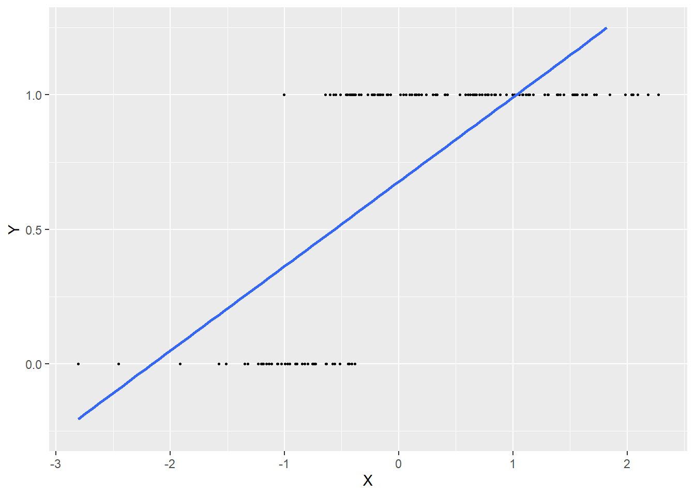
Ce modèle semble bien cerner l’influence positive de X sur Y, mais la droite est au final très éloignée de chaque point, indiquant un faible ajustement du modèle. De plus, la droite prédit des probabilités négatives lorsque X est inférieur à −2,5 et des probabilités supérieures à 1 quand X est supérieur à 1. Elle est donc loin de bien représenter les données.
C’est ici qu’intervient la fonction de lien. La fonction identitaire que nous avons utilisée jusqu’ici n’est pas satisfaisante, nous devons la remplacer par une fonction qui conditionnera la somme \(\beta_0+ \beta_1x_1+\beta_2x_2+ \beta_3x_3\) pour donner un résultat entre 0 et 1. Une candidate toute désignée est la fonction sigmoidale, plus souvent appelée la fonction logistique!
\[ \begin{aligned} &Y \sim Bernoulli(p)\\ &S(p) = \beta_0 + \beta X\\ &S(x) = \frac{e^{x}}{e^x+1} \end{aligned} \tag{8.5}\]
La fonction logistique prend la forme d’un S. Plus la valeur entrée dans la fonction est grande, plus le résultat produit par la fonction est proche de 1 et inversement. Si nous reprenons l’exemple précédent, nous obtenons le modèle illustré à la figure 8.3.
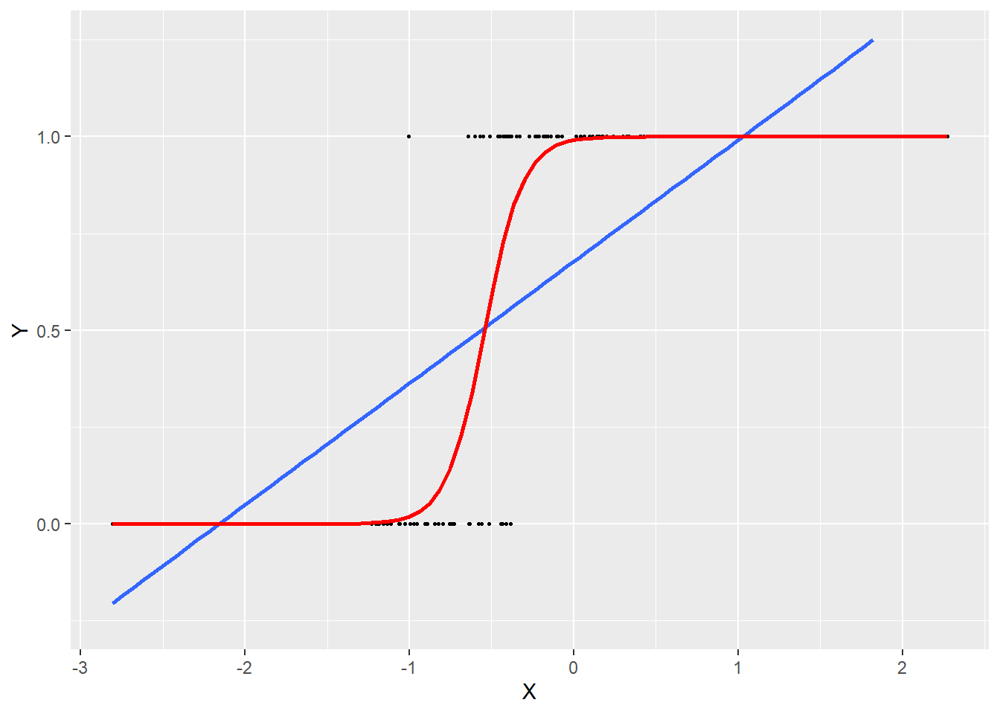
Une fois cette fonction insérée dans le modèle, nous constatons qu’une augmentation de la somme \(\beta_0+ \beta_1x_1+\beta_2x_2+ \beta_3x_3\) conduit à une augmentation de la probabilité p et inversement, et que cet effet est non linéaire. Nous avons donc maintenant un GLM permettant de prédire la probabilité d’un décès lors d’un accident en combinant une distribution et une fonction de lien adéquates.
8.1.3 Conditions d’application
La famille des GLM englobe de (très) nombreux modèles du fait de la diversité de distributions existantes et des fonctions de liens utilisables. Cependant, certaines combinaisons sont plus souvent utilisées que d’autres. Nous présentons donc dans les prochaines sections les modèles GLM les plus communs. Les conditions d’application varient d’un modèle à l’autre, il existe cependant quelques conditions d’application communes à tous ces modèles :
l’indépendance des observations (et donc des erreurs);
l’absence de valeurs aberrantes / fortement influentes;
l’absence de multicolinéarité excessive entre les variables indépendantes.
Ces trois conditions sont également valables pour les modèles LM tel qu’abordé dans le chapitre 7. La distance de Cook peut ainsi être utilisée pour détecter les potentielles valeurs aberrantes et le facteur d’inflation de la variance (VIF) pour détecter la multicolinéarité. Les conditions d’application particulières sont détaillées dans les sections dédiées à chaque modèle.
8.1.4 Résidus et déviance
Dans la section sur la régression linéaire simple, nous avons présenté la notion de résidu, soit l’écart entre la valeur observée (réelle) de Y et la valeur prédite par le modèle. Pour un modèle GLM, ces résidus traditionnels (aussi appelés résidus naturels) ne sont pas très informatifs si la variable à modéliser est binaire, multinomiale ou même de comptage. Lorsque l’on travaille avec des GLM, nous préférons utiliser trois autres formes de résidus, soit les résidus de Pearson, les résidus de déviance et les résidus simulés.
Les résidus de Pearson sont une forme ajustée des résidus classiques, obtenus par la division des résidus naturels par la racine carrée de la variance modélisée. Leur formule varie donc d’un modèle à l’autre puisque l’expression de la variance change en fonction de la distribution du modèle. Pour un modèle GLM gaussien, elle s’écrit :
\[ r_i = \frac{y_i - \mu_i}{\sigma} \tag{8.6}\]
Pour un modèle GLM de Bernoulli, elle s’écrit :
\[ r_i = \frac{y_i - p_i}{\sqrt{p_i(1-p_i)}} \tag{8.7}\]
avec \(\mu_i\) et \(p_i\) les prédictions du modèle pour l’observation i.
Les résidus de déviance sont basés sur le concept de likelihood présenté dans la section 2.5.4.2. Pour rappel, le likelihood, ou la vraisemblance d’un modèle, correspond à la probabilité conjointe d’avoir observé les données Y selon le modèle étudié. Pour des raisons mathématiques (voir section 2.5.4.2), le log likelihood est plus souvent calculé. Plus cette valeur est forte, moins le modèle se trompe. Cette interprétation est donc inverse à celle des résidus classiques, c’est pourquoi le log likelihood est généralement multiplié par −2 pour retrouver une interprétation intuitive. Ainsi, pour chaque observation i, nous pouvons calculer :
\[ d_i = \mbox{-2} \times log(P(y_i|M_e)) \tag{8.8}\]
avec \(d_i\) le résidu de déviance et \(P(y_i|M_e)\) la probabilité d’avoir observé la valeur \(y_i\) selon le modèle étudié (\(M_e\)).
La somme de tous ces résidus est appelée la déviance totale du modèle.
\[ D(M_e) = \sum_{i=1}^n \mbox{-2} \times log(P(y_i|M_e)) \tag{8.9}\]
Il s’agit donc d’une quantité représentant à quel point le modèle est erroné vis-à-vis des données. Notez qu’en tant que telle, la déviance n’a pas d’interprétation directe en revanche, elle est utilisée pour calculer des mesures d’ajustement des modèles GLM.
Les résidus simulés sont une avancée récente dans le monde des GLM, ils fournissent une définition et une interprétation harmonisée des résidus pour l’ensemble des modèles GLM. Dans la section sur les LM (section 7.2.2), nous avons vu comment interpréter les graphiques des résidus pour détecter d’éventuels problèmes dans le modèle. Cependant, cette technique est bien plus compliquée à mettre en œuvre pour les GLM puisque la forme attendue des résidus varie en fonction de la distribution choisie pour modéliser Y. La façon la plus efficace de procéder est d’interpréter les graphiques des résidus simulés qui ont la particularité d’être identiquement distribués, quel que soit le modèle GLM construit. Ces résidus simulés sont compris entre 0 et 1 et sont calculés de la manière suivante :
À partir du modèle GLM construit, simuler S fois (généralement 1 000) une variable Y’ avec autant d’observation (n) que Y. Cette variable simulée est une combinaison de la prédiction du modèle (coefficient et variables indépendantes) et de sa dispersion (variance). Ces simulations représentent des variations vraisemblables de la variable Y si le modèle est correctement spécifié. En d’autres termes, si le modèle représente bien le phénomène à l’origine de la variable Y, alors les simulations Y’ issues du modèle devraient être proches de la variable Y originale. Pour une explication plus détaillée de ce que signifie simuler des données à partir d’un modèle, référez-vous au bloc attention intitulé Distinction entre simulation et prédiction dans la section 8.1.5.2.
Pour chaque observation, nous obtenons ainsi S valeurs formant une distribution \(Ds_i\), soit les valeurs simulées par le modèle pour cette observation.
Pour chacune de ces distributions, nous calculons la probabilité cumulative d’observer la vraie valeur \(Y_i\) d’après la distribution \(Ds_i\). Cette valeur est comprise entre 0 (toutes les valeurs simulées sont plus grandes que \(Y_i\)) et 1 (toutes les valeurs simulées sont inférieures à \(Y_i\)).
Si le modèle est correctement spécifié, le résultat attendu est que la distribution de ces résidus est uniforme. En effet, il y a autant de chances que les simulations produisent des résultats supérieurs ou inférieurs à \(Y_i\) si le modèle représente bien le phénomène (Dunn et Smyth 1996; Gelman et Hill 2006). Si la distribution des résidus ne suit pas une loi uniforme, cela signifie que le modèle échoue à reproduire le phénomène à l’origine de Y, ce qui doit nous alerter sur sa pertinence.
8.1.5 Vérification l’ajustement
Il existe trois façons de vérifier l’ajustement d’un modèle GLM :
- utiliser des mesures d’ajustement (AIC, pseudo-R2, déviance expliquée, etc.);
- comparer les distributions de la variable originale et celle des prédictions;
- comparer les prédictions du modèle avec les valeurs originales.
Notez d’emblée que vérifier la qualité d’ajustement d’un modèle (ajustement aux données originales) ne revient pas à vérifier la validité d’un modèle (respect des conditions d’application). Cependant, ces deux éléments sont généralement liés, car un modèle mal ajusté a peu de chances d’être valide et inversement.
8.1.5.1 Mesures d’ajustement
Les mesures d’ajustement sont des indicateurs plus ou moins arbitraires dont le principal intérêt est de faciliter la comparaison entre plusieurs modèles similaires. Il est nécessaire de les reporter, car dans certains cas, ils peuvent indiquer que des modèles sont très mal ajustés.
8.1.5.1.1 Déviance expliquée
Rappelons que la déviance d’un modèle est une quantité représentant à quel point le modèle est erroné. L’objectif de l’indicateur de la déviance expliquée est d’estimer le pourcentage de la déviance maximale observable dans les données que le modèle est parvenu à expliquer. La déviance maximale observable dans les données est obtenue en utilisant la déviance totale du modèle nul (notée \(M_n\), soit un modèle dans lequel aucune variable indépendante n’est ajoutée et ne comportant qu’une constante). Cette déviance est maximale puisqu’aucune variable indépendante n’est présente dans le modèle. Nous calculons ensuite le pourcentage de cette déviance totale qui a été contrôlée par le modèle étudié (\(M_e\)).
\[ \mbox{déviance expliquée} = \frac{D(M_n) - D(M_e)}{D(M_n)} = 1- \frac{D(M_e)}{D(M_n)} \tag{8.10}\]
Il s’agit donc d’un simple calcul de pourcentage entre la déviance maximale (\(D(M_n)\)) et la déviance expliquée par le modèle étudié (\(D(M_n )-D(M_e)\)). Cet indicateur est compris entre 0 et 1 : plus il est petit, plus la capacité de prédiction du modèle est faible. Attention, cet indicateur ne tient pas compte de la complexité du modèle. Ajouter une variable indépendante supplémentaire ne fait qu’augmenter la déviance expliquée, ce qui ne signifie pas que la complexification du modèle soit justifiée (voir l’encadré sur le principe de parcimonie, section 7.3.2).
8.1.5.1.2 Pseudo-R2
Le R2 est une mesure d’ajustement représentant la part de la variance expliquée dans un modèle linéaire classique. Cette mesure n’est pas directement transposable au cas des GLM puisqu’ils peuvent être appliqués à des variables non continues et anormalement distribuées. Toutefois, il existe des mesures semblables appelées pseudo-R2, remplissant un rôle similaire. Notez cependant qu’ils ne peuvent pas être interprétés comme le R2 classique (d’une régression linéaire multiple) : ils ne représentent pas la part de la variance expliquée. Ils sont compris dans l’intervalle 0 et 1; plus leurs valeurs s’approchent de 1, plus le modèle est ajusté.
| Nom | Formule | Commentaire |
|---|---|---|
| McFadden | \(1-\frac{loglike(M_e)}{loglike(M_n)}\) | Le rapport des loglikelihood, très proche de la déviance expliquée. |
| McFadden ajusté | \(1-\frac{loglike(M_e)-K}{loglike(M_n)}\) | Version ajustée du R2 de McFadden tenant compte du nombre de paramètres (k) dans le modèle. |
| Efron | \(1-\frac{\sum_{i=1}^n(y_i-\hat{y}_i)^2}{\sum_{i=1}^n(y_i-\bar{y}_i)^2}\) | Rapport entre la somme des résidus classiques au carré (numérateur) et de la somme des écarts au carré à la moyenne (dénominateur). Notez que pour un GLM gaussien, ce pseudo-R2 est identique au R2 classique. |
| Cox & Snell | \(1-e^{-\frac{2}{n}({loglike(M_e) - loglike(M_n))}}\) | Transformation de la déviance afin de la mettre sur une échelle de 0 à 1 (mais ne pouvant atteindre exactement 1). |
| Nagelkerke | \(\frac{1-e^{-\frac{2}{n}({loglike(M_e) - loglike(M_n))}}}{1-e^{\frac{2*loglike(M_n)}{n}}}\) | Ajustement du R2 de Cox et Snell pour que l’échelle de valeurs possibles puisse comporter 1 (attention, car les valeurs de ce R2 tendent à être toujours plus fortes que les autres). |
En dehors du pseudo-R2 de McFadden ajusté, aucune de ces mesures ne tient compte de la complexité du modèle. Il est cependant important de les reporter, car des valeurs très faibles indiquent vraisemblablement un modèle avec une moindre capacité informative. À l’inverse, des valeurs trop fortes pourraient indiquer un problème de surajustement (voir encadré sur le principe de parcimonie, section 7.3.2).
8.1.5.1.3 Critère d’information d’Akaike (AIC)
Probablement l’indicateur le plus répandu, sa formule est relativement simple, car il s’agit seulement d’un ajustement de la déviance :
\[ AIC = D(M_e) + 2K \tag{8.11}\]
avec K le nombre de paramètres à estimer dans le modèle (coefficients, paramètres de distribution, etc.).
L’AIC n’a pas d’interprétation directe, mais permet de comparer deux modèles imbriqués (section 7.3.2). Plus l’AIC est petit, mieux le modèle est ajusté. L’idée derrière cet indicateur est relativement simple. Si la déviance D est grande, alors le modèle est mal ajusté. Ajouter des paramètres (des coefficients pour de nouvelles variables X, par exemple) ne peut que réduire D, mais cette réduction n’est pas forcément suffisamment grande pour justifier la complexification du modèle. L’AIC pondère donc D en lui ajoutant 2 fois le nombre de paramètres du modèle. Un modèle plus simple (avec moins de paramètres) parvenant à une même déviance est préférable à un modèle complexe (principe de parcimonie ou du rasoir d’Ockham), ce que permet de « quantifier » l’AIC. Attention, l’AIC ne peut pas être utilisé pour comparer des modèles non imbriqués. Notez que d’autres indicateurs similaires comme le WAIC, le BIC et le DIC sont utilisés dans un contexte d’inférence bayésienne. Retenez simplement que ces indicateurs sont conceptuellement proches du AIC et s’interprètent (à peu de choses près) de la même façon.
8.1.5.2 Comparaison des distributions originales et prédites
Une façon rapide de vérifier si un modèle est mal ajusté est de comparer la forme de la distribution originale et celle capturée par le modèle. L’idée est la suivante : si le modèle est bien ajusté aux données, il est possible de se servir de celui-ci pour générer de nouvelles données dont la distribution ressemble à celle des données originales. Si une différence importante est observable, alors les résultats du modèle ne sont pas fiables, car le modèle échoue à reproduire le phénomène étudié. Cette lecture graphique ne permet pas de s’assurer que le modèle est valide ou bien ajusté, mais simplement d’écarter rapidement les mauvais candidats. Notez que cette méthode ne s’applique pas lorsque la variable modélisée est binaire, multinomiale ou ordinale. Le graphique à réaliser comprend donc la distribution de la variable dépendante Y (représentée avec un histogramme ou un graphique de densité) et plusieurs distributions simulées à partir du modèle. Cette approche est plus répandue dans la statistique bayésienne, mais elle reste pertinente dans l’approche fréquentiste. Il est rare de reporter ces figures, mais elles doivent faire partie de votre diagnostic.
Distinction entre simulation et prédiction
Notez ici que simuler des données à partir d’un modèle et effectuer des prédictions à partir d’un modèle sont deux opérations différentes. Prédire une valeur à partir d’un modèle revient simplement à appliquer son équation de régression à des données. Si nous réutilisons les mêmes données, la prédiction renvoie toujours le même résultat, il s’agit de la partie systématique (ou déterministe) du modèle. Pour illustrer cela, admettons que nous avons ajusté un modèle GLM de type gaussien (fonction de lien identitaire) avec trois variables continues \(X_1\), \(X_2\) et \(X_3\) et des coefficients respectifs de 0,5, 1,2 et 1,8 ainsi qu’une constante de 7. Nous pouvons utiliser ces valeurs pour prédire la valeur attendue de \(Y\) quand \(X_1= 3\), \(X_2= 5\) et \(X_3 = 5\) :
\(\mbox{Prédiction} = \mbox{7 + 3}\times \mbox{0,5 + 5}\times \mbox{1,2 + 5}\times\mbox{1,8 = 23,5}\)
En revanche, simuler des données à partir d’un modèle revient à ajouter la dimension stochastique (aléatoire) du modèle. Puisque notre modèle GLM est gaussien, il comporte un paramètre \(\sigma\) (son écart-type); admettons, pour cet exemple, qu’il est de 1,2. Ainsi, avec les données précédentes, il est possible de simuler un ensemble infini de valeurs dont la distribution est la suivante : \(Normal(\mu = \mbox{23,5, } \sigma = \mbox{1,2})\). 95 % du temps, ces valeurs simulées se trouveront dans l’intervalle \(\mbox{[21,1-25,9]}\) (\(\mu - 2\sigma \text{; } \mu + 2\sigma\)), puisque cette distribution est normale. Les valeurs simulées dépendent donc de la distribution choisie pour le modèle et de l’ensemble des paramètres du modèle, pas seulement de l’équation de régression.
Si vous aviez à ne retenir qu’une seule phrase de ce bloc, retenez que la prédiction ne se réfère qu’à la partie systématique du modèle (équation de régression), alors que la simulation incorpore la partie stochastique (aléatoire) de la distribution du modèle. Deux prédictions effectuées sur des données identiques donnent nécessairement des résultats identiques, ce qui n’est pas le cas pour la simulation.
8.1.5.3 Comparaison des prédictions du modèle avec les valeurs originales
Les prédictions d’un modèle devraient être proches des valeurs réelles observées. Si ce n’est pas le cas, alors le modèle n’est pas fiable et ses paramètres ne sont pas informatifs. Dépendamment de la nature de la variable modélisée (quantitative ou qualitative), plusieurs approches peuvent être utilisées pour quantifier l’écart entre valeurs réelles et valeurs prédites.
8.1.5.3.1 Pour une variable quantitative
La mesure la plus couramment utilisée pour une variable quantitative est l’erreur moyenne quadratique (Root Mean Square Error – RMSE en anglais).
\[ RMSE = \sqrt{\frac{\sum_{i=1}^n(y_i - \hat{y_i})^2}{n}} \tag{8.12}\]
Il s’agit de la racine carrée de la moyenne des écarts au carré entre valeurs réelles et prédites. Le RMSE est exprimé dans la même unité que la donnée originale et nous donne une indication sur l’erreur moyenne de la prédiction du modèle. Admettons, par exemple, que nous modélisons les niveaux de bruit environnemental en ville en décibels et que notre modèle de régression ait un RMSE de 3,5. Cela signifierait qu’en moyenne notre modèle se trompe de 3,5 décibels (erreur pouvant être négative ou positive), ce qui serait énorme (3 décibels correspondent à une multiplication par deux de l’intensité sonore) et nous amènerait à reconsidérer la fiabilité du modèle. Notez que l’usage d’une moyenne quadratique plutôt qu’une moyenne arithmétique permet de donner plus d’influence aux larges erreurs et donc de pénaliser davantage des modèles faisant parfois de grosses erreurs de prédiction. Le RMSE est donc très sensible à la présence de valeurs aberrantes. À la place de la moyenne quadratique, il est possible d’utiliser la simple moyenne arithmétique des valeurs absolues des erreurs (MAE). Cette mesure est cependant moins souvent utilisée :
\[ MAE = \frac{\sum_{i=1}^n|y_i - \hat{y_i|}}{n} \tag{8.13}\]
Ces deux mesures peuvent être utilisées pour comparer la capacité de prédiction de deux modèles appliqués aux mêmes données, même s’ils ne sont pas imbriqués. Elles ne permettent cependant pas de prendre en compte la complexité du modèle. Un modèle plus complexe aura toujours des valeurs de RMSE et de MAE plus faibles.
8.1.5.3.2 Pour une variable qualitative
Lorsque l’on modélise une variable qualitative, une erreur revient à prédire la mauvaise catégorie pour une observation. Il est ainsi possible de compter, pour un modèle, le nombre de bonnes et de mauvaises prédictions et d’organiser cette information dans une matrice de confusion. Cette dernière prend la forme suivante pour un modèle binaire :
| Valeur prédite / Valeur réelle | A | B | Total (%) |
|---|---|---|---|
| A | 15 | 3 | 18 (41,9) |
| B | 5 | 20 | 25 (51,1) |
| Total (%) | 20 (46,6) | 23 (53,5) | 43 (81,4) |
En colonne du tableau 8.2, nous avons les catégories observées et en ligne, les catégories prédites. La diagonale représente les prédictions correctes. Dans le cas présent, le modèle a bien catégorisé 35 (15 + 20) observations sur 43, soit une précision totale de 81,4 %; huit sont mal classifiées (18,6 %); cinq avec la modalité A ont été catégorisées comme des B, soit 20 % des A, et seules trois B ont été catégorisées comme des A (13 %).
La matrice ci-dessus (tableau 8.2) ne comporte que deux catégories possibles puisque la variable Y modélisée est binaire. Il est facile d’étendre le concept de matrice de confusion au cas des variables avec plus de deux modalités (multinomiale). Le tableau 8.3 est un exemple de matrice de confusion multinomiale.
| Valeur prédite / Valeur réelle | A | B | C | D | Total (%) |
|---|---|---|---|---|---|
| A | 15 | 3 | 1 | 5 | 24 (18,7) |
| B | 5 | 20 | 2 | 12 | 39 (30,4) |
| C | 2 | 10 | 25 | 8 | 45 (35,2) |
| D | 1 | 0 | 5 | 14 | 20 (15,6) |
| Total (%) | 23 (18,1) | 33 (25,7) | 33 (25,7) | 39 (30,5) | 128 |
Trois mesures pour chaque catégorie peuvent être utilisées pour déterminer la capacité de prédiction du modèle :
La précision (precision en anglais), soit le nombre de fois où une catégorie a été correctement prédite, divisé par le nombre de fois où la catégorie a été prédite.
Le rappel (recall en anglais), soit le nombre de fois où une catégorie a été correctement prédite divisé par le nombre de fois où elle se trouve dans les données originales.
Le score F1 est la moyenne harmonique entre la précision et le rappel, soit :
\[ \text{F1} = 2 \times \frac{\text{précision} \times \text{rappel}}{\text{précision} + \text{rappel}} \tag{8.14}\]
Il est possible de calculer les moyennes pondérées des différents indicateurs (macro-indicateurs) afin de disposer d’une valeur d’ensemble pour le modèle. La pondération est faite en fonction du nombre de cas observé de chaque catégorie; l’idée étant qu’il est moins grave d’avoir des indicateurs plus faibles pour des catégories moins fréquentes. Cependant, il est tout à fait possible que cette pondération ne soit pas souhaitable. C’est par exemple le cas dans de nombreuses études en santé portant sur des maladies rares où l’attention est concentrée sur ces catégories peu fréquentes.
Le coefficient de Kappa (variant de 0 à 1) peut aussi être utilisé pour quantifier la fidélité générale de la prédiction du modèle. Il est calculé avec l’équation 8.15 :
\[ k = \frac{Pr(a)-Pr(e)}{1-Pr(e)} \tag{8.15}\]
avec \(Pr(a)\) la proportion d’accords entre les catégories observées et les catégories prédites, et \(Pr(e)\) la probabilité d’un accord aléatoire entre les catégories observées et les catégories prédites (équation 8.16).
\[ Pr(e) = \sum^{J}_{j=1} \frac{Cnt_{prédit}(j)}{n\times2} \times \frac{Cnt_{réel}(j)}{n\times2} \tag{8.16}\]
avec n le nombre d’observations, \(Cnt_{prédit}(j)\) le nombre de fois où le modèle prédit la catégorie j et \(Cnt_{réel}(j)\) le nombre de fois où la catégorie j a été observée.
Pour l’interprétation du coefficient de Kappa, référez-vous au tableau 8.4.
| K | Interprétation |
|---|---|
| < 0 | Désaccord |
| 0 - 0,20 | Accord très faible |
| 0,21 - 0,40 | Accord faible |
| 0,41 - 0,60 | Accord modéré |
| 0,61 - 0,80 | Accord fort |
| 0,81 - 1 | Accord presque parfait |
Enfin, un test statistique basé sur la distribution binomiale peut être utilisé pour vérifier que le modèle atteint un niveau de précision supérieur au seuil de non-information. Ce seuil correspond à la proportion de la modalité la plus présente dans le jeu de données. Dans la matrice de confusion utilisée dans le tableau 8.4, ce seuil est de 30,5 % (catégorie D), ce qui signifie qu’un modèle prédisant tout le temps la catégorie D aurait une précision de 30,5 % pour cette catégorie. Il est donc nécessaire que notre modèle fasse mieux que ce seuil.
Dans le cas de la matrice de confusion du tableau 8.3, nous obtenons donc les valeurs affichées dans le tableau 8.5.
| précision | rappel | F1 | |
|---|---|---|---|
| A | 65,2 | 31,3 | 42,3 |
| B | 60,6 | 25,6 | 36,0 |
| C | 75,8 | 27,8 | 40,7 |
| D | 35,9 | 35,0 | 35,4 |
| macro | 57,8 | 30,0 | 38,2 |
| Kappa | 0,44 | ||
| Valeur de p (précision > NIR) | < 0,0001 |
À la lecture du tableau 8.5, nous remarquons que :
La catégorie D est la moins bien prédite des quatre catégories (faible précision et faible rappel).
La catégorie C a une forte précision, mais un faible rappel, ce qui signifie que de nombreuses observations étant originalement des A, B ou D ont été prédites comme des C. Ce constat est également vrai pour la catégorie B.
Le coefficient de Kappa indique un accord modéré entre les valeurs originales et la prédiction.
La probabilité que la précision du modèle ne dépasse pas le seuil de non-information est inférieure à 0,001, indiquant que le modèle à une précision supérieure à ce seuil.
8.1.6 Comparaison de deux modèles GLM
Tel qu’abordé dans le chapitre sur les régressions linéaires classiques, il est courant de comparer plusieurs modèles imbriqués (section 7.3.2). Cette procédure permet de déterminer si l’ajout d’une ou de plusieurs variables contribue à significativement améliorer le modèle. Il est possible d’appliquer la même démarche aux GLM à l’aide du test de rapport de vraisemblance (likelihood ratio test). Le principe de base de ce test est de comparer le likelihood de deux modèles GLM imbriqués; la valeur de ce test se calcule avec l’équation suivante :
\[ LR = 2(loglik(M_2) - loglik(M_1)) \tag{8.17}\]
avec \(M_2\) un modèle reprenant toutes les variables du modèle \(M_1\), impliquant donc que \(loglik(M_2) >= loglik(M_1)\).
Avec ce test, nous supposons que le modèle \(M_2\), qui comporte plus de paramètres que le modèle \(M_1\), devrait être mieux ajusté aux données. Si c’est bien le cas, la différence entre les loglikelihood de deux modèles devrait être supérieure à zéro. La valeur calculée LR suit une distribution du khi-deux avec un nombre de degrés de liberté égal au nombre de paramètres supplémentaires dans le modèle \(M_2\) comparativement à \(M_1\). Avec ces deux informations, il est possible de déterminer la valeur de p associée à ce test et de déterminer si \(M_2\) est significativement mieux ajusté que \(M_1\) aux données. Notez qu’il existe aussi deux autres tests (test de Wald et test de Lagrange) ayant la même fonction. Il s’agit, dans les deux cas, d’approximation du test de rapport des vraisemblances dont la puissance statistique est inférieure au test de rapport de vraisemblance (Neyman, Pearson et Pearson 1933).
Dans les prochaines sections, nous décrivons les modèles GLM les plus couramment utilisés. Il en existe de nombreuses variantes que nous ne pouvons pas toutes décrire ici. L’objectif est de comprendre les rouages de ces modèles afin de pouvoir, en cas de besoin, transposer ces connaissances sur des modèles plus spécifiques. Pour faciliter la lecture de ces sections, nous vous proposons une carte d’identité de chacun des modèles présentés. Elles contiennent l’ensemble des informations pertinentes à retenir pour chaque modèle.
8.2 Modèles GLM pour des variables qualitatives
Nous abordons en premier les principaux GLM utilisés pour modéliser des variables binaires, multinomiales et ordinales. Prenez bien le temps de saisir le fonctionnement du modèle logistique binomial, car il sert de base pour les trois autres modèles présentés.
8.2.1 Modèle logistique binomial
Le modèle logistique binomial est une généralisation du modèle de Bernoulli que nous avons présenté dans l’introduction de cette section. Le modèle logistique binomiale couvre donc deux cas de figure :
La variable observée est binaire (0 ou 1). Dans ce cas, le modèle logistique binomiale devient un simple modèle de Bernoulli.
La variable observée est un comptage (nombre de réussites) et nous disposons d’une autre variable avec le nombre de réplications de l’expérience. Par exemple, pour chaque intersection d’un réseau routier, nous pourrions avoir le nombre de décès à vélo (variable Y de comptage) et le nombre de collisions vélo / automobile (variable quantifiant le nombre d’expériences, chaque collision étant une expérience). Spécifiquement, nous tentons de prédire le paramètre p de la distribution binomiale à l’aide de notre équation de régression et de la fonction logistique comme fonction de lien. Notez ici que cette fonction de lien influence directement l’interprétation des paramètres du modèle. Pour rappel, cette fonction est définie comme :
\[ g(x) = ln(\frac{x}{1-x}) \]
avec \(ln\) étant le logarithme naturel.
Au-delà de sa propriété mathématique assurant que \(g(x) \in \mathopen[0,1\mathclose]\), cette fonction offre une interprétation intéressante. La partie \(\frac{x}{1-x}\) est une cote et s’interprète en termes de chances d’observer un évènement. Par exemple, dans le cas des accidents de cyclistes, si la probabilité d’observer un décès suite à une collision est de 0,1, alors la cote de cet évènement est \(\frac{\frac{1}{10}}{\frac{9}{10}} = \frac{1}{9}\) soit un contre neuf. Dans un modèle GLM logistique, les coefficients ajustés pour les variables indépendantes représentent des logarithmes de rapport de cote, car ils comparent les chances d’observer l’évènement (y = 1) en fonction des valeurs des variables indépendantes.
| Type de variable dépendante | Variable binaire (0 ou 1) ou comptage de réussite à une expérience (ex : 3 réussites sur 5 expériences) |
| Distribution utilisée | Binomiale |
| Formulation | \(Y \sim Binomial(p)\) \(g(p) = \beta_0 + \beta X\) \(g(x) = log(\frac{x}{1-x})\) |
| Fonction de lien | Logistique |
| Paramètre modélisé | p |
| Paramètres à estimer | \(\beta_0\), \(\beta\) |
| Conditions d’application | Non-séparation complète, absence de sur-dispersion ou de sous-dispersion |
8.2.1.1 Interprétation des paramètres
Les seuls paramètres à estimer du modèle sont les coefficients \(\beta\) et la constante \(\beta_0\). La fonction de lien logistique transforme la valeur de ces coefficients, en conséquence, ils ne peuvent plus être interprétés directement. \(\beta_0\) et \(\beta\) sont exprimés dans une unité particulière: des logarithmes de rapports de cote (log odd ratio). Le rapport de cote est relativement facile à interpréter contrairement à son logarithme. Pour l’obtenir, il suffit d’utiliser la fonction exponentielle (l’inverse de la fonction logarithme) pour passer des log rapports de cote à de simples rapports de cote. Donc si \(exp(\beta)\) est inférieur à 1, il réduit les chances d’observer l’évènement et inversement si \(exp(\beta)\) est supérieur à 1.
Par exemple, admettons que nous ayons un coefficient \(\beta_1\) de 1,2 pour une variable \(X_1\) dans une régression logistique. Il est nécessaire d’utiliser son exponentiel pour l’interpréter de façon intuitive. \(exp\mbox{(1,2)} = \mbox{3,32}\), ce qui signifie que lorsque \(X_1\) augmente d’une unité, les chances d’observer 1 plutôt que 0 comme valeur de Y sont multipliées par 3,32. Admettons maintenant que \(\beta_1\) vaille −1,2, nous calculons donc \(exp\mbox{(-1,2) = 0,30}\), ce qui signifie qu’à chaque augmentation d’une unité de \(X_1\), les chances d’observer 1 plutôt que 0 comme valeur de Y sont multipliées par 0,30. En d’autres termes,les chances d’observer 1 plutôt que 0 sont divisées par 3,33 (\(\mbox{1}/\mbox{0,30} = \mbox{3,33}\)), soit une diminution de 70 % (\(\mbox{1}-\mbox{0,3} = \mbox{0,7}\)) des chances d’observer 1 plutôt que 0.
Les rapports de cotes
Le rapport de cote ou rapport des chances est une mesure utilisée pour exprimer l’effet d’un facteur sur une probabilité. Il est très utilisé dans le domaine de la santé, mais aussi des paris. Prenons un exemple concret avec le port du casque à vélo. Si sur 100 accidents impliquant des cyclistes portant un casque, nous observons seulement 3 cas de blessures graves à la tête, contre 15 dans un second groupe de 100 cyclistes ne portant pas de casque, nous pouvons calculer le rapport de cote suivant :
\[ \frac{p(1-q)}{q(1-p)} = \frac{\mbox{0,15} \times (\mbox{1}-\mbox{0,03})}{\mbox{0,03} \times (\mbox{1}-\mbox{0,15})} = \mbox{5,71} \]
avec p la probabilité d’observer le phénomène (ici la blessure grave à la tête) dans le groupe 1 (ici les cyclistes sans casque) et q la probabilité d’observer le phénomène dans le groupe 2 (ici les cyclistes avec un casque). Ce rapport de cote indique que les cyclistes sans casques ont 5,71 fois plus de risques de se blesser gravement à la tête lors d’un accident comparativement aux cyclistes portant un casque.
8.2.1.2 Conditions d’application
La non-séparation complète signifie qu’aucune des variables X n’est, à elle seule, capable de parfaitement distinguer les deux catégories 0 et 1 de la variable Y. Dans un tel cas de figure, les algorithmes d’ajustement utilisés pour estimer les paramètres des modèles sont incapables de converger. Notez aussi l’absurdité de créer un modèle pour prédire une variable Y si une variable X est capable à elle seule de la prédire à coup sûr. Ce problème est appelé un effet de Hauck-Donner. Il est assez facile de le repérer, car la plupart du temps les fonctions de R signalent ce problème (message d’erreur sur la convergence). Sinon, des valeurs extrêmement élevées ou faibles pour certains rapports de cote peuvent aussi indiquer un effet de Hauck-Donner.
La sur-dispersion est un problème spécifique aux distributions n’ayant pas de paramètre de dispersion (binomiale, de Poisson, exponentielle, etc.), pour lesquelles la variance dépend directement de l’espérance. La sur-dispersion désigne une situation dans laquelle les résidus (ou erreurs) d’un modèle sont plus dispersés que ce que suppose la distribution utilisée. À l’inverse, il est aussi possible (mais rare) d’observer des cas de sous-dispersion (lorsque la dispersion des résidus est plus petite que ce que suppose la distribution choisie). Ce cas de figure se produit généralement lorsque le modèle parvient à réaliser une prédiction trop précise pour être crédible. Si vous rencontrez une forte sous-dispersion, cela signifie souvent que l’une de vos variables indépendantes provoque une séparation complète. La meilleure option, dans ce cas, est de supprimer la variable en question du modèle. La variance attendue d’une distribution binomiale est \(nb \times p \times(1-p)\), soit le produit entre le nombre de tirages, la probabilité de réussite et la probabilité d’échec. À titre d’exemple, si nous considérons une distribution binomiale avec un seul tirage et 50 % de chances de réussite, sa variance serait : \(1 \times \mbox{0,5} \times \mbox{(1}-\mbox{0,5}) = \mbox{0,25}\).
Plusieurs raisons peuvent expliquer la présence de sur-dispersion dans un modèle :
il manque des variables importantes dans le modèle, conduisant à un mauvais ajustement et donc une sur-dispersion des erreurs;
les observations ne sont pas indépendantes, impliquant qu’une partie de la variance n’est pas contrôlée et augmente les erreurs;
la probabilité de succès de chaque expérience varie d’une répétition à l’autre (différentes distributions).
La conséquence directe de la sur-dispersion est la sous-estimation de la variance des coefficients de régression. En d’autres termes, la sur-dispersion conduit à sous-estimer notre incertitude quant aux coefficients obtenus et réduit les valeurs de p calculées pour ces coefficients. Les risques de trouver des résultats significatifs à cause des fluctuations d’échantillonnage augmentent.
Pour détecter une sur-dispersion ou une sous-dispersion dans un modèle logistique binomial, il est possible d’observer les résidus de déviance du modèle. Ces derniers sont supposés suivre une distribution du khi-deux avec n−k degrés de liberté (avec n le nombre d’observations et k le nombre de coefficients dans le modèle). Par conséquent, la somme des résidus de déviance d’un modèle logistique binomiale divisée par le nombre de degrés de liberté devrait être proche de 1. Une légère déviation (jusqu’à 0,15 au-dessus ou au-dessous de 1) n’est pas alarmante; au-delà, il est nécessaire d’ajuster le modèle.
Notez que si la variable Y modélisée est exactement binaire (chaque expérience est indépendante et n’est composée que d’un seul tirage) et que le modèle utilise donc une distribution de Bernoulli, le test précédent pour détecter une éventuelle sur-dispersion n’est pas valide. Hilbe (2009) parle de sur-dispersion implicite pour le modèle de Bernoulli et recommande notamment de toujours ajuster les erreurs standards des modèles utilisant des distributions de Bernoulli, binomiale et de Poisson. L’idée ici est d’éviter d’être trop optimiste face à l’incertitude du modèle sur les coefficients et de l’ajuster en conséquence. Pour cela, il est possible d’utiliser des quasi-distributions ou des estimateurs robustes (Zeileis 2004). Notez que si le modèle ne souffre pas de sur ou sous-dispersion, ces ajustements produisent des résultats équivalents aux résultats non ajustés.
8.2.1.3 Exemple appliqué dans R
Présentation des données
Pour illustrer le modèle logistique binomial, nous utilisons ici un jeu de données proposé par l’Union européenne : l’enquête de déplacement sur la demande pour des systèmes de transports innovants. Pour cette enquête, un échantillon de 1 000 individus représentatifs de la population a été constitué dans chacun des 26 États membres de l’UE, soit un total de 26 000 observations. Pour chaque individu, plusieurs informations ont été collectées relatives à la catégorie socioprofessionnelle, le mode de transport le plus fréquent, le temps du trajet de son déplacement le plus fréquent et son niveau de sensibilité à la cause environnementale. Nous modélisons ici la probabilité qu’un individu déclare utiliser le plus fréquemment le vélo comme moyen de transport. Les variables explicatives sont résumées au tableau 8.7. Il existe bien évidemment un grand nombre de facteurs individuels qui influence la prise de décision sur le mode de transport. Les résultats de ce modèle ne doivent donc pas être pris avec un grand sérieux; il est uniquement construit à des fins pédagogiques, sans cadre conceptuel solide.
| Nom de la variable | Signification | Type de variable | Mesure |
|---|---|---|---|
| Pays | Pays de résidence | Variable multinomiale | Le nom d’un des 26 pays membres de l’UE |
| Sexe | Sexe biologique | Variable binaire | Homme ou femme |
| Age | Âge biologique | Variable continue | L’âge en nombre d’années variant de 16 à 84 ans dans le jeu de données |
| Education | Niveau d’éducation maximum atteint | Variable multinomiale | Premier cycle, secondaire inférieur (classes supérieures de l’école élémentaire), secondaire, troisième cycle |
| StatutEmploi | Employé ou non | Variable binaire | Employé ou non |
| Revenu | Niveau de revenu autodéclaré | Variable multinomiale | Très faible revenu, faible revenu, revenu moyen, revenu élevé, revenu très élevé, sans reponse |
| Residence | Lieu de résidence | Variable multinomiale | Zone rurale, petite ou moyenne ville (moins de 250 000 habitants), grande ville (entre 250 000 et 1 million d’habitants) , aire métropolitaine (plus d’un million d’habitants) |
| Duree | Durée du voyage le plus fréquent autodéclarée (en minutes) | Variable continue | Nombre de minutes |
| ConsEnv | Préoccupation environnementale | Variable ordinale | Échelle de Likert de 1 à 10 |
Vérification des conditions d’application
La première étape de la vérification des conditions d’application est de calculer les valeurs du facteur d’inflation de variance (VIF) pour s’assurer de l’absence de multicolinéarité trop forte entre les variables indépendantes. L’ensemble des valeurs de VIF sont inférieures à 5, indiquant l’absence de multicolinéarité excessive dans le modèle.
library(car)
# Chargement des données
dfenquete <- read.csv("data/glm/enquete_transport_UE.csv", encoding = 'UTF-8')
dfenquete$Pays <- relevel(as.factor(dfenquete$Pays), ref = "Allemagne")
# Vérification du VIF
model1 <- glm(y ~
Pays + Sexe + Age + Education + StatutEmploi + Revenu +
Residence + Duree + ConsEnv,
family = binomial(link="logit"),
data = dfenquete
)
vif(model1) GVIF Df GVIF^(1/(2*Df))
Pays 1.794797 27 1.010890
Sexe 1.028618 1 1.014208
Age 1.060256 1 1.029687
Education 1.428872 3 1.061285
StatutEmploi 1.151879 1 1.073256
Revenu 1.220934 5 1.020162
Residence 1.130526 3 1.020658
Duree 1.042638 1 1.021096
ConsEnv 1.090987 1 1.044503La seconde étape de vérification est le calcul des distances de Cook et l’identification d’éventuelles valeurs aberrantes (figure 8.4).
# Calcul et représentation des distances de Cook
cookd <- data.frame(
dist = cooks.distance(model1),
oid = 1:nrow(dfenquete)
)
ggplot(cookd) +
geom_point(aes(x = oid, y = dist ), color = rgb(0.1,0.1,0.1,0.4), size = 1)+
geom_hline(yintercept = 0.002, color = "red")+
labs(x = "observations", y = "distance de Cook") +
theme(axis.text.x = element_blank(),
axis.ticks.x = element_blank())Le calcul de la distance de Cook révèle un ensemble d’observations se démarquant nettement des autres (délimitées dans la figure 8.4) par la ligne rouge). Nous les isolons dans un premier temps pour les analyser.
# Isoler les observations avec de très fortes valeurs de Cook
# valeur seuil choisie : 0,002
cas_etranges <- subset(dfenquete, cookd$dist>=0.002)
cat(nrow(cas_etranges),'observations se démarquant dans le modèle')19 observations se démarquant dans le modèleprint(cas_etranges) X y Pays Sexe Age Education Statut_emploi
7660 7660 1 Slovaquie homme 50 universite Employed
25150 25150 1 Malte homme 16 secondaire Not Employed
25227 25227 1 Malte femme 53 secondaire inferieur Not Employed
25309 25309 1 Malte femme 32 secondaire Employed
25322 25322 1 Malte homme 38 universite Employed
25536 25536 1 Malte homme 27 universite Employed
25541 25541 1 Malte homme 38 secondaire inferieur Employed
25549 25549 1 Malte homme 31 universite Employed
25690 25690 1 Luxembourg homme 32 universite Employed
26190 26190 1 Chypre homme 24 secondaire Not Employed
26201 26201 1 Chypre homme 25 secondaire Employed
26244 26244 1 Chypre homme 32 secondaire Employed
26269 26269 1 Chypre homme 60 secondaire Not Employed
26303 26303 1 Chypre homme 59 secondaire Not Employed
26393 26393 1 Chypre homme 30 premier cycle Employed
26444 26444 1 Chypre femme 52 universite Employed
26516 26516 1 Chypre homme 21 universite Not Employed
26549 26549 1 Chypre homme 28 universite Employed
26600 26600 1 Chypre homme 36 secondaire Employed
Revenu Residence Duree mode_pref StatutEmploi ConsEnv
7660 moyen zone rurale 775 velo employe 7
25150 moyen zone rurale 15 velo sans emploi 3
25227 moyen zone rurale 45 marche sans emploi 5
25309 moyen petite-moyenne ville 25 marche employe 4
25322 eleve zone rurale 30 marche employe 10
25536 tres eleve petite-moyenne ville 14 velo employe 10
25541 moyen zone rurale 5 marche employe 8
25549 sans reponse petite-moyenne ville 60 velo employe 10
25690 tres eleve petite-moyenne ville 720 velo employe 6
26190 moyen grande ville 20 velo sans emploi 5
26201 faible zone rurale 20 velo employe 5
26244 tres faible petite-moyenne ville 18 velo employe 4
26269 moyen petite-moyenne ville 5 velo sans emploi 7
26303 moyen zone rurale 7 velo sans emploi 8
26393 tres eleve petite-moyenne ville 61 velo employe 5
26444 eleve petite-moyenne ville 120 velo employe 3
26516 moyen petite-moyenne ville 25 velo sans emploi 8
26549 tres faible petite-moyenne ville 15 velo employe 2
26600 moyen petite-moyenne ville 8 velo employe 1À la lecture des valeurs pour ces 19 cas étranges, nous remarquons que la plupart des observations proviennent de Malte et de Chypre. Ces deux petites îles constituent des cas particuliers en Europe et devraient vraisemblablement faire l’objet d’une analyse séparée. Nous décidons donc de les retirer du jeu de données. Deux autres observations étranges sont observables en Slovaquie et au Luxembourg. Dans les deux cas, les répondants ont renseigné des temps de trajet fantaisistes de respectivement 775 et 720 minutes. Nous les retirons donc également de l’analyse.
# Retirer les observations aberrantes
dfenquete2 <- subset(dfenquete, (dfenquete$Pays %in% c("Malte", "Chypre")) == F &
dfenquete$Duree < 400)
# Réajuster le modèle
model2 <- glm(y ~
Pays + Sexe + Age + Education + StatutEmploi + Revenu +
Residence + Duree + ConsEnv,
family = binomial(link="logit"),
data = dfenquete2)
# Recalculer la distance de Cook
cookd <- data.frame(
dist = cooks.distance(model2),
oid = 1:nrow(dfenquete2)
)
ggplot(cookd) +
geom_point(aes(x = oid, y = dist ), color = rgb(0.1,0.1,0.1,0.4), size = 1)+
labs(x = "observations", y = "distance de Cook") +
theme(axis.text.x = element_blank(),
axis.ticks.x = element_blank())Après avoir retiré ces valeurs aberrantes, nous n’observons plus de nouveaux cas singuliers avec les distances de Cook (figure 8.5).
La prochaine étape de vérification des conditions d’application est l’analyse des résidus simulés. Nous commençons donc par calculer ces résidus et afficher leur histogramme (figure 8.6).
library(DHARMa)
# Extraire les probabilités prédites par le modèle
probs <- predict(model2, type = "response")
# Calculer 1000 simulations a partir du modele ajuste
sims <- lapply(1:length(probs), function(i){
p <- probs[[i]]
vals <- rbinom(n = 1000, size = 1, prob = p)
})
matsim <- do.call(rbind, sims)
# Utiliser le package DHARMa pour calculer les résidus simulés
sim_res <- createDHARMa(simulatedResponse = matsim,
observedResponse = dfenquete2$y,
fittedPredictedResponse = probs,
integerResponse = TRUE)
ggplot()+
geom_histogram(aes(x = residuals(sim_res)),
bins = 30, fill = "white", color = rgb(0.3,0.3,0.3))+
labs(x = "résidus simulés", y = "fréquence")L’histogramme indique clairement que les résidus simulés suivent une distribution uniforme (figure 8.6). Il est possible d’aller plus loin dans le diagnostic en utilisant la fonction plot sur l’objet sim_res. La partie de droite de la figure ainsi obtenue (figure 8.7) est un diagramme de quantiles-quantiles (ou Q-Q plot). Les points du graphique sont supposés suivre une ligne droite matérialisée par la ligne rouge. Une déviation de cette ligne indique un éloignement des résidus de leur distribution attendue. Trois tests sont également réalisés par la fonction :
Le premier (Test de Kolmogorov-Smirnov, KS test) permet de tester si les points dévient significativement de la ligne droite. Dans notre cas, la valeur de p n’est pas significative, indiquant que les résidus ne dévient pas de la distribution uniforme.
Le second test permet de vérifier la présence de sur ou sous-dispersion. Dans notre cas, ce test n’est pas significatif, n’indiquant aucun problème de sur-dispersion ou de sous-dispersion.
Le dernier test permet de vérifier si des valeurs aberrantes sont présentes dans les résidus. Une valeur non significative indique une absence de valeurs aberrantes.
Le second graphique permet de comparer les résidus et les valeurs prédites. L’idéal est donc d’observer une ligne droite horizontale au milieu du graphique qui indiquerait une absence de relation entre les valeurs prédites et les résidus (ce que nous observons bien ici).
plot(sim_res)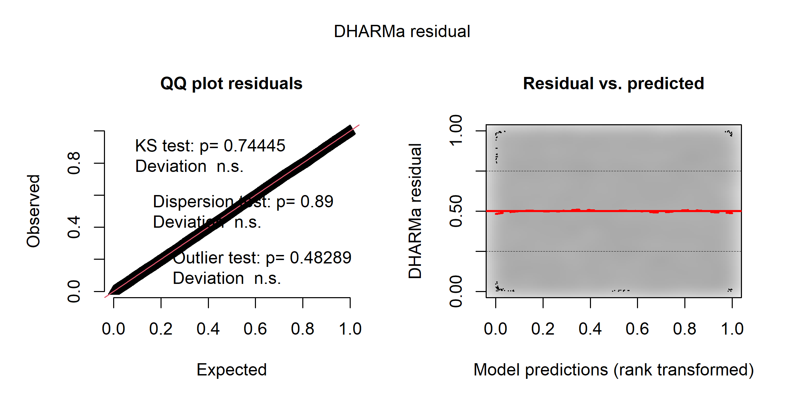
L’analyse approfondie des résidus nous permet donc de conclure que le modèle respecte les conditions d’application et que nous pouvons passer à la vérification de la qualité d’ajustement du modèle.
Vérification de la qualité d’ajustement
Pour calculer les différents R2 d’un modèle GLM, nous proposons la fonction suivante :
rsqs <- function(loglike.full, loglike.null, full.deviance, null.deviance, nb.params, n){
# Calcul de la déviance expliquée
explained_dev <- 1-(full.deviance / null.deviance)
K <- nb.params
# R2 de McFadden ajusté
r2_faddenadj <- 1- (loglike.full - K) / loglike.null
Lm <- loglike.full
Ln <- loglike.null
# R2 de Cox and Snell
Rcs <- 1 - exp((-2/n) * (Lm-Ln))
# R2 de Nagelkerke
Rn <- Rcs / (1-exp(2*Ln/n))
return(
list("deviance expliquee" = explained_dev,
"McFadden ajuste" = r2_faddenadj,
"Cox and Snell" = Rcs,
"Nagelkerke" = Rn
)
)
}Nous l’utilisons pour l’ensemble des modèles GLM de ce chapitre. Dans le cas du modèle binomial, nous obtenons :
# Ajuster un modele null avec seulement une constante
model2.null <- glm(y ~1,
family = binomial(link="logit"),
data = dfenquete2)
# Calculer les R2
rsqs(loglike.full = as.numeric(logLik(model2)), # loglikelihood du modèle complet
loglike.null = as.numeric(logLik(model2.null)), # loglikelihood du modèle nul
full.deviance = deviance(model2), # déviance du modèle complet
null.deviance = deviance(model2.null), # déviance du modèle nul
nb.params = model2$rank, # nombre de paramètres dans le modèle
n = nrow(dfenquete2) # nombre d'observations
)$`deviance expliquee`
[1] 0.0876057
$`McFadden ajuste`
[1] 0.08357379
$`Cox and Snell`
[1] 0.0689509
$Nagelkerke
[1] 0.1236597La déviance expliquée par le modèle est de 8,8 %, les pseudos R2 de McFadden (ajusté), d’Efron et de Nagelkerke sont respectivement 0,084, 0,069 et 0,124. Toutes ces valeurs sont relativement faibles et indiquent qu’une large partie de la variabilité de Y reste inexpliquée.
Pour vérifier la qualité de prédiction du modèle, nous devons comparer les catégories prédites et les catégories réelles de notre variable dépendante et construire une matrice de confusion. Cependant, un modèle GLM binomial prédit la probabilité d’appartenance au groupe 1 (ici les personnes utilisant le vélo pour effectuer leur déplacement le plus fréquent). Pour convertir ces probabilités prédites en catégories prédites, il faut choisir un seuil de probabilité au-delà duquel nous considérons que la valeur attendue est 1 (cycliste) plutôt que 0 (autre). Un exemple naïf serait de prendre le seuil 0,5, ce qui signifierait que si le modèle prédit qu’une observation a au moins 50 % de chance d’être une personne à vélo, alors nous l’attribuons à cette catégorie. Cependant, cette méthode est rarement optimale; il est donc plus judicieux de fixer le seuil de probabilité en trouvant le point d’équilibre entre la sensibilité (proportion de 1 correctement identifiés) et la spécificité (proportion de 0 correctement identifiés). Ce point d’équilibre est identifiable graphiquement en calculant la spécificité et la sensibilité de la prédiction selon toutes les valeurs possibles du seuil.
library(ROCR)
# Obtention des prédictions du modèle
prob <- predict(model2, type = "response")
# Calcul de la sensibilité et de la spécificité (package ROCR)
predictions <- prediction(prob, dfenquete2$y)
sens <- data.frame(x = unlist(ROCR::performance(predictions, "sens")@x.values),
y = unlist(ROCR::performance(predictions, "sens")@y.values))
spec <- data.frame(x = unlist(ROCR::performance(predictions, "spec")@x.values),
y = unlist(ROCR::performance(predictions, "spec")@y.values))
# Trouver numériquement la valeur seuil (minimiser la différence absolue
# entre sensibilité et spécificité)
real <- dfenquete2$y
find_cutoff <- function(seuil){
pred <- ifelse(prob>seuil,1,0)
sensi <- sum(real==1 & pred==1) / sum(real==1)
spec <- sum(real==0 & pred==0) / sum(real==0)
return(abs(sensi-spec))
}
prob_seuil <- optimize(find_cutoff, interval = c(0,1), maximum = FALSE)$minimum
cat("Le seuil de probabilité à retenir équilibrant",
"la sensibilité et la spécificité est de", prob_seuil)Le seuil de probabilité à retenir équilibrant la sensibilité et la spécificité est de 0.14785# Affichage du graphique
ggplot() +
geom_line(data = sens, mapping = aes(x = x, y = y)) +
geom_line(data = spec, mapping = aes(x = x, y = y, col="red")) +
scale_y_continuous(sec.axis = sec_axis(~., name = "Spécificité")) +
labs(x = "Seuil de probabilité", y = "Sensibilité") +
geom_vline(xintercept = prob_seuil, color = "black", linetype = "dashed") +
annotate(geom = "text", x = prob_seuil, y = 0.01, label = round(prob_seuil,3))+
theme(axis.title.y.right = element_text(colour = "red"), legend.position = "none")Nous constatons à la figure 8.8 que si la valeur du seuil est 0 %, alors la prédiction a une sensibilité parfaite (le modèle prédit toujours 1, donc tous les 1 sont détectés); à l’inverse, si le seuil choisi est 100 %, alors la prédiction à une spécificité parfaite (le modèle prédit toujours 0, donc tous les 0 sont détectés). Dans notre cas, la valeur d’équilibre est d’environ 0,148, donc si le modèle prédit une probabilité au moins égale à 14,8 % qu’un individu utilise le vélo pour son déplacement le plus fréquent, nous devons l’attribuer à la catégorie cycliste. Avec ce seuil, nous pouvons convertir les probabilités prédites en classes prédites et construire notre matrice de confusion.
library(caret) # pour la matrice de confusion
# Calcul des catégories prédites
ypred <- ifelse(predict(model2, type = "response")>0.148,1,0)
info <- confusionMatrix(as.factor(dfenquete2$y), as.factor(ypred))
# Affichage des valeurs brutes de la matrice de confusion
print(info)Confusion Matrix and Statistics
Reference
Prediction 0 1
0 14355 7576
1 1251 2365
Accuracy : 0.6545
95% CI : (0.6486, 0.6603)
No Information Rate : 0.6109
P-Value [Acc > NIR] : < 2.2e-16
Kappa : 0.1783
Mcnemar's Test P-Value : < 2.2e-16
Sensitivity : 0.9198
Specificity : 0.2379
Pos Pred Value : 0.6546
Neg Pred Value : 0.6540
Prevalence : 0.6109
Detection Rate : 0.5619
Detection Prevalence : 0.8585
Balanced Accuracy : 0.5789
'Positive' Class : 0
Les résultats proposés par le package caret sont exhaustifs; nous vous proposons ici une façon de les présenter dans deux tableaux : l’un présente la matrice de confusion (tableau 8.8) et l’autre, les indicateurs de qualité de prédiction (tableau 8.9).
| 0 (réel) | 1 (réel) | Total | % | ||
|---|---|---|---|---|---|
| 0 | 0 (prédit) | 14355 | 7576 | 21931 | 85.8 |
| 1 | 1 (prédit) | 1251 | 2365 | 3616 | 14.2 |
| Total | 15606 | 9941 | 25547 | ||
| % | 61.1 | 38.9 |
D’après ces indicateurs, nous constatons que le modèle a une capacité de prédiction relativement faible, mais tout de même significativement supérieure au seuil de non-information. La valeur de rappel pour la catégorie 1 (cycliste) est faible, indiquant que le modèle a manqué un nombre important de cyclistes lors de sa prédiction.
| Précision | Rappel | F1 | ||
|---|---|---|---|---|
| 0 | 0 | 0.65 | 0.92 | 0.76 |
| 1 | 1 | 0.65 | 0.24 | 0.35 |
| macro_scores | macro | 0.65 | 0.65 | 0.6 |
| Kappa | 0.18 | |||
| Valeur de p (précision > NIR) | < 0,0001 |
Interprétation des résultats du modèle
L’interprétation des résultats d’un modèle binomial passe par la lecture des rapports de cotes (exponentiel des coefficients) et de leurs intervalles de confiance. Nous commençons donc par calculer la version robuste des erreurs standards des coefficients.
library(dplyr)
library(sandwich) # pour calculer les erreurs standards robustes
covModel2 <- vcovHC(model2, type = "HC0") # méthode HC0, basée sur les résidus
stdErrRobuste <- sqrt(diag(covModel2)) # extraire la diagonale
# Extraction des coefficients
coeffs <- model2$coefficients
# Recalcul des scores Z
zvalRobuste <- coeffs / stdErrRobuste
# Recalcul des valeurs de P
pvalRobuste <- 2 * pnorm(abs(zvalRobuste), lower.tail = FALSE)
# Calcul des rapports de cote
oddRatio <- exp(coeffs)
# Calcul des intervalles de confiance à 95 % des rapports de cote
lowerBound <- exp(coeffs - 1.96 * stdErrRobuste)
upperBound <- exp(coeffs + 1.96 * stdErrRobuste)
# Étoiles pour les valeurs de p
starsp <- case_when(pvalRobuste <= 0.001 ~ "***",
pvalRobuste > 0.001 & pvalRobuste <= 0.01 ~ "**",
pvalRobuste > 0.01 & pvalRobuste <= 0.05 ~ "*",
pvalRobuste > 0.05 & pvalRobuste <= 0.1 ~ ".",
TRUE ~ ""
)
# Compilation des résultats dans un tableau
tableau_binom <- data.frame(
coefficients = coeffs,
rap.cote = oddRatio,
err.std = stdErrRobuste,
score.z = zvalRobuste,
p.val = pvalRobuste,
rap.cote.2.5 = lowerBound,
rap.cote.97.5 = upperBound,
sign = starsp
)Considérant que la variable Pays a 24 modalités, il est plus judicieux de présenter ses 23 rapports de cotes sous forme d’un graphique. Nous avons choisi l’Allemagne comme catégorie de référence puisqu’elle fait partie des pays avec une importante part modale pour le vélo sans pour autant constituer un cas extrême comme le Danemark.
# Isoler les ligne du tableau récapitualtif pour les pays
paysdf <- subset(tableau_binom, grepl("Pays", row.names(tableau_binom), fixed = TRUE))
#paysdf$Pays <- gsub("Pays" , "", row.names(paysdf), fixed = TRUE)
paysdf$Pays <- substr(row.names(paysdf), 5, nchar(row.names(paysdf)))
ggplot(data = paysdf) +
geom_vline(xintercept = 1, color = "red")+ #afficher la valeur de référence
geom_errorbarh(aes(xmin = rap.cote.2.5, xmax = rap.cote.97.5,
y = reorder(Pays, rap.cote)), height = 0)+
geom_point(aes(x = rap.cote, y = reorder(Pays, rap.cote))) +
geom_text(aes(x = rap.cote.97.5, y = reorder(Pays, rap.cote),
label = paste("RC : ", round(rap.cote,2), sep = "")),
size = 3, nudge_x = 0.25)+
labs(x = "Rapports de cote", y = "Pays (référence : Allemagne)")
Dans la figure 8.9, la barre horizontale pour chaque pays représente l’intervalle de confiance de son rapport de cotes (le point); plus cette ligne est longue, plus grande est l’incertitude autour de ce paramètre. Lorsque les lignes de deux pays se chevauchent, cela signifie qu’il n’y a pas de différence significative au seuil 0,05 entre les rapports de cotes des deux pays. La ligne rouge tracée à x = 1, représente le rapport de cotes du pays de référence (ici l’Allemagne). Nous constatons ainsi que comparativement à un individu vivant en Allemagne, ceux vivant au Danemark et aux Pays-Bas ont 2,4 fois plus de chances d’utiliser le vélo pour leur déplacement le plus fréquent. Les Pays de l’Ouest (France, Luxembourg, Royaume-Uni, Irlande) et du Sud (Grèce, Italie, Espagne, Portugal) ont en revanche des rapports de cotes plus faibles. En France, les chances qu’un individu utilise le vélo pour son trajet le plus fréquent sont 3,22 (1/0,31) fois plus faibles que si l’individu vivait en Allemagne.
Pour le reste des coefficients et des rapports de cotes, nous les rapportons dans le tableau 8.10.
| Variable | Coefficient | Rapport de cote | Err.std | Val.z | P | RC 2,5 % | RC 97,5 % |
|---|---|---|---|---|---|---|---|
| Constante | -2,497 | 0,082 | 0,183 | -13,674 | 0,000 | 0,058 | 0,118 |
| Sexe | |||||||
| ref : femme | – | – | – | – | – | – | – |
| homme | 0,372 | 1,451 | 0,038 | 9,803 | 0,000 | 1,347 | 1,562 |
| Age | -0,009 | 0,991 | 0,002 | -5,361 | 0,000 | 0,988 | 0,994 |
| Education | |||||||
| ref : premier cycle | – | – | – | – | – | – | – |
| secondaire | 0,193 | 1,213 | 0,105 | 1,836 | 0,066 | 0,987 | 1,490 |
| secondaire inferieur | 0,301 | 1,351 | 0,114 | 2,649 | 0,008 | 1,081 | 1,687 |
| universite | 0,146 | 1,157 | 0,108 | 1,349 | 0,177 | 0,936 | 1,432 |
| StatutEmploi | |||||||
| ref : employe | – | – | – | – | – | – | – |
| sans emploi | 0,257 | 1,293 | 0,043 | 6,045 | 0,000 | 1,190 | 1,405 |
| Revenu | |||||||
| ref : eleve | – | – | – | – | – | – | – |
| faible | 0,077 | 1,080 | 0,072 | 1,067 | 0,286 | 0,938 | 1,244 |
| moyen | 0,042 | 1,043 | 0,065 | 0,639 | 0,523 | 0,917 | 1,185 |
| sans reponse | 0,217 | 1,242 | 0,102 | 2,120 | 0,034 | 1,016 | 1,517 |
| tres eleve | -0,120 | 0,887 | 0,188 | -0,637 | 0,524 | 0,613 | 1,283 |
| tres faible | 0,240 | 1,271 | 0,086 | 2,776 | 0,006 | 1,073 | 1,505 |
| Residence | |||||||
| ref : aire metropolitaine | – | – | – | – | – | – | – |
| grande ville | 0,273 | 1,314 | 0,070 | 3,911 | 0,000 | 1,146 | 1,507 |
| petite-moyenne ville | 0,277 | 1,319 | 0,061 | 4,503 | 0,000 | 1,169 | 1,487 |
| zone rurale | -0,119 | 0,888 | 0,069 | -1,713 | 0,087 | 0,775 | 1,017 |
| Duree | -0,001 | 0,999 | 0,001 | -0,981 | 0,326 | 0,998 | 1,001 |
| ConsEnv | 0,102 | 1,108 | 0,010 | 10,502 | 0,000 | 1,087 | 1,130 |
Les chances pour un individu d’utiliser le vélo pour son trajet le plus fréquent sont augmentées de 45 % s’il s’agit d’un homme plutôt qu’une femme. Pour l’âge, nous constatons un effet relativement faible puisque chaque année supplémentaire réduit les chances qu’un individu utilise le vélo comme mode de transport pour son trajet le plus fréquent de 0,9 % \(((\mbox{0,991}-\mbox{1})\times\mbox{100})\). Le fait d’être sans emploi augmente les chances d’utiliser le vélo de 29 % comparativement au fait d’avoir un emploi. Concernant le niveau d’éducation, seul le coefficient pour le groupe des personnes de la catégorie « secondaire inférieure » est significatif, indiquant que les personnes de ce groupe ont 35 % de chances en plus d’utiliser le vélo comme mode de transport pour leur déplacement le plus fréquent comparativement aux personnes de la catégorie « premier cycle ». Pour le revenu, seul le groupe avec de très faibles revenus se distingue significativement du groupe avec un revenu élevé avec un rapport de cotes de 1,27, soit 27 % de chances en plus d’utiliser le vélo.
Comparativement à ceux vivant dans une aire métropolitaine, les personnes vivant dans de petites, moyennes et grandes villes ont des chances accrues d’utiliser le vélo comme mode de déplacement pour leur trajet le plus fréquent. En revanche, nous n’observons aucune différence entre la probabilité d’utiliser le vélo dans une métropole et en zone rurale. La figure 8.10 permet de clairement visualiser cette situation. Rappelons que la référence est la situation : vivre dans une région métropolitaine, représentée par la ligne verticale rouge. Plusieurs pistes d’interprétation peuvent être envisagées pour ce résultat :
En métropole et dans les zones rurales, les distances domicile-travail tendent à être plus grandes que dans les petites, moyennes et grandes villes.
En métropole, le système de transport en commun est davantage développé et entre donc en concurrence avec les modes de transport actifs.
# Isoler les lignes du tableau récapitulatif pour les lieux de résidence
residdf <- subset(tableau_binom, grepl("Residence", row.names(tableau_binom), fixed = TRUE))
residdf$resid <- gsub("Residence" , "", row.names(residdf), fixed=T)
ggplot(data = residdf) +
geom_vline(xintercept = 1, color = "red")+ #afficher la valeur de référence
geom_errorbarh(aes(xmin = rap.cote.2.5, xmax = rap.cote.97.5, y = resid), height = 0)+
geom_point(aes(x = rap.cote, y = resid)) +
geom_text(aes(x = rap.cote.97.5, y = resid,
label = paste("RC : ", round(rap.cote,2), sep = "")),
size = 3, nudge_x = 0.1)+
labs(x = "Rapports de cotes",
y = "Lieu de résidence (référence : aire métropolitaine)")
Il est aussi intéressant de noter que la durée des trajets ne semble pas influencer la probabilité d’utiliser le vélo. Enfin, une conscience environnementale plus affirmée semble être associée avec une probabilité supérieure d’utiliser le vélo pour son déplacement le plus fréquent, avec une augmentation des chances de 11 % pour chaque point supplémentaire sur l’échelle de Likert.
Afin de simplifier la présentation de certains résultats, il est possible de calculer exactement les prédictions réalisées par le modèle. Un bon exemple ici est le cas de la variable âge. À quelle différence pouvons-nous nous attendre entre deux individus identiques ayant seulement une différence d’âge de 15 ans?
Prenons comme individu un homme de 30 ans, vivant dans une grande ville allemande, ayant un niveau d’éducation de niveau secondaire, employé, dans la tranche de revenu moyen, déclarant effectuer un trajet de 45 minutes et ayant rapporté un niveau de conscience environnementale de 5 (sur 10). Nous pouvons prédire la probabilité qu’il utilise le vélo pour son trajet le plus fréquent en utilisant la formule suivante :
\[logit(p) = -\mbox{2,497} + \mbox{1} \times \mbox{0,372} + \mbox{30} \times -\mbox{0,009} + \mbox{1} \times \mbox{0,193} + \mbox{1} \times \mbox{0,042} + \mbox{1} \times \mbox{0,273} + \mbox{45} \times -\mbox{0,001} + \mbox{5} \times \mbox{0,102}\]
\[p = \frac{exp(-\mbox{2,497} + \mbox{1} \times \mbox{0,372} + \mbox{30} \times -\mbox{0,009} + \mbox{1} \times \mbox{0,193} + \mbox{1} \times \mbox{0,042} + 1 \times \mbox{0,273} + 45 \times -\mbox{0,001} + \mbox{5} \times \mbox{0,102})}{(\mbox{1}+exp(-\mbox{2,497} + 1 \times \mbox{0,372} + \mbox{30} \times-\mbox{0,009} + 1 \times \mbox{0,193} + 1 \times \mbox{0,042} + \mbox{1} \times \mbox{0,273} + \mbox{45} \times -\mbox{0,001} + 5 \times \mbox{0,102}))} = \mbox{0,194}\]
Il y aurait 19,4 % de chances pour que cette personne soit cycliste. Comme cette probabilité dépasse le seuil que nous avons sélectionné, cette personne serait classée comme cycliste. Si nous augmentons son âge de 15 ans, nous obtenons :
\[p = \frac{exp(-\mbox{2,497} + \mbox{1} \times \mbox{0,372} + \mbox{45} \times \mbox{-0,009} + \mbox{1} \times \mbox{0,193} + \mbox{1} \times \mbox{0,042} + \mbox{1} \times \mbox{0,273} + \mbox{45} \times -\mbox{0,001} + \mbox{5} \times \mbox{0,102})} {(\mbox{1}+exp(-\mbox{2,497} + \mbox{1} \times \mbox{0,372} + \mbox{45} \times -\mbox{0,009} + \mbox{1} \times \mbox{0,193} + \mbox{1} \times \mbox{0,042} + \mbox{1} \times \mbox{0,273} + \mbox{45} \times -\mbox{0,001} + \mbox{5} \times \mbox{0,102}))} = \mbox{0,174}\]
soit une réduction de 2 points de pourcentages. Il est également possible de représenter cette évolution sur un graphique pour montrer l’effet sur l’étendue des valeurs possibles. Sur ces graphiques des effets marginaux, il est essentiel de représenter l’incertitude quant à la prédiction. En temps normal, la fonction predict calcule directement l’erreur standard de la prédiction et cette dernière peut être utilisée pour calculer l’intervalle de confiance de la prédiction. Cependant, nous voulons ici utiliser nos erreurs standards robustes. Nous devons donc procéder par simulation pour déterminer l’intervalle de confiance à 95 % de nos prédictions. Cette opération nécessite de réaliser plusieurs opérations manuellement dans R.
# Créer un jeu de données fictif pour la prédiction
mat <- model.matrix(model2$terms, model2$model)
age2seq <- seq(20, 80)
mat2 <- matrix(mat[1,], nrow = length(age2seq), ncol = length(mat[1,]), byrow = TRUE)
colnames(mat2) <- colnames(mat)
mat2[,"Age"] <- age2seq
mat2[,"PaysBelgique"] <- 0
mat2[,"Duree"] <- 45
mat2[,"ConsEnv"] <- 5
mat2[,"StatutEmploisans emploi"] <- 0
mat2[,"Residencegrande ville"] <- 1
mat2[,"Educationsecondaire"] <- 1
mat2[,"Sexehomme"] <- 1
mat2[,"Revenumoyen"] <- 1
mat2[,"Revenufaible"] <- 0
# Calculer la prédiction comme un log de rapport de cote (avec les erreurs standards)
# en multipliant les coefficient par les valeurs des données fictives
coeffs <- model2$coefficients
pred <- coeffs %*% t(mat2)
# Simulation de prédictions (toujours en log de rapport de cote)
# Étape 1 : simuler 1000 valeurs pour chaque coefficient
sim_coeffs <- lapply(1:length(coeffs), function(i){
coef <- coeffs[[i]]
std.err <- stdErrRobuste[[i]]
vals <- rnorm(n = 1000, mean = coef, sd = std.err)
return(vals)
})
mat_sim_coeffs <- do.call(rbind, sim_coeffs)
# Étape 2 : effectuer les prédictions à partir des coefficients simulés
sim_preds <- lapply(1:ncol(mat_sim_coeffs), function(i){
temp_coefs <- mat_sim_coeffs[,i]
temp_pred <- as.vector(temp_coefs %*% t(mat2))
return(temp_pred)
})
mat_sim_preds <- do.call(cbind, sim_preds)
# Étape 3 : extraire les intervalles de confiance pour les simulations
intervals <- apply(mat_sim_preds, MARGIN = 1, FUN = function(vec){
return(quantile(vec, probs = c(0.025, 0.975)))
})
# Étape 4 : récupérer tous ces éléments dans un DataFrame
df <- data.frame(
Age = seq(20,80),
pred = as.vector(pred),
lower = as.vector(intervals[1,]),
upper = as.vector(intervals[2,])
)
# Étape 5 : appliquer l'inverse de la fonction de lien pour
# obtenir les prédictions en termes de probabilité
ilink <- family(model2)$linkinv
df$prob_pred <- ilink(df$pred)
df$prob_lower <- ilink(df$lower)
df$prob_upper <- ilink(df$upper)
# Étape 6 : représenter le tout sur un graphique
ggplot(df) +
geom_ribbon(aes(x = Age, ymax = prob_upper, ymin = prob_lower),
fill = rgb(0.1,0.1,0.1,0.4)) +
geom_path(aes(x = Age, y = prob_pred), color = "blue", size = 1) +
geom_hline(yintercept = 0.15, linetype = "dashed", size = 0.7) +
labs(x = "Âge", y = "Probabilité prédite (intervalle de confiance à 95 %)")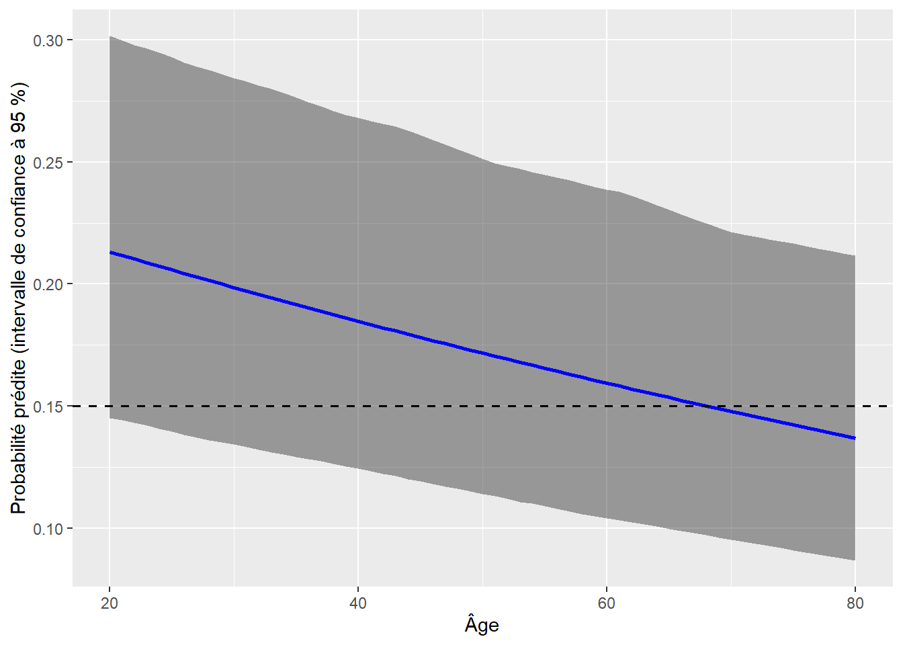
La figure 8.11 permet de bien constater la diminution de la probabilité d’utiliser le vélo pour son trajet le plus fréquent avec l’âge, mais cette réduction est relativement ténue. Dans le cas utilisé en exemple, l’individu ne serait plus classé cycliste qu’après 67 ans.
8.2.2 Modèle probit binomial
Le modèle GLM probit binomial est pour ainsi dire le frère du modèle logistique binomial. La seule différence entre les deux réside dans l’utilisation d’une autre fonction de lien: probit plutôt que logistique. La fonction de lien probit (Φ) correspond à la fonction cumulative de la distribution normale et a également une forme de S. Cette version du modèle est plus souvent utilisée par les économistes. Le principal changement réside dans l’interprétation des coefficients \(\beta_0\) et \(\beta\). Du fait de la transformation probit, ces derniers indiquent le changement en termes de scores Z de la probabilité modélisée. Vous conviendrez qu’il ne s’agit pas d’une échelle très intuitive; la plupart du temps, seuls la significativité et le signe (positif ou négatif) des coefficients sont interprétés.
| Type de variable dépendante | Variable binaire (0 ou 1) ou comptage de réussite à une expérience (ex : 3 réussites sur 5 expériences) |
| Distribution utilisée | Binomiale |
| Formulation | \(Y \sim Binomial(p)\) \(g(p) = \beta_0 + \beta X\) \(g(x) = \Phi^-1(x)\) |
| Fonction de lien | probit |
| Paramètre modélisé | p |
| Paramètres à estimer | \(\beta_0\), \(\beta\) |
| Conditions d’application | Non-séparation complète, absence de sur-dispersion ou de sous-dispersion |
8.2.3 Modèle logistique des cotes proportionnelles
Le modèle logistique des cotes proportionnelles (aussi appelé modèle logistique cumulatif) est utilisé pour modéliser une variable qualitative ordinale. Un exemple classique de ce type de variable est une échelle de satisfaction (très insatisfait, insatisfait, mitigé, satisfait, très satisfait) qui peut être recodée avec des valeurs numériques (0, 1, 2, 3, 4; ces échelons étant notés j). Il n’existe pas à proprement parler de distribution pour représenter ces données, mais avec une petite astuce, il est possible de simplement utiliser la distribution binomiale. Cette astuce consiste à poser l’hypothèse de la proportionnalité des cotes, soit que le passage de la catégorie 0 à la catégorie 1 est proportionnel au passage de la catégorie 1 à la catégorie 2 et ainsi de suite. Si cette hypothèse est respectée, alors les coefficients du modèle pourront autant décrire le passage de la catégorie satisfait à celle très satisfait que le passage de insatisfait à mitigé. Si cette hypothèse n’est pas respectée, il faudrait des coefficients différents pour représenter les passages d’une catégorie à l’autre (ce qui est le cas pour le modèle multinomial présenté dans la section 8.2.4).
| Type de variable dépendante | Variable qualitative ordinale avec j catégories |
| Distribution utilisée | Binomiale |
| Formulation | \(Y \sim Binomial(p)\) \(g(p \leq j) = \beta_{0j} + \beta X\) \(g(x) = log(\frac{x}{1-x})\) |
| Fonction de lien | logistique |
| Paramètre modélisé | p |
| Paramètres à estimer | \(\beta\) et j-1 constantes \(\beta_{0j}\) |
| Conditions d’application | Non-séparation complète, absence de sur-dispersion ou de sous-dispersion, Proportionnalité des cotes |
Ainsi, dans le modèle logistique binomial vu précédemment, nous modélisons la probabilité d’observer un évènement \(P(Y = 1)\). Dans un modèle logistique ordinal, nous modélisons la probabilité cumulative d’observer l’échelon j de notre variable ordinale \(P(Y \leq j)\). L’intérêt de cette reformulation est que nous conservons la facilité d’interprétation du modèle logistique binomial classique avec les rapports de cotes, à ceci prêt qu’ils représentent maintenant la probabilité de passer à un échelon supérieur de Y. La différence pratique est que notre modèle se retrouve avec autant de constantes qu’il y a de catégories à prédire moins une, chacune de ces constantes contrôlant la probabilité de base de passer de la catégorie j à la catégorie j + 1.
8.2.3.1 Conditions d’application
Les conditions d’application sont les mêmes que pour un modèle binomial, avec bien sûr l’ajout de l’hypothèse sur la proportionnalité des cotes. Selon cette hypothèse, l’effet de chaque variable indépendante est identique sur la probabilité de passer d’un échelon de la variable Y au suivant. Afin de tester cette condition, deux approches sont envisageables :
Utiliser l’approche de Brant (1990). Il s’agit d’un test statistique comparant les résultats du modèle ordinal avec ceux d’une série de modèles logistiques binomiaux (1 pour chaque catégorie possible de Y).
Ajuster un modèle ordinal sans l’hypothèse de proportionnalité des cotes et effectuer un test de ratio des likelihood pour vérifier si le premier est significativement mieux ajusté.
Si certaines variables ne respectent pas cette condition d’application, trois options sont possibles pour y remédier :
Supprimer la variable du modèle (à éviter si cette variable est importante dans votre cadre théorique).
Autoriser la variable à avoir un effet différent entre chaque palier (possible avec le package
VGAM).Changer de modèle et opter pour un modèle des catégories adjacentes. Il s’agit du cas particulier où toutes les variables sont autorisées à changer à chaque niveau. Ne pas confondre ce dernier modèle et le modèle multinomial (section 8.2.4), puisque le modèle des catégories adjacentes continue à prédire la probabilité de passer à une catégorie supérieure.
8.2.3.2 Exemple appliqué dans R
Pour cet exemple, nous analysons un jeu de données proposé par Inside Airbnb, une organisation sans but lucratif collectant des données des annonces sur le site d’Airbnb pour alimenter le débat sur l’effet de cette société sur les quartiers. Plus spécifiquement, nous utilisons le jeu de données pour Montréal compilé le 30 juin 2020. Nous modélisons ici le prix par nuit des logements, ce type d’exercice est appelé modélisation hédonique. Il est particulièrement utilisé en économie urbaine pour évaluer les déterminants du marché immobilier et prédire son évolution. Le cas d’Airbnb a déjà été étudié dans plusieurs articles (Teubner, Hawlitschek et Dann 2017; Wang et Nicolau 2017; Zhang et al. 2017). Il en ressort notamment que le niveau de confiance inspiré par l’hôte, les caractéristiques intrinsèques du logement et sa localisation sont les principales variables indépendantes de son prix. Nous construisons donc notre modèle sur cette base. Notez que nous avons décidé de retirer les logements avec des prix supérieurs à 250 $ par nuit qui constituent des cas particuliers et qui devraient faire l’objet d’une analyse à part entière. Nous avons également retiré les observations pour lesquelles certaines données sont manquantes, et obtenons un nombre final de 9 051 observations.
La distribution originale du prix des logements dans notre jeu de données est présentée à la figure 8.12.
# Charger le jeu de données
data_airbnb <- read.csv("data/glm/airbnb_data.csv")
# Afficher la distribution du prix
ggplot(data = data_airbnb) +
geom_histogram(aes(x = price), bins = 30,
color = "white", fill = "#1d3557", linewidth = 0.02)+
labs(x = "Prix (en dollars)", y = "Fréquence")
Nous avons ensuite découpé le prix des logements en trois catégories : inférieur à 50 $, de 50 $ à 99 $ et de 100 $ à 249 $. Ces catégories forment une variable ordinale de trois échelons que nous modélisons à partir de trois catégories de variables :
- les caractéristiques propres au logement;
- les caractéristiques environnementales autour du logement;
- les notes obtenues par le logement sur le site d’Airbnb.
# Afficher le nombre de logement par catégories
table(data_airbnb$fac_price_cat)
1 2 3
2212 3911 2928 Le tableau 8.13 présente l’ensemble des variables utilisées dans le modèle.
| Nom de la variable | Description | Type de variable | Mesure |
|---|---|---|---|
| beds | Nombre de lits dans le logement | Variable de comptage | Nombre de lits dans le logement |
| Garden_or_backyard | Présence d’un jardin ou d’une arrière-cour | Variable binaire | Oui ou non |
| private | Le logement est entièrement à disposition du locataire ou seulement une pièce | Variable binaire | Privé ou partagé |
| Free_street_parking | Une place de stationnement gratuite est disponible sur la rue | Variable binaire | Oui ou non |
| Host_greets_you | L’hôte accueille personnellement les locataires | Variable binaire | Oui ou non |
| prt_veg_500m | Végétation dans les environs du logement | Variable continue | Pourcentage de surface végétale dans un rayon de 500 mètres autour du logement |
| has_metro_500m | Présence d’une station de métro à proximité du logement | Variable binaire | Présence d’une station de métro dans un rayon de 500 mètres autour du logement |
| commercial_1km | Commerce dans les environs du logement | Variable continue | Pourcentage de surface dédiée au commerce (mode d’occupation du sol) dans un rayon d’un kilomètre autour du logement |
| cat_review | Évaluation de la qualité du logement par les usagers | Variable ordinale | Note obtenue par le logement sur une échelle allant de 1 (très mauvais) à 5 (parfait) |
| host_total_listings_count | Nombre total de logements détenus par l’hôte sur Airbnb | Variable de comptage | Nombre total de logements détenus par l’hôte sur Airbnb |
Vérification des conditions d’application
Avant d’ajuster le modèle, il convient de vérifier l’absence de multicolinéarité excessive entre les variables indépendantes.
# Notez que la fonction vif ne s'intéresse qu'aux variables indépendantes.
# Vous pouvez ainsi utiliser la fonction glm avec la fonction vif
# pour n'importe quel modèle glm
vif(glm(price ~ beds +
Garden_or_backyard + Host_greets_you + Free_street_parking +
prt_veg_500m + has_metro_500m + commercial_1km +host_total_listings_count +
private + cat_review, data = data_airbnb)) beds Garden_or_backyard Host_greets_you
1.123595 1.079324 1.046884
Free_street_parking prt_veg_500m has_metro_500m
1.142189 1.532536 1.239516
commercial_1km host_total_listings_count private
1.225301 1.058232 1.143932
cat_review
1.015778 Toutes les valeurs de VIF sont inférieures à 2, indiquant une absence de multicolinéarité excessive. Nous pouvons alors ajuster le modèle et analyser les distances de Cook afin de vérifier la présence ou non d’observations très influentes. Pour ajuster le modèle, nous utilisons le package VGAM et la fonction vglm qui nous donnent accès à la famille cumulative pour ajuster des modèles logistiques ordinaux. Notez que le fonctionnement de base de cette famille est de modéliser \(P(Y\leq1),P(Y\leq2),...,P(Y\leq J)\) avec J le nombre de catégories. Cependant, nous voulons ici modéliser la probabilité de passer à une catégorie supérieure de prix. Pour cela, il est nécessaire de spécifier le paramètre reverse = TRUE pour la famille cumulative (voir help(cumulative) pour plus de détails).
library(VGAM)
modele <- vglm(fac_price_cat ~ beds +
Garden_or_backyard + Free_street_parking +
prt_veg_500m + has_metro_500m + commercial_1km +
private + cat_review + host_total_listings_count ,
family = cumulative(link="logitlink", # fonction de lien
parallel = TRUE, # cote proportionnelle
reverse = TRUE),
data = data_airbnb, model = T)Notez que, puisque la variable Y a trois catégories différentes et que nous modélisons la probabilité de passer à une catégorie supérieure, chaque observation a alors deux (3-1) valeurs de résidus différentes. Par conséquent, nous calculons deux distances de Cook différentes que nous devons analyser conjointement. Malheureusement, la fonction cook.distance ne fonctionne pas avec les objets vglm, nous devons donc les calculer manuellement.
library(ggpubr)
# Extraction des résidus
res <- residuals(modele, type = "pearson")
# Extraction de la hat matrix (nécessaire pour calculer la distance de Cook)
hat <- hatvaluesvlm(modele)
# Calcul des distances de Cook
cooks <- lapply(1:ncol(res), function(i){
r <- res[,i]
h <- hat[,i]
cook <- (r/(1 - h))^2 * h/(1 * modele@rank)
})
# Structuration dans un DataFrame
matcook <- data.frame(do.call(cbind, cooks))
names(matcook) <- c("dist1" , "dist2")
matcook$oid <- 1:nrow(matcook)
# Afficher les distances de Cook
plot1 <- ggplot(data = matcook) +
geom_point(aes(x = oid, y = dist1), size = 0.2, color = rgb(0.1,0.1,0.1,0.4)) +
labs(x = "", y = "", subtitle = "distance de Cook P(Y>=2)")+
theme(axis.ticks.x = element_blank(),
axis.text.x = element_blank())
plot2 <- ggplot(data = matcook) +
geom_point(aes(x = oid, y = dist2), size = 0.2, color = rgb(0.1,0.1,0.1,0.4)) +
labs(x = "", y = "", subtitle = "distance de Cook P(Y>=3)")+
theme(axis.ticks.x = element_blank(),
axis.text.x = element_blank())
ggarrange(plot1, plot2, ncol = 2, nrow = 1)Les distances de Cook (figure 8.13) nous permettent d’identifier quelques observations potentiellement trop influentes, mais elles semblent être différentes d’un graphique à l’autre. Nous décidons donc de ne pas retirer d’observations à ce stade et de passer à l’analyse des résidus simulés. Pour effectuer des simulations à partir de ce modèle, nous nous basons sur les probabilités d’appartenance prédites par le modèle.
# Extraire les probabilités prédites
predicted <- predict(modele, type = "response")
round(head(predicted, n = 4),3) 1 2 3
1 0.706 0.267 0.028
2 0.073 0.461 0.466
3 0.687 0.283 0.030
4 0.049 0.383 0.568Nous constatons ainsi que, pour la première observation, la probabilité prédite d’appartenir au groupe 1 est de 69,4 %, de 27,7 % pour le groupe 2 et de 2,9 % pour le groupe 3. Si nous effectuons 1 000 simulations, nous pouvons nous attendre à ce qu’en moyenne, sur ces 1 000 simulations, 694 indiqueront 1 comme catégorie prédite, 277 indiqueront 2 et seulement 29 indiqueront 3.
# Nous effectuerons 1000 simulations
nsim <- 1000
# Lancement des simulations pour chaque observation (lignes dans predicted)
simulations <- lapply(1:nrow(predicted), function(i){
probs <- predicted[i,]
sims <- sample(c(1,2,3), size = nsim, replace = TRUE, prob = probs)
return(sims)
})
# Combiner les prédictions dans un tableau
matsim <- do.call(rbind, simulations)
# Observons si nos simulations sont proches de ce que nous attendions
table(matsim[1,])
1 2 3
719 255 26 À partir de ces simulations de prédiction, nous pouvons réaliser un diagnostic des résidus simulés grâce au package DHARMa.
library(DHARMa)
# Extraction de la prédiction moyenne du modèle
pred_cat <- unique(data_airbnb$fac_price_cat)[max.col(predicted)]
# Préparer les données avec le package DHARMa
sim_res <- createDHARMa(simulatedResponse = matsim,
observedResponse = as.numeric(data_airbnb$fac_price_cat),
fittedPredictedResponse = as.numeric(pred_cat),
integerResponse = TRUE)
# Afficher le graphique de diagnostic général
plot(sim_res)
La figure 8.14 nous indique que les résidus simulés suivent bien une distribution uniforme et qu’aucune valeur aberrante n’est observable. Pour affiner notre diagnostic, nous vérifions également si aucune relation ne semble exister entre chaque variable indépendante et les résidus.
# Préparons un plot multiple
par(mfrow=c(3,4))
vars <- c("nombre de lits" = "beds",
"couvert végétal" = "prt_veg_500m",
"commercial" = "commercial_1km",
"nb logements hôte" = "host_total_listings_count",
"jardin" = "Garden_or_backyard",
"accueil" = "Host_greets_you",
"stationnement gratuit" = "Free_street_parking",
"métro" = "has_metro_500m",
"logement privé" = "private",
"évaluation" = "cat_review")
for(name in names(vars)){
v <- vars[[name]]
plotResiduals(sim_res, data_airbnb[[v]], rank = FALSE, quantreg = FALSE, main = "",
xlab = name, ylab = "résidus")
}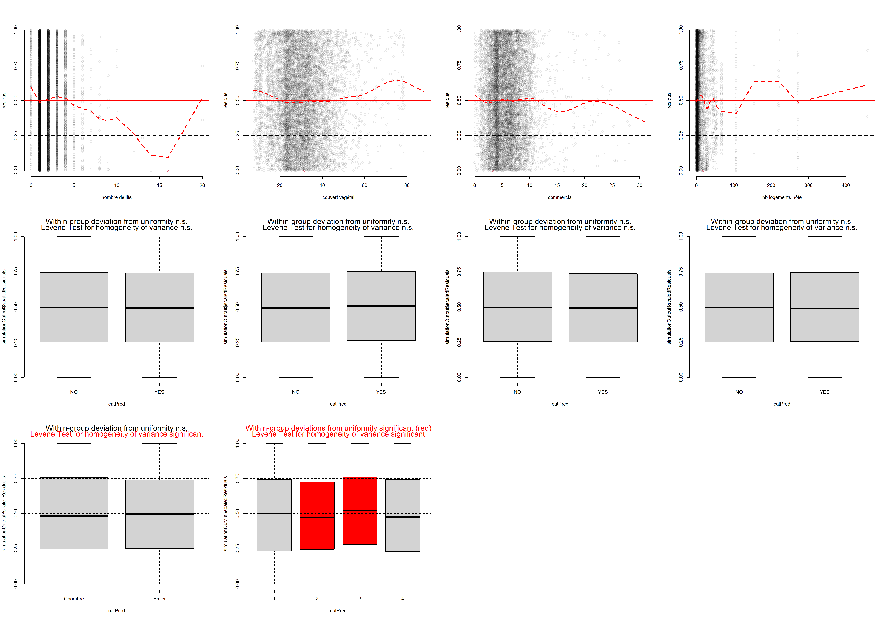
La fonction plotResiduals du package DHARMa produit des graphiques peu esthétiques, mais pratiques pour effectuer ce type de diagnostic.
La figure 8.15 indique qu’aucune relation marquée n’existe entre nos variables indépendantes et nos résidus simulés, sauf pour la variable nombre de lits. En effet, nous pouvons constater que les résidus ont tendance à être toujours plus faibles quand le nombre de lits augmente. Cet effet est sûrement lié au fait qu’au-delà de cinq lits, le logement en question est vraisemblablement un dortoir. Il pourrait être judicieux de retirer ces observations de l’analyse, considérant qu’elles sont peu nombreuses et constituent un type de logement particulier.
data_airbnb2 <- subset(data_airbnb, data_airbnb$beds <=5)
modele2 <- vglm(fac_price_cat ~ beds +
Garden_or_backyard + Free_street_parking +
prt_veg_500m + has_metro_500m + commercial_1km +
private + cat_review + host_total_listings_count ,
family = cumulative(link="logitlink", # fonction de lien
parallel = TRUE, # cote proportionelle
reverse = TRUE),
data = data_airbnb2, model = T)Nous pouvons ensuite recalculer les résidus simulés pour observer si cette tendance a été corrigée. La figure 8.16 montre qu’une bonne partie du problème a été corrigée; cependant, il semble tout de même que les résidus soient plus forts pour les logements avec un seul lit.
# Nous effectuerons 1000 simulations
nsim <- 1000
predicted <- predict(modele2, type = "response")
# Lancement des simulations pour chaque observation (lignes dans predicted)
simulations <- lapply(1:nrow(predicted), function(i){
probs <- predicted[i,]
sims <- sample(c(1,2,3), size = nsim, replace = TRUE, prob = probs)
return(sims)
})
# Combiner les prédictions dans un tableau
matsim <- do.call(rbind, simulations)
# Extraction de la prédiction moyenne du modèle
pred_cat <- unique(data_airbnb2$fac_price_cat)[max.col(predicted)]
# Préparer les donnees avec le package DHARMa
sim_res <- createDHARMa(simulatedResponse = matsim,
observedResponse = as.numeric(data_airbnb2$fac_price_cat),
fittedPredictedResponse = as.numeric(pred_cat),
integerResponse = TRUE)par(mfrow=c(3,4))
vars <- c("nombre de lits" = "beds",
"couvert végétal" = "prt_veg_500m",
"commercial" = "commercial_1km",
"nb logements hôte" = "host_total_listings_count",
"jardin" = "Garden_or_backyard",
"accueil" = "Host_greets_you",
"stationnement gratuit" = "Free_street_parking",
"métro" = "has_metro_500m",
"logement privé" = "private",
"évaluation" = "cat_review")
for(name in names(vars)){
v <- vars[[name]]
plotResiduals(sim_res, data_airbnb2[[v]], rank = FALSE, quantreg = FALSE, main = "",
xlab = name, ylab = "résidus")
}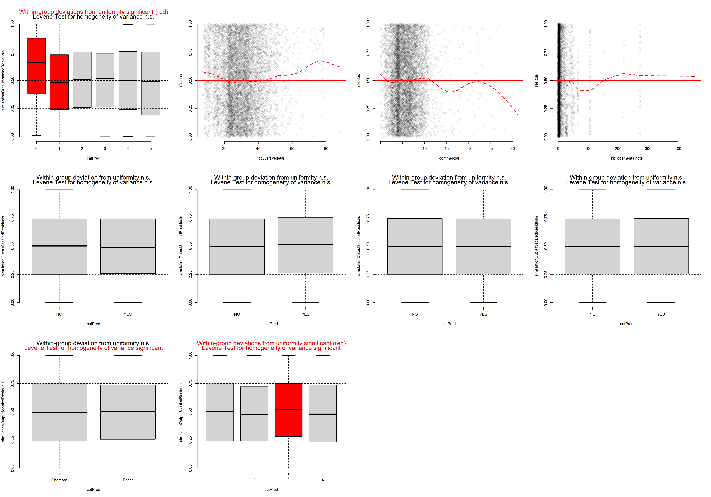
La prochaine étape du diagnostic est de vérifier l’absence de séparation parfaite provoquée par une de nos variables indépendantes. Le package VGAM propose pour cela la fonction hdeff.
La fonction nous informe qu’aucune de nos variables indépendantes ne provoque de séparation parfaite : toutes les valeurs renvoyées par la fonction hdeff sont égales à FALSE.
Il ne nous reste donc plus qu’à vérifier que l’hypothèse de proportionnalité des cotes est respectée, soit que l’effet de chacune des variables indépendantes est bien le même pour passer de la catégorie 1 à 2 que pour passer de la catégorie 2 à 3. Pour cela, deux approches sont possibles : le test de Brant ou la réalisation d’une séquence de tests de rapport de vraisemblance.
Le package brant propose une implémentation du test de Brant, mais celle-ci ne peut être appliquée qu’à des modèles construits avec la fonction polr du package MASS. Nous avons donc récupéré le code source de la fonction brant du package brant et apporté quelques modifications pour qu’elle soit utilisable sur un objet vglm. Cette nouvelle fonction, appelée brant.vglm, est disponible dans le code source de ce livre.
tableau_brant <- round(brant.vglm(modele2), 3)------------------------------------------------------------
Test for X2 df probability
------------------------------------------------------------
Omnibus 113.72 9 0
beds 0.63 1 0.43
Garden_or_backyardYES 0.16 1 0.69
Free_street_parkingYES 0.84 1 0.36
prt_veg_500m 6.49 1 0.01
has_metro_500mYES 0.02 1 0.89
commercial_1km 0.01 1 0.92
privateEntier 93.56 1 0
cat_review 0.63 1 0.43
host_total_listings_count 1.51 1 0.22
------------------------------------------------------------
H0: Parallel Regression Assumption holdsCe premier tableau nous indique que seule la variable indiquant si le logement est disponible en entier ou partagé contrevient à l’hypothèse de proportionnalité des cotes (la seule valeur p significative). Pour confirmer cette observation, nous pouvons réaliser un ensemble de tests de rapport de vraisemblance. Pour chaque variable du modèle, nous créons un second modèle dans lequel cette variable est autorisée à varier pour chaque catégorie et nous comparons les niveaux d’ajustement des modèles. Nous avons implémenté cette procédure dans la fonction parallel.likelihoodtest.vglm disponible dans le code source de ce livre.
tableau_likelihood <- parallel.likelihoodtest.vglm(modele2, verbose = FALSE)
print(tableau_likelihood) variable non parallele AIC loglikelihood p.val loglikelihood ratio test
1 beds 15304 -7640 0.271
2 Garden_or_backyard 15305 -7641 0.417
3 Free_street_parking 15301 -7639 0.079
4 prt_veg_500m 15296 -7636 0.007
5 has_metro_500m 15303 -7640 0.191
6 commercial_1km 15305 -7640 0.271
7 private 15215 -7595 0.000
8 cat_review 15306 -7641 0.430
9 host_total_listings_count 15304 -7640 0.257Les résultats de cette seconde série de tests confirment les précédents, la variable concernant le type de logement doit être autorisée à varier en fonction de la catégorie. Ce second tableau nous indique que la variable concernant la densité de végétation pourrait aussi être amenée à varier en fonction du groupe, mais ce changement a un effet très marginal (différence entre les valeurs d’AIC de seulement 8 points). Nous ajustons donc un nouveau modèle autorisant la variable private à changer en fonction de la catégorie prédite.
modele3 <- vglm(fac_price_cat ~ beds +
Garden_or_backyard + Host_greets_you + Free_street_parking +
prt_veg_500m + has_metro_500m + commercial_1km +
private + cat_review + host_total_listings_count,
family = cumulative(link="logitlink",
parallel = FALSE ~ private ,
reverse = TRUE),
data = data_airbnb2, model = T)Vérification l’ajustement du modèle
Maintenant que toutes les conditions d’application ont été passées en revue, nous pouvons passer à la vérification de l’ajustement du modèle.
modelenull <- vglm(fac_price_cat ~ 1,
family = cumulative(link="logitlink",
parallel = TRUE,
reverse = TRUE),
data = data_airbnb2, model = T)
rsqs(loglike.full = logLik(modele3),
loglike.null = logLik(modelenull),
full.deviance = deviance(modele3),
null.deviance = deviance(modelenull),
nb.params = modele3@rank,
n = nrow(data_airbnb2)
)$`deviance expliquee`
[1] 0.2087098
$`McFadden ajuste`
[1] 0.2073552
$`Cox and Snell`
[1] 0.3606848
$Nagelkerke
[1] 0.4085924Le modèle final parvient à expliquer 21 % de la déviance originale. Il obtient un R2 ajusté de McFadden de 0,21, et des R2 de Cox et Snell et de Nagelkerke de respectivement 0,36 et 0,41. Construisons à présent la matrice de confusion de la prédiction du modèle (nous utilisons ici la fonction nice_confusion_matrix également disponible dans le code source de ce livre).
preds_probs <- fitted(modele3)
pred_cat <- c(1,2,3)[max.col(preds_probs)]
library(caret)
matrices <- nice_confusion_matrix(data_airbnb2$fac_price_cat, pred_cat)
# Afficher la matrice de confusion
print(matrices$confusion_matrix) rowsnames 1 2 3 rs rp
colsnames "" "1 (reel)" "2 (reel)" "3 (reel)" "Total" "%"
1 "1 (predit)" "1576" "736" "168" "2480" "27.7"
2 "2 (predit)" "579" "2385" "1331" "4295" "48"
3 "3 (predit)" "49" "771" "1360" "2180" "24.3"
"Total" "2204" "3892" "2859" "8955" NA
"%" "24.6" "43.5" "31.9" NA NA # Afficher les indicateurs de qualité de prédiction
print(matrices$indicators) rnames precision rappel F1
1 "1" "0.64" "0.72" "0.67"
2 "2" "0.56" "0.61" "0.58"
3 "3" "0.62" "0.48" "0.54"
macro_scores "macro" "0.6" "0.59" "0.59"
"Kappa" "0.37" NA NA
"Valeur de p (precision > NIR)" "0" NA NA Le modèle a une précision totale de 61 % (61 % des observations ont été correctement prédites). La catégorie 1 a de loin la meilleure précision (72 %) et la 3 a la pire (48 %), ce qui indique qu’il manque vraisemblablement des variables indépendantes contribuant à prédire les prix des logements les plus chers. Le coefficient de Kappa (0,37) indique un niveau d’accord entre modéré et faible, mais le modèle parvient à une prédiction significativement supérieure au seuil de non-information. Si l’ajustement du modèle est imparfait, il est suffisamment fiable pour nous donner des renseignements pertinents sur le phénomène étudié.
Interprétation des résultats
L’ensemble des coefficients du modèle sont accessibles via la fonction summary. À partir des coefficients et de leurs erreurs standards, il est possible de calculer les rapports de cotes ainsi que leurs intervalles de confiance.
tableau <- summary(modele3)@coef3
rappCote <- exp(tableau[,1])
rappCote2.5 <- exp(tableau[,1] - 1.96 * tableau[,2])
rappCote97.5 <- exp(tableau[,1] + 1.96 * tableau[,2])
tableau <- cbind(tableau, rappCote, rappCote2.5, rappCote97.5)
print(round(tableau,3)) Estimate Std. Error z value Pr(>|z|) rappCote
(Intercept):1 -1.203 0.137 -8.768 0.000 0.300
(Intercept):2 -3.240 0.151 -21.516 0.000 0.039
beds 0.748 0.027 28.143 0.000 2.113
Garden_or_backyardYES 0.120 0.067 1.795 0.073 1.128
Host_greets_youYES 0.094 0.060 1.548 0.122 1.098
Free_street_parkingYES -0.015 0.046 -0.320 0.749 0.985
prt_veg_500m -0.026 0.003 -10.182 0.000 0.975
has_metro_500mYES 0.063 0.048 1.326 0.185 1.065
commercial_1km 0.008 0.008 0.955 0.340 1.008
privateEntier:1 2.445 0.062 39.241 0.000 11.533
privateEntier:2 1.576 0.081 19.573 0.000 4.834
cat_review 0.200 0.021 9.563 0.000 1.222
host_total_listings_count -0.002 0.001 -2.094 0.036 0.998
rappCote2.5 rappCote97.5
(Intercept):1 0.230 0.393
(Intercept):2 0.029 0.053
beds 2.006 2.226
Garden_or_backyardYES 0.989 1.287
Host_greets_youYES 0.975 1.236
Free_street_parkingYES 0.900 1.078
prt_veg_500m 0.970 0.980
has_metro_500mYES 0.970 1.170
commercial_1km 0.992 1.024
privateEntier:1 10.207 13.031
privateEntier:2 4.128 5.660
cat_review 1.173 1.273
host_total_listings_count 0.996 1.000Pour faciliter la lecture des résultats, nous proposons le tableau 8.14.
| Variable | Coefficient | RC | P | RC 2,5 % | RC 97,5 % | sign. |
|---|---|---|---|---|---|---|
| (Intercept):1 | -1,200 | 0,300 | 0,000 | 0,230 | 0,395 | *** |
| (Intercept):2 | -3,240 | 0,039 | 0,000 | 0,029 | 0,052 | *** |
| beds | 0,750 | 2,113 | 0,000 | 2,014 | 2,226 | *** |
| Garden_or_backyard | ||||||
| ref : NO | – | – | – | – | – | – |
| YES | 0,120 | 1,128 | 0,073 | 0,990 | 1,284 | . |
| Host_greets_you | ||||||
| ref : NO | – | – | – | – | – | – |
| YES | 0,090 | 1,098 | 0,122 | 0,980 | 1,234 | |
| Free_street_parking | ||||||
| ref : NO | – | – | – | – | – | – |
| YES | -0,010 | 0,985 | 0,749 | 0,896 | 1,083 | |
| prt_veg_500m | -0,030 | 0,975 | 0,000 | 0,970 | 0,980 | *** |
| has_metro_500m | ||||||
| ref : NO | – | – | – | – | – | – |
| YES | 0,060 | 1,065 | 0,185 | 0,970 | 1,174 | |
| commercial_1km | 0,010 | 1,008 | 0,340 | 0,990 | 1,020 | |
| cat_review | 0,200 | 1,222 | 0,000 | 1,174 | 1,271 | *** |
| host_total_listings_count | 0,000 | 0,998 | 0,036 | 1,000 | 1,000 | * |
| Effets par niveau | ||||||
| private | ||||||
| ref : Chambre | – | – | – | – | – | – |
| Entier:1 | 2,450 | 11,533 | 0,000 | 10,176 | 13,066 | *** |
| Entier:2 | 1,580 | 4,834 | 0,000 | 4,137 | 5,641 | *** |
Sans surprise, chaque lit supplémentaire contribue à augmenter les chances que le logement soit dans une catégorie de prix supérieure (multiplication par deux à chaque lit supplémentaire). En revanche, la présence d’un stationnement gratuit, d’un jardin et l’accueil en personne par l’hôte n’ont pas d’effets significatifs. Comme l’indiquent les articles mentionnés en début de section, les revues positives augmentent la probabilité d’appartenir à une catégorie supérieure de prix. Pour chaque point supplémentaire sur l’échelle de 1 à 5, la probabilité d’appartenir à une catégorie de prix supérieure augmente de 22,2 %. Il est intéressant de noter que le fait de disposer du logement entier plutôt que d’une simple chambre augmente davantage les chances de passer du groupe de prix 1 à 2 (multiplication par 2,45) que du groupe 2 à 3 (multiplication par 1,58). Il semble également que si l’hôte possède plusieurs logements, la probabilité d’avoir une classe de prix supérieure diminue légèrement. Cependant, l’effet est trop petit pour pouvoir se livrer à des interprétations.
Les variables environnementales ont peu d’effet : le pourcentage de surface commerciale dans un rayon d’un kilomètre et la présence d’une station de métro ne sont pas significatifs. En revanche, une augmentation de la surface végétale dans un rayon de 500 mètres tend à réduire la probabilité d’appartenir à une classe supérieure. Notre hypothèse concernant ce résultat est que cette variable représente un effet associé à la localisation des Airbnb, les plus centraux ayant tendance à être plus dispendieux, mais avec un environnement moins vert et inversement. Pour l’illustrer, prédisons les probabilités d’appartenance aux différents niveaux de prix d’un logement avec les caractéristiques suivantes : entièrement privé, 2 lits, un jardin, une place de stationnement gratuite, l’hôte ne dispose que d’un logement sur Airbnb et accueille les arrivants en personne, 10 % de surface commerciale dans un rayon d’un kilomètre, noté 2 comme catégorie de revue, absence de métro dans un rayon de 500 mètres.
# Créer un jeu de données pour effectuer des prédictions
df <- data.frame(
prt_veg_500m = seq(5,90),
beds = 2,
Garden_or_backyard = "YES",
Host_greets_you = "YES",
Free_street_parking = "YES",
has_metro_500m = "NO",
commercial_1km = 10,
private = "Entier",
cat_review = 2,
host_total_listings_count = 1
)
# Effectuer les prédictions (dans l'échelle log)
preds <- predict(modele3, newdata = df, type = "link", se.fit=T)
# Définir l'inverse de la fonction de lien
ilink <- function(x){exp(x)/(1+exp(x))}
# Calculer les probabilités et leurs intervalles de confiance
df[["P[Y>=2]"]] <- ilink(preds$fitted.values[,1])
df[["P[Y>=2] 2,5"]] <- ilink(preds$fitted.values[,1] - 1.96 * preds$se.fit[,1])
df[["P[Y>=2] 97,5"]] <- ilink(preds$fitted.values[,1] + 1.96 * preds$se.fit[,1])
df[["P[Y>=3]"]] <- ilink(preds$fitted.values[,2])
df[["P[Y>=3] 2,5"]] <- ilink(preds$fitted.values[,2] - 1.96 * preds$se.fit[,2])
df[["P[Y>=3] 97,5"]] <- ilink(preds$fitted.values[,2] + 1.96 * preds$se.fit[,2])
df[["P[Y=1]"]] = 1-df[["P[Y>=2]"]]
df[["P[Y=1] 2,5" ]] = 1-df[["P[Y>=2] 2,5"]]
df[["P[Y=1] 97,5"]] = 1-df[["P[Y>=2] 97,5"]]
# Afficher les résultats
ggplot(data = df) +
geom_ribbon(aes(x = prt_veg_500m,
ymin = `P[Y>=2] 2,5`,
ymax = `P[Y>=2] 97,5`), fill = "#f94144", alpha = 0.4)+
geom_path(aes(x = prt_veg_500m, y = `P[Y>=2]`, color = "Y2")) +
geom_ribbon(aes(x = prt_veg_500m,
ymin = `P[Y>=3] 2,5`,
ymax = `P[Y>=3] 97,5`), fill = "#90be6d", alpha = 0.4)+
geom_path(aes(x = prt_veg_500m, y = `P[Y>=3]`, color = "Y3" )) +
geom_ribbon(aes(x = prt_veg_500m,
ymin = `P[Y=1] 2,5`,
ymax = `P[Y=1] 97,5`), fill = "#277da1" , alpha = 0.4)+
geom_path(aes(x = prt_veg_500m, y = `P[Y=1]`, color = "Y1")) +
scale_color_manual(name = "Probabilités prédites",
breaks = c("Y1", "Y2", "Y3"),
labels = c("P[Y=1]", "P[Y>=2]", "P[Y>=3]"),
values = c("Y2" = "#f94144", "Y3" = "#90be6d",
"Y1" = "#277da1")) +
labs(x = "Densité de végétation (%)",
y = "Probabilité",
subtitle = "Y1 : moins de 50 $; Y2 : 50 à 99 $; Y3 : 100 à 249 $")Nous constatons, à la figure 8.17, que les probabilités d’appartenir aux niveaux 2 et 3 diminuent à mesure qu’augmente le pourcentage de végétation. La probabilité d’appartenir à la classe 2 et plus (en rouge) passe de plus de 95 % en cas d’absence de végétation et à environ 75 % avec 80 % de végétation dans un rayon de 500 mètres. Comme vous pouvez le constater, la probabilité \(P[Y=1]\) est la symétrie de \(P[Y>=2]\) puisque \(P[Y=1]+P[Y>=2] = 1\).
8.2.4 Modèle logistique multinomial
La régression logistique multinomiale est utilisée pour modéliser une variable Y qualitative multinomiale, c’est-à-dire une variable dont les modalités ne peuvent pas être ordonnées. Dans le modèle précédent, nous avons vu qu’il était possible de modéliser une variable ordinale avec une distribution binomiale en formulant l’hypothèse de la proportionnalité des cotes. Avec une variable multinomiale, cette hypothèse ne tient plus, car les catégories ne sont plus ordonnées. Il faut donc formuler le modèle différemment.
L’idée derrière un modèle multinomial est de choisir une catégorie de référence, puis de modéliser les probabilités d’appartenir à chaque autre catégorie plutôt qu’à cette catégorie de référence (tableau 8.15). Si nous avons K catégories possibles dans notre variable Y, nous obtenons K-1 comparaisons. Chaque comparaison est modélisée avec sa propre équation, ce qui génère de nombreux paramètres. Par exemple, admettons que notre variable Y a cinq catégories et que nous disposons de six variables X prédictives. Nous avons ainsi 4 (5-1) équations de régression avec 7 paramètres (6 coefficients et une constante), soit 28 coefficients à analyser.
Considérant cette tendance à la multiplication des coefficients, il est fréquent de recourir à une méthode appelée Analyse de type 3 pour limiter au maximum le nombre de variables indépendantes (VI) dans le modèle. L’idée de cette méthode est de recalculer plusieurs versions du modèle dans lesquelles une variable indépendante est retirée, puis de réaliser un test de rapport de vraisemblance en comparant ce nouveau modèle (complet moins une VI) au modèle complet (toutes les VI) pour vérifier si la variable en question améliore significativement le modèle. Il est alors possible de retirer toutes les variables dont l’apport est négligeable si elles sont également peu intéressantes du point de vue théorique.
| Type de variable dépendante | Variable qualitative multinomiale avec K catégories |
| Distribution utilisée | Binomiale |
| Formulation | \(Y \sim Binomial(p)\) \(g(p = k\text{ avec }ref = a) = \beta_{0k} + \beta X_{k}\) \(g(x) = \frac{log(x)}{1-x}\) |
| Fonction de lien | Logistique |
| Paramètre modélisé | p |
| Paramètres à estimer | \(\beta_{0k}\), \(\beta\)k pour \(k \in [2,...,K]\) |
| Conditions d’application | Non-séparation complète, absence de sur-dispersion ou de sous-dispersion, Indépendance des alternatives non pertinentes |
8.2.4.1 Conditions d’application
Les conditions d’application sont les mêmes que pour un modèle binomial, avec l’ajout de l’hypothèse sur l’indépendance des alternatives non pertinentes. Cette dernière suppose que le choix entre deux catégories est indépendant des catégories proposées. Voici un exemple simple pour illustrer cette hypothèse: admettons que nous disposons d’une trentaine de personnes et que nous leur demandons la couleur de leurs yeux. Cette variable ne serait pas affectée par la présence de nouvelles couleurs en dehors de notre échantillon. En revanche, si nous leur demandons de choisir un mode de transport parmi une liste pour se rendre à leur lieu de travail, leur réponse serait nécessairement affectée par la liste des modes de transport disponibles. Les tests développés pour vérifier cette hypothèse sont connus pour leur faible fiabilité. Il est plus pertinent de décider théoriquement si cette hypothèse est valide ou non. Dans le cas contraire, il est possible d’utiliser une classe de modèle logistique plus rare: le modèle logistique imbriqué.
Notez également que le grand nombre de paramètres dans ce type de modèle implique de disposer d’un plus grand nombre d’observations afin d’avoir suffisamment d’information dans chaque catégorie pour ajuster tous les paramètres.
Pour vérifier la présence de sur-dispersion, il est possible, dans le cas du modèle multinomial, de calculer le rapport entre le khi-deux de Pearson et le nombre de degrés de liberté du modèle. Si ce rapport est supérieur à 1 (des valeurs jusqu’à 1,15 ne sont pas problématiques), alors le modèle souffre de sur-dispersion (SAS Institute Inc 2020a). Le khi-deux de Pearson est simplement la somme des résidus de Pearson au carré dans le cas d’un modèle GLM.
\[ \chi^2 = \sum_{i=1}^N\sum_{c=1}^K{\frac{(y_{ic} - p_{ic})^2}{p_{ic}}} \tag{8.18}\]
Avec \(y_{ic}\) 1 si l’observation i appartient à la catégorie c, 0 autrement, \(p_{ic}\) la probabilité prédite pour l’observation i d’appartenir à la catégorie c, N le nombre d’observations et K le nombre de catégories.
Le ratio est ensuite calculé comme suit: \(\frac{\chi^2}{(N - p)(K-1)}\), avec N le nombre d’observations et K le nombre de modalités dans la variable Y. Si ce ratio est égal ou supérieur à 1, alors le modèle souffre de sur-dispersion, si le ratio est inférieur à 1, le modèle souffre de sous-dispersion. Un léger écart (> 0,15) n’est pas considéré comme problématique.
Le modèle logistique imbriqué
Du fait de sa proximité avec les modèles à effets mixtes que nous abordons au chapitre 9, nous ne détaillons pas ici le modèle logistique imbriqué, mais présentons plutôt son principe général. Il s’agit d’une généralisation du modèle logistique multinomial basé sur l’idée que certaines catégories pourraient être regroupées dans des « nids » (nest en anglais). Dans ces groupes, les erreurs peuvent être corrélées, indiquant ainsi que si une catégorie est manquante, une autre catégorie du même groupe sera préférée. Un paramètre \(\lambda\) contrôle spécifiquement cette corrélation et permet de mesurer sa force une fois le modèle ajusté. Il peut être pertinent de comparer un modèle imbriqué à un modèle multinomial pour déterminer lequel des deux est le mieux ajusté aux données.
8.2.4.2 Exemple appliqué dans R
Pour cet exemple, nous reproduisons une partie de l’analyse effectuée dans l’étude de McFadden (2016). Cet article s’intéresse aux écarts entre les croyances des individus et les connaissances scientifiques sur les sujets des OGM et du réchauffement climatique. Les auteurs utilisent pour cela des données issues d’une enquête auprès de 961 individus formant un échantillon représentatif de la population des États-Unis. Les données issues de cette enquête sont téléchargeables sur le site de l’éditeur, ce qui nous permet ici de reproduire l’analyse effectuée par les auteurs. Deux questions sont centrales dans l’enquête :
- Dans quelle mesure êtes-vous en accord ou en désaccord avec la phrase suivante : les plantations génétiquement modifiées sont sans danger pour la consommation ?
- Dans quelle mesure êtes-vous en accord ou en désaccord avec la phrase suivante : la Terre se réchauffe du fait des activités humaines ?
Pour ces deux questions, les répondants devaient sélectionner leur degré d’accord sur une échelle de Likert allant de 1 (fortement en désaccord) à 5 (fortement en accord). Les réponses à ces deux questions ont été utilisées pour former une variable multinomiale à quatre modalités :
- A. Les individus sont en accord avec les deux propositions.
- B. Les individus sont en désaccord sur les OGM, mais en accord sur le réchauffement climatique.
- C. Les individus sont en accord sur les OGM, mais en désaccord sur le réchauffement climatique.
- D. Les individus sont en désaccord avec les deux propositions.
Un modèle logistique multinomial a été utilisé pour déterminer quels facteurs contribuent à la probabilité d’appartenir à ces différentes catégories. Les variables indépendantes présentes dans le modèle sont détaillées dans le tableau 8.16. Les auteurs avaient notamment conclu que :
Les effets des connaissances (réelles ou perçues) sur l’appartenance aux différentes catégories n’étaient pas uniformes et pouvaient varier en fonction du sujet.
L’orientation politique avait une influence significative sur les croyances.
Les répondants avec de plus hauts résultats au test de cognition CRT avaient plus souvent des opinions divergentes de la communauté scientifique.
| Nom de la variable | signification | Type de variable | Mesure |
|---|---|---|---|
| PercepOGM | La recherche scientifique supporte ma vision sur la sécurité des plantes OGM | Variable ordinale | Échelle de Likert de 1 (fortement en désaccord) à 5 (fortement en accord) |
| PercepRechClim | La recherche scientifique supporte ma vision sur le réchauffement climatique | Variable ordinale | Échelle de Likert de 1 (fortement en désaccord) à 5 (fortement en accord) |
| ConnaisOGM | Niveau de connaissance sur les OGM | Variable ordinale | Nombre de réponses sur trois questions portant sur les OGM |
| ConnaisRechClim | Niveau de connaissance sur le réchauffement climatique | Variable ordinale | Nombre de réponses sur trois questions portant sur le réchauffement climatique |
| CRT | Score obtenu au Cognitive Reflection Test, utilisé pour déterminer la propension à faire preuve d’esprit d’analyse plutôt que choisir des réponses intuitives | Variable ordinale | Nombre de réponses sur trois questions pièges |
| Parti | Orientation politique du répondant | Variable multinomiale | Républicain, démocrate et autre |
| Sexe | Sexe du répondant | Variable binaire | Femme ou homme |
| Age | Âge du répondant | Variable continue | Âge du répondant |
| Revenu | Niveau de revenu du répondant | Variable ordinale | Échelle de 1 (moins de 20 000 $) à (140 000 $ et plus) |
Vérification des conditions d’application
Avant d’ajuster le modèle, nous commençons par vérifier l’absence de multicolinéarité excessive entre les variables indépendantes. Toutes les valeurs de VIF sont inférieures à 2, indiquant bien une absence de multicolinéarité.
data_quest <- read.csv("data/glm/enquete_PublicOpinion_vs_Science.csv")
# Choix des valeurs de références dans les facteurs
data_quest$Parti <- relevel(as.factor(data_quest$Parti), ref = "Democrate")
data_quest$Sexe <- relevel(as.factor(data_quest$Sexe), ref = "homme")
vif(glm(SCIGM ~ PercepOGM + PercepRechClim + ConnaisOGM + ConnaisRechClim +
CRT + Parti + AGE + Sexe + Revenu, data = data_quest)) GVIF Df GVIF^(1/(2*Df))
PercepOGM 1.092693 1 1.045320
PercepRechClim 1.177495 1 1.085125
ConnaisOGM 1.150662 1 1.072689
ConnaisRechClim 1.158438 1 1.076307
CRT 1.155371 1 1.074882
Parti 1.130817 2 1.031212
AGE 1.071655 1 1.035208
Sexe 1.064918 1 1.031949
Revenu 1.049499 1 1.024451La seconde étape est d’ajuster le modèle et de vérifier l’absence de sur ou sous-dispersion. Pour ajuster le modèle, nous utilisons à nouveau la fonction vglm du package VGAM, avec le paramètre family = multinomial(). Le ratio entre la statistique de Pearson et le nombre de degrés de liberté du modèle indique une absence de sur ou sous-dispersion (1,04).
# Ajustement du modèle
modele <- vglm(Y ~ PercepOGM + PercepRechClim + ConnaisOGM + ConnaisRechClim +
CRT + Parti + AGE + Sexe + Revenu,
data = data_quest,
family = multinomial(refLevel = "A"), model = T)
# Calcul du Khi2 de Pearson
pred <- predict(modele, type= "response")
cat_predict <- colnames(pred)[max.col(pred)]
freq_real <- table(data_quest$Y)
freq_pred <- table(cat_predict)
khi2 <- sum(residuals(modele, type = "pearson")^2)
N <- nrow(data_quest)
p <- modele@rank
r <- length(freq_real)
ratio <- khi2 / ((N-p)*(r-1))
print(ratio)[1] 1.045889La troisième étape de la vérification des conditions d’application est l’analyse des distances de Cook. À nouveau, puisque le modèle évalue la probabilité d’appartenir à \(K-1\) catégorie, nous pouvons calculer \(K-1\) résidus par observation et par extension \(K-1\) distances de Cook. Aucune observation ne semble se détacher nettement dans la figure 8.18. Nous décidons donc pour le moment de conserver toutes les observations.
# Extraction des résidus
res <- residuals(modele, type = "pearson")
# Extraction de la hat matrix (nécessaire pour calculer la distance de Cook)
hat <- hatvaluesvlm(modele)
# Calcul des distances de Cook
vals <- c("A" , "B" , "C" , "D")
cooks <- lapply(1:ncol(res), function(i){
r <- res[,i]
h <- hat[,i]
cook <- (r/(1 - h))^2 * h/(1 * modele@rank)
df <- data.frame(
oid = 1:length(cook),
cook = cook
)
plot <- ggplot(data = df)+
geom_point(aes(x = oid, y = cook), size = 0.2, color = rgb(0.1,0.1,0.1,0.4)) +
labs(x = "", y = "", subtitle = paste("distance de Cook P(",vals[[1]]," VS ",vals[[i+1]],")", sep = ""))+
theme(axis.ticks.x = element_blank(),
axis.text.x = element_blank())
return(plot)
})
ggarrange(plotlist = cooks, ncol = 2, nrow = 2)Avant de passer à l’analyse de résidus simulés, il est pertinent de réaliser une analyse de type 3 afin de retirer les variables indépendantes dont l’apport au modèle est négligeable. La fonction AnalyseType3 (disponible dans le code source de ce livre) permet d’effectuer cette opération automatiquement pour un objet de type vglm.
tableau <- AnalyseType3(modele, data_quest, verbose = FALSE)*************************************
Type 3 Analysis of Effects
*************************************
AIC model complet : 1855
loglikelihood model complet : 1789
variable retiree AIC loglikelihood p.val
1 PercepOGM 1879 1819 0
2 PercepRechClim 1941 1881 0
3 ConnaisOGM 1910 1850 0
4 ConnaisRechClim 1862 1802 0.0059
5 CRT 1860 1800 0.0125
6 Parti 1879 1825 0
7 AGE 1852 1792 0.4469
8 Sexe 1875 1815 0
9 Revenu 1850 1790 0.7718L’analyse de type 3 nous permet de déterminer que l’âge et le revenu sont deux variables dont la contribution au modèle est marginale. À titre de rappel, l’analyse de type 3 permet de comparer si le modèle complet (avec l’ensemble des variables indépendantes) est statistiquement mieux ajusté que le modèle avec l’ensemble des variables, sauf une. Or, dans notre cas, le modèle complet n’est pas statistiquement mieux ajusté que le modèle complet sans la variable Age (p = 0,44) et que le modèle complet sans la variable Revenu (p = 0,77). Cela signifie donc que ces deux variables n’ont pas un apport significatif au modèle et peuvent par conséquent être ôtées par parcimonie. Nous décidons donc de les retirer afin d’alléger les tableaux de coefficients que nous présentons plus loin. Nous pouvons également en conclure que ces deux variables ne jouent aucun rôle dans la propension à être en désaccord avec la recherche scientifique. Nous réajustons le modèle en conséquence.
modele2 <- vglm(Y ~ PercepOGM + PercepRechClim + ConnaisOGM + ConnaisRechClim +
CRT + Parti + Sexe,
data = data_quest,
family = multinomial(refLevel = "A"), model = T)Nous pouvons à présent passer à l’analyse des résidus simulés. Le problème avec ce modèle est que sa variable Y est qualitative alors que la méthode d’analyse des résidus du package DHARMa ne peut traiter que des variables quantitatives, binaires ou ordinales. Pour rappel, il est possible d’envisager la prédiction d’un modèle logistique multinomial comme la prédiction d’une série de modèles logistiques binomiaux. En représentant nos prédictions de cette façon, nous pouvons à nouveau utiliser le package DHARMa pour analyser nos résidus. Veuillez noter que cette approche n’est pas optimale et que cette section du livre peut être amenée à changer.
La figure 8.19 indique que les résidus suivent bien une distribution uniforme et qu’aucune valeur aberrante n’est observable.
# Extraire les prédictions du modèle
categories <- c("B" , "C" , "D")
predicted <- predict(modele2, type = "link")
nsim <- 1000
ilink <- function(x){exp(x)/(1+exp(x))}
# Boucler sur chacune des catégories en dehors de la référence
data_sims <- lapply(1:ncol(predicted), function(i){
categorie <- categories[[i]]
# Extraire les observation de la catégorie i et de la référence
test <- data_quest$Y %in% c("A", categorie)
# Calculer les probabilité d'appartenance à i
values <- predicted[test,i]
probs <- ilink(values)
# Extraire les valeurs réelles et les convertir en 0 / 1
real <- data_quest[test,]$Y
real <- ifelse(real=="A",0,1)
# Enregistrer ces différents éléments
all_probs <- cbind(1-probs, probs)
sub_data <- subset(data_quest, test)
return(list("real" = real, "probs" = all_probs, "data" = sub_data))
})
# Extraire les probabilités prédites
all_probs <- do.call(rbind, lapply(data_sims, function(i){i$probs}))
# Extraire les vrais catégories
all_real <- unlist(lapply(data_sims, function(i){i$real}))
# Effectuer les simulations
simulations <- lapply(1:nrow(all_probs), function(i){
probs <- all_probs[i,]
sims <- sample(c(0,1), size = nsim, replace = TRUE, prob = probs)
return(sims)
})
matsim <- do.call(rbind, simulations)
# Calculer les résidus simulés
sim_res <- createDHARMa(simulatedResponse = matsim,
observedResponse = all_real,
fittedPredictedResponse = all_probs[,2],
integerResponse = TRUE)
# Afficher les résultats
plot(sim_res)La figure 8.20 permet d’affiner le diagnostic en s’assurant de l’absence de relation entre les variables indépendantes et les résidus. Il est possible de remarquer des irrégularités pour les variables de perception (premier et second panneaux). Dans les deux cas, la catégorie 1 (fort désaccord) se démarque nettement des autres catégories. Nous proposons donc de les recoder comme des variables binaires : en désaccord / pas en désaccord pour minimiser cet effet.
# Recomposer les données pour coller au format
# étendu de la prediction
etend_data <- do.call(rbind, lapply(data_sims, function(i){i$data}))
par(mfrow=c(3,3))
vars <- c("PercepOGM", "PercepRechClim", "ConnaisOGM",
"ConnaisRechClim", "CRT", "Parti", "Sexe")
for(v in vars){
plotResiduals(sim_res, etend_data[[v]], xlab= v, ylab = "résidus")
}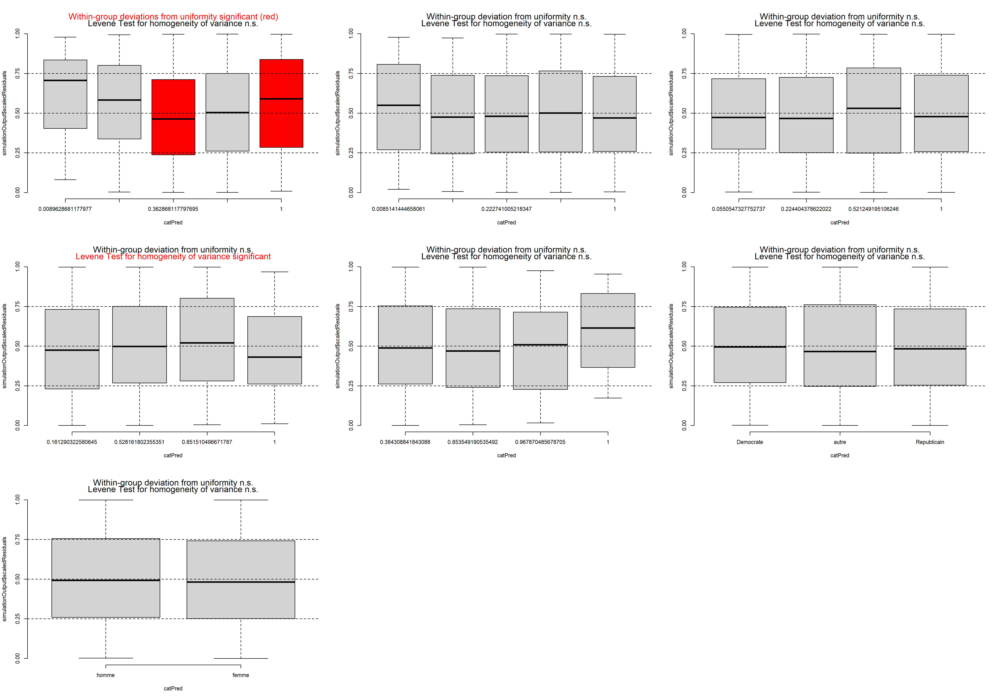
Nous réajustons donc le modèle et recalculons nos résidus ajustés (masqué ici pour alléger le document). La figure 8.21 nous confirme que le problème a été corrigé.
# Convertir les variables ordinales et variables binaires
data_quest$PercepOGMDes <- ifelse(data_quest$PercepOGM %in% c(1,2), 1,0)
data_quest$PercepRechClimDes <- ifelse(data_quest$PercepRechClim %in% c(1,2), 1,0)
# Réajuster le modèle
modele3 <- vglm(Y ~ PercepOGMDes + PercepRechClimDes +
ConnaisOGM + ConnaisRechClim +
CRT + Parti + Sexe,
data = data_quest,
family = multinomial(refLevel = "A"), model = T)Profitons du fait que nous utilisons le package VGAM pour vérifier l’absence d’effet de Hauck-Donner qui indiquerait que des variables indépendantes provoquent des séparations parfaites.
test <- hdeff(modele3)
test[test == TRUE](Intercept):2 (Intercept):3
TRUE TRUE La fonction nous informe que les constantes permettant de comparer le groupe C au groupe A, et le groupe D au groupe A provoquent des séparations parfaites. Cela s’explique notamment par le faible nombre d’observations tombant dans ces catégories. Considérant que comparativement à la catégorie A, être dans les catégories B, C, ou D signifie remettre en cause au moins un consensus scientifique, il peut être raisonnable de fixer la constante pour qu’elle soit la même pour les trois comparaisons. Ainsi, les chances de passer de A à un autre groupe ne dépenderaient pas du groupe en question, mais uniquement des variables indépendantes. Pour cela, nous pouvons forcer le modèle à n’ajuster qu’une seule constante avec la syntaxe suivante :
modele4 <- vglm(Y ~ PercepOGMDes + PercepRechClimDes +
ConnaisOGM + ConnaisRechClim +
CRT + Parti + Sexe,
data = data_quest,
family = multinomial(refLevel = "A",
parallel = TRUE ~1), model = T)
test <- hdeff(modele4)
print(table(test))test
FALSE
25 # Calcul du khi2 de Pearson
pred <- predict(modele4, type= "response")
cat_predict <- colnames(pred)[max.col(pred)]
freq_real <- table(data_quest$Y)
freq_pred <- table(cat_predict)
khi2 <- sum(residuals(modele4, type = "pearson")^2)
N <- nrow(data_quest)
p <- modele4@rank
r <- length(freq_real)
ratio <- khi2 / ((N)*(r-1)-p)
print(ratio)[1] 1.010319Nous n’avons donc plus de séparation complète ni de sur ou sous-dispersion et les résidus simulés de la quatrième version du modèle sont toujours acceptables (figure 8.22).
# Extraire les prédictions du modèle
categories <- c("B" , "C" , "D")
predicted <- predict(modele4, type = "link")
nsim <- 1000
ilink <- function(x){exp(x)/(1+exp(x))}
# Boucler sur chacune des catégories en dehors de la référence
data_sims <- lapply(1:ncol(predicted), function(i){
categorie <- categories[[i]]
# Extraire les observation de la catégorie i et de la référence
test <- data_quest$Y %in% c("A", categorie)
# Calculer les probabilité d'appartenance à i
values <- predicted[test,i]
probs <- ilink(values)
# Extraire les valeurs réelles et les convertir en 0 / 1
real <- data_quest[test,]$Y
real <- ifelse(real=="A",0,1)
# Enregistrer ces différents éléments
all_probs <- cbind(1-probs, probs)
sub_data <- subset(data_quest, test)
return(list("real" = real, "probs" = all_probs, "data" = sub_data))
})
# Extraire les probabilités prédites
all_probs <- do.call(rbind, lapply(data_sims, function(i){i$probs}))
# Extraire les vrais catégories
all_real <- do.call(c, lapply(data_sims, function(i){i$real}))
# Effectuer les simulations
simulations <- lapply(1:nrow(all_probs), function(i){
probs <- all_probs[i,]
sims <- sample(c(0,1), size = nsim, replace = TRUE, prob = probs)
return(sims)
})
matsim <- do.call(rbind, simulations)
# Calculer les résidus simulés
sim_res <- createDHARMa(simulatedResponse = matsim,
observedResponse = all_real,
fittedPredictedResponse = all_probs[,2],
integerResponse = TRUE)
plot(sim_res)Vérification l’ajustement du modèle
Puisque les conditions d’application du modèle sont respectées, nous pouvons à présent vérifier sa qualité d’ajustement.
modelenull <- vglm(Y ~ 1 ,
data = data_quest,
family = multinomial(refLevel = "A",
parallel = TRUE ~ 1 + CRT)
, model = T)
rsqs(loglike.full = logLik(modele4),
loglike.null = logLik(modelenull),
full.deviance = deviance(modele4),
null.deviance = deviance(modelenull),
nb.params = modele4@rank,
n = nrow(data_quest)
)$`deviance expliquee`
[1] 0.1750071
$`McFadden ajuste`
[1] 0.1530715
$`Cox and Snell`
[1] 0.3397248
$Nagelkerke
[1] 0.3746843Le modèle parvient à expliquer 17,5 % de la déviance totale. Il obtient un R2 ajusté de McFadden de 0,15, et des R2 de Cox et Snell et de Nagelkerke de respectivement 0,34 et 0,37. Passons à la construction de la matrice de confusion pour analyser la capacité de prédiction du modèle.
preds <- predict(modele4, type = "response")
pred_cats <- colnames(preds)[max.col(preds)]
real <- data_quest$Y
matrices <- nice_confusion_matrix(real, pred_cats)
# Afficher la matrice de confusion
print(matrices$confusion_matrix) rowsnames A B C D rs
colsnames "" "A (reel)" "B (reel)" "C (reel)" "D (reel)" "Total"
A "A (predit)" "482" "168" "75" "29" "754"
B "B (predit)" "31" "88" "9" "20" "148"
C "C (predit)" "10" "6" "18" "6" "40"
D "D (predit)" "3" "4" "3" "9" "19"
"Total" "526" "266" "105" "64" "961"
"%" "54.7" "27.7" "10.9" "6.7" NA
rp
colsnames "%"
A "78.5"
B "15.4"
C "4.2"
D "2"
NA
NA # Afficher les indicateurs de qualité de prédiction
print(matrices$indicators) rnames precision rappel F1
A "A" "0.64" "0.92" "0.75"
B "B" "0.59" "0.33" "0.43"
C "C" "0.45" "0.17" "0.25"
D "D" "0.47" "0.14" "0.22"
macro_scores "macro" "0.6" "0.62" "0.57"
"Kappa" "0.27" NA NA
"Valeur de p (precision > NIR)" "0" NA NA La précision globale (macro) du modèle est de 60 % et dépasse significativement le seuil de non-information. L’indicateur de Kappa indique un accord modéré entre la prédiction et les valeurs réelles. Les catégories C et D sont les catégories avec la plus faible précision, indiquant ainsi que le modèle a tendance à manquer les prédictions pour les individus en désaccord avec le consensus scientifique sur le réchauffement climatique. Les indices de rappel sont également très faibles pour les catégories B, C et D, indiquant que très peu d’observations appartenant originalement à ces groupes ont bien été classées dans ces groupes. La capacité de prédiction du modèle est donc relativement faible.
Interprétation des résultats
Puisque nous disposons de quatre catégories dans notre variable Y, nous obtenons au final trois tableaux de coefficients. Il est possible de visualiser l’ensemble des coefficients du modèle avec la fonction summary, nous proposons les tableaux 8.17, 8.18 et 8.19 pour présenter l’ensemble des résultats.
| Variable | Coefficient | RC | val.p | RC 2,5 % | RC 97,5 % | sign. |
|---|---|---|---|---|---|---|
| PercepOGMDes | 1,940 | 6,989 | 0,000 | 4,221 | 11,588 | *** |
| PercepRechClimDes | 0,430 | 1,532 | 0,305 | 0,677 | 3,456 | |
| ConnaisOGM | -0,330 | 0,718 | 0,000 | 0,607 | 0,852 | *** |
| ConnaisRechClim | 0,180 | 1,197 | 0,084 | 0,980 | 1,462 | . |
| CRT | 0,350 | 1,417 | 0,016 | 1,073 | 1,878 | * |
| Parti | ||||||
| ref : Democrate | – | – | – | – | – | – |
| autre | 0,660 | 1,934 | 0,001 | 1,310 | 2,858 | *** |
| Republicain | 0,650 | 1,910 | 0,003 | 1,259 | 2,915 | ** |
| Sexe | ||||||
| ref : homme | – | – | – | – | – | – |
| femme | 1,280 | 3,581 | 0,000 | 2,535 | 5,053 | *** |
Le tableau 8.17 compare donc le groupe A (en accord avec la recherche scientifique sur les deux sujets) et le groupe B (en désaccord sur la question des OGM). Les résultats indiquent que le fait de se percevoir en désaccord avec le consensus scientifique sur la question des OGM multiplie par sept les chances d’appartenir au groupe B comparativement au groupe A. Cependant, pour chaque bonne réponse supplémentaire sur les questions testant les connaissances sur les OGM, les chances d’appartenir au groupe B comparativement au groupe A diminuent de 28 %. Ainsi, un individu ayant répondu correctement aux trois questions verrait ses chances réduites de 63 % d’appartenir au groupe B (\(exp(-\text{0,33}\times\text{3})\)). Il est intéressant de noter que les variables concernant le réchauffement climatique n’ont pas d’effet significatif ici. La variable CRT indique qu’à chaque bonne réponse supplémentaire au test de cognition, les chances d’appartenir au groupe B augmentent de 42 %. Un individu qui aurait répondu aux trois questions du test aurait donc 2,9 fois plus de chances d’appartenir au groupe B qu’au groupe A. Concernant le parti politique, comparativement à une personne se déclarant plus proche du parti démocrate, les personnes proches du parti républicain ou d’un autre parti ont près de deux fois plus de chances d’appartenir au groupe B. Enfin, une femme, comparativement à un homme, a 3,6 fois plus de chance d’appartenir au groupe B.
| variable | Coefficient | RC | val.p | RC 2,5 % | RC 97,5 % | sign. |
|---|---|---|---|---|---|---|
| PercepOGMDes | -0,180 | 0,834 | 0,705 | 0,326 | 2,138 | |
| PercepRechClimDes | 2,060 | 7,821 | 0,000 | 3,819 | 16,119 | *** |
| ConnaisOGM | -0,110 | 0,896 | 0,287 | 0,733 | 1,094 | |
| ConnaisRechClim | 0,280 | 1,323 | 0,024 | 1,041 | 1,682 | * |
| CRT | 0,240 | 1,275 | 0,149 | 0,914 | 1,768 | |
| Parti | ||||||
| ref : Democrate | – | – | – | – | – | – |
| autre | -0,190 | 0,828 | 0,496 | 0,482 | 1,433 | |
| Republicain | 0,920 | 2,512 | 0,000 | 1,584 | 4,015 | *** |
| Sexe | ||||||
| ref : homme | – | – | – | – | – | – |
| femme:1 | -0,450 | 0,640 | 0,040 | 0,419 | 0,980 | * |
Le tableau 8.18 compare les groupes A et C (en désaccord sur le réchauffement climatique). Il est intéressant de noter ici que se percevoir en désaccord avec la recherche scientifique est associé avec une forte augmentation des chances d’appartenir au groupe C. Cependant, un plus grand nombre de bonnes réponses aux questions sur le réchauffement climatique est également associé avec une augmentation des chances (30 % à chaque bonne réponse supplémentaire) d’appartenir au groupe C. Le CRT n’a cette fois-ci pas d’effet. Se déclarer proche du parti républicain, comparativement au parti démocrate, multiplie les chances par 2,5 d’appartenir au groupe C. Comparativement au tableau précédent, le fait d’être une femme diminue les chances de 36 % d’appartenir au groupe C.
| variable | Coefficient | RC | val.p | RC 2,5 % | RC 97,5 % | sign. |
|---|---|---|---|---|---|---|
| PercepOGMDes | 1,500 | 4,488 | 0,000 | 2,270 | 8,935 | *** |
| PercepRechClimDes | 2,440 | 11,501 | 0,000 | 5,312 | 25,028 | *** |
| ConnaisOGM | -0,480 | 0,621 | 0,000 | 0,492 | 0,787 | *** |
| ConnaisRechClim | 0,130 | 1,140 | 0,399 | 0,844 | 1,553 | |
| CRT | 0,340 | 1,409 | 0,119 | 0,914 | 2,160 | |
| Parti | ||||||
| ref : Democrate | – | – | – | – | – | – |
| autre | 0,190 | 1,211 | 0,531 | 0,664 | 2,203 | |
| Republicain | 0,630 | 1,872 | 0,038 | 1,041 | 3,387 | * |
| Sexe | ||||||
| ref : homme | – | – | – | – | – | – |
| femme:1 | -0,110 | 0,896 | 0,664 | 0,543 | 1,477 |
Le dernier tableau (8.19) compare le groupe A au groupe D (en désaccord sur les deux sujets). Les variables les plus importantes sont une fois encore le fait de se sentir en désaccord avec la recherche scientifique et le degré de connaissance sur les OGM. La variable concernant le parti politique est significative au seuil 0,05 et exprime toujours une tendance accrue pour les individus du parti républicain à appartenir au groupe D.
Nos propres conclusions corroborent celles de l’article original. Une des conclusions intéressantes est que le rejet du consensus scientifique ne semble pas nécessairement être associé à un déficit d’information ni à une plus faible capacité analytique, mais relèverait davantage d’une polarisation politique. Notez que cette littérature sur les croyances et la confiance dans la recherche est complexe, si le sujet vous intéresse, la discussion de l’article de McFadden (2016) est un bon point de départ.
8.2.5 Conclusion sur les modèles pour des variables qualitatives
Nous avons vu dans cette section, les trois principales formes de modèles GLM pour modéliser une variable binaire (modèle binomial), une variable ordinale (modèle de cotes proportionnel) et une variable multinomiale (modèle multinomial). Pour ces trois modèles, nous avons vu que la distribution utilisée est toujours la distribution binomiale et la fonction de lien logistique. Les coefficients obtenus s’interprètent comme des rapports de cotes, une fois qu’ils sont transformés avec la fonction exponentielle.
8.3 Modèles GLM pour des variables de comptage
Dans cette section, nous présentons les principaux modèles utilisés pour modéliser des variables de comptage. Il peut s’agir de variables comme le nombre d’accidents à une intersection, le nombre de cafés par quartier, le nombre de cas d’une maladie donnée par entité géographique, etc.
8.3.1 Modèle de Poisson
Le modèle GLM de base pour modéliser une variable de comptage est le modèle de Poisson. Pour rappel, la distribution de Poisson a un seul paramètre: \(\lambda\). Il représente le nombre moyen d’évènements observés sur l’intervalle de temps d’une observation, ainsi que la dispersion de la distribution. En conséquence, \(\lambda\) doit être un nombre strictement positif; autrement dit, nous ne pouvons pas observer un nombre négatif d’évènements. Il est donc nécessaire d’utiliser une fonction de lien pour contraindre l’équation de régression sur l’intervalle \([0 ,+\infty]\). La fonction la plus utilisée est le logarithme naturel (log) dont la réciproque est la fonction exponentielle (exp).
| Type de variable dépendante | Variable de comptage |
| Distribution utilisée | Poisson |
| Formulation | \(Y \sim Poisson(\lambda)\) \(g(\lambda) = \beta_0 + \beta X\) \(g(x) =log(x)\) |
| Fonction de lien | log |
| Paramètre modélisé | \(\lambda\) |
| Paramètres à estimer | \(\beta_0\), \(\beta\) |
| Conditions d’application | Absence d’excès de zéros, absence de sur-dispersion ou de sous-dispersion |
8.3.1.1 Interprétation des paramètres
Les coefficients du modèle expriment l’effet du changement d’une unité des variables X sur \(\lambda\) (le nombre de cas) dans l’échelle logarithmique (log-scale). Pour rappel, l’échelle logarithmique est multiplicative : si nous convertissons les coefficients dans leur échelle originale avec la fonction exponentielle, leur effet n’est plus additif, mais multiplicatif. Prenons un exemple concret, admettons que nous avons ajusté un modèle de Poisson à une variable de comptage Y avec deux variables \(X_1\) et \(X_2\) et que nous avons obtenus les coefficients suivants :
\(\beta_0 = 1,8 \text{; } \beta_1 = 0,5 \text{; } \beta_2 = -1,5\)
L’interprétation basique (sur l’échelle logarithmique) est la suivante : une augmentation d’une unité de la variable \(X_1\) est associée avec une augmentation de 0,5 du logarithme du nombre de cas attendus. Une augmentation d’une unité de la variable \(X_2\) est associée avec une réduction de 1,5 unité du logarithme du nombre de cas attendus. Avec la conversion avec la fonction exponentielle, nous obtenons alors :
\(exp\mbox{(0,5) = 1,649}\), soit une multiplication par 1,649 du nombre de cas attendu (aussi appelé taux d’incident) à chaque augmentation d’une unité de \(X_1\);
\(exp\mbox{(-1,5) = 0,223}\), soit une division par 4,54 (1/0,223) du nombre de cas attendu (aussi appelé taux d’incident) à chaque augmentation d’une unité de \(X_2\).
Utilisons maintenant notre équation pour effectuer une prédiction si \(X_1 = 1\) et \(X_2 = 1\).
\(\lambda = exp(\mbox{1,8} + (\mbox{0,5}\times 1) + (\mbox{-1,5}\times1)) = \mbox{2,225}\)
Si nous augmentons \(X_1\) d’une unité, nous obtenons alors :
\(\lambda = exp(1,8 + (\mbox{0,5}\times 2) + (\mbox{-1,5}\times1)) = \mbox{3,670}\)
En ayant augmenté d’une unité \(X_1\), nous avons multiplié notre résultat par 1,649 (\(\mbox{2,225} \times \mbox{1,649 = 3,670}\)).
Notez que ces effets se multiplient entre eux. Si nous augmentons à la fois \(X_1\) et \(X_2\) d’une unité chacune, nous obtenons : \(\lambda = exp(1,8 + (\mbox{0,5} \times 2) + (\mbox{-1,5} \times 2)) = \mbox{0,818}\), ce qui correspond bien à \(\mbox{2,225} \times \mbox{1,649} \text{ (effet de }X_1\text{)} \times \mbox{0,223} \text{ (effet de }X_2\text{)} = \mbox{0,818}\).
Il existe des fonctions dans R qui calculent ces prédictions à partir des équations des modèles. Il est cependant essentiel de bien saisir ce comportement multiplicatif induit par la fonction de lien log.
8.3.1.2 Conditions d’application
Puisque la distribution de Poisson n’a qu’un seul paramètre, le modèle GLM de Poisson est exposé au même problème potentiel de sur-dispersion que les modèles binomiaux de la section précédente. Référez-vous à la section 8.2.1.2 pour davantage de détails sur le problème posé par la sur-dispersion. Pour détecter une potentielle sur-dispersion dans un modèle de Poisson, il est possible, dans un premier temps, de calculer le ratio entre la déviance du modèle et son nombre de degrés de liberté (SAS Institute Inc 2020b). Ce ratio doit être proche de 1, s’il est plus grand, le modèle souffre de sur-dispersion.
\[ \hat{\phi} = \frac{D(modele)}{N-p} \tag{8.19}\]
avec \(N\) et \(p\) étant respectivement les nombres d’observations et de paramètres. Il est également possible de tester formellement si la sur-dispersion est significative avec un test de dispersion.
La question de l’excès de zéros a été abordée dans la section 2.4.3.7 du chapitre 2. Il s’agit d’une situation où un plus grand nombre de zéros sont présents dans les données que ce que suppose la distribution de Poisson. Dans ce cas, il convient d’utiliser la distribution de Poisson avec excès de zéros.
8.3.1.3 Exemple appliqué dans R
Pour cet exemple, nous reproduisons l’analyse effectuée dans l’article de Cloutier et al. (2014). L’enjeu de cette étude était de modéliser le nombre de piétons blessés autour de plus de 500 carrefours dans les quartiers centraux de Montréal. Pour cela, trois types de variables étaient utilisées : des variables décrivant l’intersection, des variables décrivant les activités humaines dans un rayon d’un kilomètre autour de l’intersection et des variables représentant le trafic routier autour de l’intersection. Un effet direct de ce type d’étude est bien évidemment l’établissement de meilleures pratiques d’aménagement réduisant les risques encourus par les piétons lors de leurs déplacements en ville. Le tableau 8.21 présente l’ensemble des variables utilisées dans l’analyse.
| Nom de la variable | Signification | Type de variable | Mesure |
|---|---|---|---|
| Feux_auto | Présence de feux de circulation | Variable binaire | 0 = absence; 1 = présence |
| Feux_piet | Présence de feux de traversée pour les piétons | Variable binaire | 0 = absence; 1 = présence |
| Pass_piet | Présence d’un passage piéton | Variable binaire | 0 = absence; 1 = présence |
| Terreplein | Présence d’un terre-plein central | Variable binaire | 0 = absence; 1 = présence |
| Apaisement | Présence de mesure d’apaisement de la circulation | Variable binaire | 0 = absence; 1 = présence |
| LogEmploi | Logarithme du nombre d’emplois dans un rayon d’un kilomètre | Variable continue | Logarithme du nombre d’emplois. Utilisation du logarithme, car la variable est fortement asymétrique |
| Densite_pop | Densité de population dans un rayon d’un kilomètre | Variable continue | Habitants par hectare |
| Entropie | Diversité des occupations du sol dans un rayon d’un kilomètre (indice d’entropie) | Variable continue | Mesure de 0 à 1; 0 = spécialisation parfaite; 1 = diversité parfaite |
| DensiteInter | Densité d’intersections dans un rayon d’un kilomètre (connexité) | Variable continue | Nombre d’intersection par km2 |
| Artere | Présence d’une artère à l’intersection | Variable binaire | 0 = absence; 1 = présence |
| Long_arterePS | Longueur d’artère dans un rayon d’un kilomètre | Variable continue | Exprimée en mètres |
| NB_voies5 | Présence d’une cinq voies à l’intersection | Variable binaire | 0 = absence; 1 = présence |
La distribution originale de la variable est décrite à la figure 8.23. Les barres grises représentent la distribution du nombre d’accidents et les barres rouges une distribution de Poisson ajustée sans variable indépendante (modèle nul). Ce premier graphique peut laisser penser qu’un modèle de Poisson n’est pas nécessairement le plus adapté considérant le grand nombre d’intersections pour lesquelles nous n’avons aucun accident. Cependant, rappelons que la variable Y n’a pas besoin de suivre une distribution de Poisson. Dans un modèle GLM, l’hypothèse que nous formulons est que la variable dépendante (Y) conditionnée par les variables indépendantes (X) suit une certaine distribution (ici Poisson).
# Chargement des données
data_accidents <- read.csv("data/glm/accident_pietons.csv", sep = ";")
# Ajustement d'une distribution de Poisson sans variable indépendante
library(fitdistrplus)
model_poisson <- fitdist(data_accidents$Nbr_acci, distr = "pois")
# Création d'un graphique pour comparer les deux distributions
dfpoisson <- data.frame(x=c(0:19),
y = dpois(0:19, model_poisson$estimate)
)
counts <- data.frame(table(data_accidents$Nbr_acci))
names(counts) <- c("nb_accident",'frequence')
counts$nb_accident <- as.numeric(as.character(counts$nb_accident))
counts$prop <- counts$frequence / sum(counts$frequence)
ggplot() +
geom_bar(aes(x = nb_accident, weight = prop, fill = "real"), width = 0.6, data = counts)+
geom_bar(aes(x = x, weight = y, fill = "adj"), width = 0.15, data = dfpoisson)+
scale_x_continuous(limits = c(-0.5,7), breaks = c(0:7))+
scale_fill_manual(name = "",
breaks = c("real" , "adj"),
labels = c("distribution originale", "distribution de Poisson"),
values = c("real" = rgb(0.4,0.4,0.4), "adj" = "red"))+
labs(subtitle = "",
x = "nombre d'accidents",
y = "")
Vérification des conditions d’application
Comme précédemment, notre première étape est de vérifier l’absence de multicolinéarité excessive avec la fonction vif du package car.
vif(glm(Nbr_acci ~ Feux_auto + Feux_piet + Pass_piet + Terreplein + Apaisement +
LogEmploi + Densite_pop + Entropie + DensiteInter +
Long_arterePS + Artere + NB_voies5,
family = poisson(link="log"),
data = data_accidents)) Feux_auto Feux_piet Pass_piet Terreplein Apaisement
2.861708 1.518668 2.321213 1.221683 1.059722
LogEmploi Densite_pop Entropie DensiteInter Long_arterePS
4.763692 1.153096 1.770904 2.040457 4.467841
Artere NB_voies5
1.887728 1.520514 Toutes les valeurs de VIF sont inférieures à 5. Notons tout de même que le logarithme de l’emploi et la longueur d’artère dans un rayon d’un kilomètre ont des valeurs de VIF proches de 5. La seconde étape du diagnostic consiste à calculer et à visualiser les distances de Cook.
# Ajustement d'une première version du modèle
modele <- glm(Nbr_acci ~ Feux_auto + Feux_piet + Pass_piet + Terreplein + Apaisement +
LogEmploi + Densite_pop + Entropie + DensiteInter +
Long_arterePS + Artere + NB_voies5,
family = poisson(link="log"),
data = data_accidents)
# Calcul des distances de Cook
cooksd <- cooks.distance(modele)
df <- data.frame(
cook = cooksd,
oid = 1:length(cooksd)
)
ggplot(data = df)+
geom_point(aes(x = oid, y = cook), size = 0.5, alpha = 0.5)+
labs(x = "",
y = "Distance de Cook")La figure 8.24 signale la présence de trois observations avec des valeurs extrêmement fortes de distance de Cook. Nous les isolons dans un premier temps pour les analyser.
Nbr_acci Feux_auto Feux_piet Pass_piet Terreplein Apaisement EmpTotBuffer
1 19 1 1 1 1 0 7208.538
26 7 0 0 1 0 0 1342.625
428 0 1 1 1 0 1 13122.560
Densite_pop Entropie DensiteInter Long_arterePS Artere NB_voies5 log_acci
1 5980.923 0.8073926 42.41597 6955.00 1 1 2.995732
26 2751.012 0.0000000 73.35344 2849.66 0 0 2.079442
428 14148.827 0.6643891 109.25066 4634.20 0 0 0.000000
catego_acci catego_acci2 Arret VAG sum_app LogEmploi AccOrdinal PopHa
1 1 1 0 1 4 8.883021 2 5.980923
26 1 1 1 1 3 7.202382 2 2.751012
428 0 0 0 0 3 9.482088 0 14.148827Les deux premiers cas sont des intersections avec de nombreux accidents (respectivement 19 et 7) qui risquent de perturber les estimations du modèle. Le troisième cas ne comprend en revanche aucun accident. Puisqu’il ne s’agit que de trois observations et que leurs distances de Cook sont très nettement supérieures aux autres, nous les retirons du modèle.
data2 <- subset(data_accidents, cooksd<0.1)
# Ajustement d'une première version du modèle
modele <- glm(Nbr_acci ~ Feux_auto + Feux_piet + Pass_piet + Terreplein + Apaisement +
LogEmploi + Densite_pop + Entropie + DensiteInter +
Long_arterePS + Artere + NB_voies5,
family = poisson(link="log"),
data = data2)
# Calcul des distances de Cook
cooksd <- cooks.distance(modele)
df <- data.frame(
cook = cooksd,
oid = 1:length(cooksd)
)
ggplot(data = df)+
geom_point(aes(x = oid, y = cook), size = 0.5, alpha = 0.5)+
labs(x = "",
y = "distance de Cook")La figure 8.25 montre que nous n’avons plus d’observations fortement influentes dans le modèle après avoir retiré les trois observations identifiées précédemment. Nous devons à présent vérifier l’absence de sur-dispersion.
# Calcul du rapport entre déviance et nombre de degrés de liberté du modèle
deviance(modele)/(nrow(data2) - modele$rank)[1] 1.674691Le rapport entre la déviance et le nombre de degrés de liberté du modèle est nettement supérieur à 1, indiquant une sur-dispersion excessive. Nous pouvons confirmer ce résultat avec la fonction dispersiontest du package AER.
library(AER)
# Test de sur-dispersion
dispersiontest(modele)
Overdispersion test
data: modele
z = 5.2737, p-value = 6.686e-08
alternative hypothesis: true dispersion is greater than 1
sample estimates:
dispersion
1.891565 Contrairement à la forme classique d’un modèle de Poisson pour laquelle la dispersion attendue est de 1, le test nous indique qu’une dispersion de 1,89 serait mieux ajustée aux données.
Il est également possible d’illuster cet écart à l’aide d’un graphique représentant les valeurs réelles, les valeurs prédites, ainsi que la variance (sous forme de barres d’erreurs) attendue par le modèle (figure 8.26). Nous constatons ainsi que les valeurs réelles (en rouge) ont largement tendance à dépasser la variance attendue par le modèle, surtout pour les valeurs les plus faibles de la distribution.
# Extraction des prédictions du modèle
lambdas <- predict(modele, type = "response")
# Création d'un DataFrame pour contenir la prédiction et les vraies valeurs
df1 <- data.frame(
lambdas = lambdas,
reals = data2$Nbr_acci
)
# Calcul de l'intervalle de confiance à 95 % selon la distribution de Poisson
# et stockage dans un second DataFrame
seqa <- seq(0, round(max(lambdas)),1)
df2 <- data.frame(
lambdas = seqa,
lower = qpois(p = 0.025, lambda = seqa),
upper = qpois(p = 0.975, lambda = seqa)
)
# Affichage des valeurs réelles et prédites (en rouge)
# et de leur variance selon le modèle (en noir)
ggplot() +
geom_errorbar(data = df2,
mapping = aes(x = lambdas, ymin = lower, ymax = upper),
width = 0.2, color = rgb(0.4,0.4,0.4)) +
geom_point(data = df1,
mapping = aes(x = lambdas, y = reals),
color ="red", size = 0.5) +
labs(x = "valeurs prédites",
y = "valeurs réelles")Pour tenir compte de cette particularité des données, nous modifions légèrement le modèle pour utiliser une distribution de quasi-Poisson, intégrant spécifiquement un paramètre de dispersion. Cet ajustement ne modifie pas l’estimation des coefficients du modèle, mais modifie le calcul des erreurs standards et par extension les valeurs de p pour les rendre moins sensibles au problème de sur-dispersion. Une autre approche aurait été de calculer une version robuste des erreurs standards avec le package sandwich comme nous l’avons fait dans la section 8.2.1 sur le modèle binomial. Après réajustement du modèle, le nouveau paramètre de dispersion estimé est de 1,92.
Les quasi-distributions
Les distributions binomiale et de Poisson ne disposent chacune que d’un paramètre décrivant à la fois leur dispersion et leur espérance. Elles manquent donc de flexibilité et échouent parfois à représenter fidèlement des données avec une forte variance. Il existe donc d’autres distributions, respectivement les distributions quasi-binomiale et quasi-Poisson comprenant chacune un paramètre supplémentaire pour contrôler la dispersion. Bien que cette solution soit attrayante, il ne faut pas perdre de vue que la sur ou la sous dispersion peuvent être causées par l’absence de certaines variables explicatives, la sur-représentation de zéros, ou encore une séparation parfaite de la variable dépendante causée par une variable indépendante.
modele2 <- glm(Nbr_acci ~ Feux_auto + Feux_piet + Pass_piet + Terreplein + Apaisement +
LogEmploi + Densite_pop + Entropie + DensiteInter +
Long_arterePS + Artere + NB_voies5,
family = quasipoisson(link="log"),
data = data2)Nous pouvons à présent comparer la distribution originale des données et les simulations issues du modèle. Notez que contrairement à la distribution de Poisson simple, il n’existe pas dans R de fonction pour simuler des valeurs issues d’une distribution de quasi-Poisson. Il est cependant possible d’exploiter sa proximité théorique avec la distribution binomiale négative pour définir notre propre fonction de simulation. La figure 8.27 permet de comparer la distribution originale (en gris) et l’intervalle de confiance à 95 % des simulations (en rouge). Nous remarquons que le modèle semble capturer efficacement la forme générale de la distribution originale. À titre de comparaison, nous pouvons effectuer le même exercice avec la distribution de Poisson classique (le code n’est pas montré pour éviter les répétitions). La figure 8.28 montre qu’un simple modèle de Poisson est très éloigné de la distribution originale de Y.
# Définition d'une fonction pour simuler des données quasi-Poisson
rqpois <- function(n, lambda, disp) {
rnbinom(n = n, mu = lambda, size = lambda/(disp-1))
}
# Extraction des valeurs prédites par le modèle
preds <- predict(modele2, type = "response")
# Génération de 1000 simulations pour chaque prédiction
disp <- summary(modele2)$dispersion
nsim <- 1000
cols <- lapply(1:length(preds), function(i){
lambda <- preds[[i]]
sims <- round(rqpois(n = nsim, lambda = lambda, disp = disp))
return(sims)
})
mat_sims <- do.call(rbind, cols)
# Préparation des données pour le graphique (valeurs réelles)
counts <- data.frame(table(data2$Nbr_acci))
names(counts) <- c("nb_accident",'frequence')
counts$nb_accident <- as.numeric(as.character(counts$nb_accident))
counts$prop <- counts$frequence / sum(counts$frequence)
# Préparation des données pour le graphique (valeurs simulées)
df1 <- data.frame(count = 0:25)
count_sims <- lapply(1:nsim, function(i){
sim <- mat_sims[,i]
cnt <- data.frame(table(sim))
df2 <- merge(df1, cnt, by.x = "count", by.y = "sim", all.x = TRUE, all.y = FALSE)
df2$Freq <- ifelse(is.na(df2$Freq),0, df2$Freq)
return(df2$Freq)
})
count_sims <- do.call(cbind, count_sims)
df_sims <- data.frame(
val = 0:25,
med = apply(count_sims, MARGIN = 1, median),
lower = apply(count_sims, MARGIN = 1, quantile, probs = 0.025),
upper = apply(count_sims, MARGIN = 1, quantile, probs = 0.975)
)
ggplot() +
geom_bar(aes(x = nb_accident, weight = frequence), width = 0.6, data = counts)+
geom_errorbar(aes(x = val, ymin = lower, ymax = upper),
data = df_sims, color = "red", width = 0.6)+
geom_point(aes(x = val, y = med), color = "red", size = 1.3, data = df_sims)+
scale_x_continuous(limits = c(-0.5,7), breaks = c(0:7))+
xlim(-1,12)+
labs(subtitle = "",
x = "nombre d'accidents",
y = "nombre d'occurrences")La prochaine étape du diagnostic est l’analyse des résidus simulés. La figure 8.29 indique que les résidus du modèle suivent bien une distribution uniforme et qu’aucune valeur aberrante n’est observable.
# Génération de 1000 simulations pour chaque prédiction
disp <- 1.918757 # trouvable dans le summary(modele2)
nsim <- 1000
cols <- lapply(1:length(preds), function(i){
lambda <- preds[[i]]
sims <- rqpois(n = nsim, lambda = lambda, disp = disp)
return(sims)
})
mat_sims <- do.call(rbind, cols)
sim_res <- createDHARMa(simulatedResponse = mat_sims,
observedResponse = data2$Nbr_acci,
fittedPredictedResponse = modele2$fitted.values,
integerResponse = TRUE)
plot(sim_res)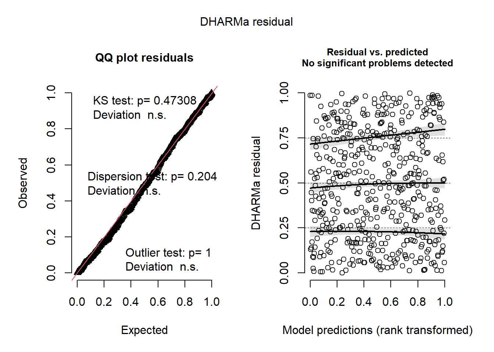
Pour affiner notre diagnostic, nous pouvons également comparer les résidus simulés et chaque variable indépendante. La figure 8.30 n’indique aucune relation problématique entre nos variables indépendantes et les résidus.
par(mfrow=c(3,4))
vars <- c("Feux_auto", "Feux_piet", "Pass_piet", "Terreplein", "Apaisement",
"LogEmploi", "Densite_pop", "Entropie", "DensiteInter",
"Long_arterePS", "Artere", "NB_voies5")
for(v in vars){
plotResiduals(sim_res, data2[[v]], xlab = v, main = "", ylab = "résidus")
}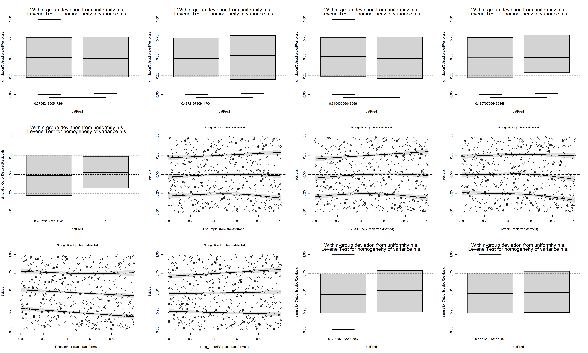
Maintenant que l’ensemble des diagnostics a été effectué, nous pouvons passer à la vérification de la qualité d’ajustement.
Vérification de la qualité d’ajustement
Pour le calcul des pseudo-R2, notez qu’il n’existe pas à proprement parler de loglikelihood pour les quasi-distributions. Pour contourner ce problème, il est possible d’utiliser le loglikelihood d’un simple modèle de Poisson (puisque les coefficients ne changent pas), mais il est important de garder à l’esprit que ces pseudo-R2 seront d’autant plus faibles que la sur-dispersion originale était forte.
modelnull <- glm(Nbr_acci ~ 1,
family = poisson(link="log"),
data = data2)
rsqs(loglike.full = logLik(modele),
loglike.null = logLik(modelnull),
full.deviance = deviance(modele),
null.deviance = deviance(modelnull),
nb.params = modele$rank,
n = nrow(data2))$`deviance expliquee`
[1] 0.4805998
$`McFadden ajuste`
'log Lik.' 0.3258375 (df=13)
$`Cox and Snell`
'log Lik.' 0.7789704 (df=13)
$Nagelkerke
'log Lik.' 0.787958 (df=13)Le modèle parvient ainsi à expliquer 48 % de la déviance totale. Il obtient un R2 ajusté de McFadden de 0,33 et un R2 de Cox et Snell de 0,78.
L’erreur quadratique moyenne du modèle est de 1,84, ce que signifie qu’en moyenne le modèle se trompe d’environ deux accidents pour chaque intersection. Cette valeur est relativement élevée si nous la comparons avec le nombre moyen d’accidents, soit 1,5. Cela s’explique certainement par le grand nombre de zéros dans la variable Y qui tendent à tirer les prédictions vers le bas.
Interprétation des résultats
L’ensemble des coefficients du modèle sont accessibles via la fonction summary. Puisque la fonction de lien du modèle est la fonction log, il est pertinent de convertir les coefficients avec la fonction exp afin de pouvoir les interpréter sur l’échelle originale (nombre d'accidents) plutôt que l’échelle logarithmique (log(nombre d'accidents)). N’oubliez pas que ces effets sont multiplicatifs une fois transformés avec la fonction exp. Nous pouvons également utiliser les erreurs standards pour calculer des intervalles de confiance à 95 % des exponentiels des coefficients. Le tableau 8.22 présente l’ensemble des informations pertinentes pour l’interprétation des résultats.
# Calcul des coefficients en exponentiel et des intervalles de confiance
tableau <- summary(modele2)$coefficients
coeffs <- tableau[,1]
err.std <- tableau[,2]
expcoeff <- exp(coeffs)
exp2.5 <- exp(coeffs - 1.96*err.std)
exp975 <- exp(coeffs - 1.96*err.std)
pvals <- tableau[,4]
tableauComplet <- cbind(coeffs, err.std, expcoeff, exp2.5, exp975, pvals)
# print(tableauComplet)| Variable | Coeff. | exp(Coeff.) | Val.p | IC 2,5 % exp(Coeff.) | IC 97,5 % exp(Coeff.) | Sign. |
|---|---|---|---|---|---|---|
| Constante | -3,680 | 0,030 | 0,000 | 0,010 | 0,090 | *** |
| Feux_auto | 1,100 | 3,000 | 0,000 | 1,970 | 4,660 | *** |
| Feux_piet | 0,330 | 1,390 | 0,009 | 1,090 | 1,790 | ** |
| Pass_piet | 0,340 | 1,400 | 0,149 | 0,880 | 2,200 | |
| Terreplein | -0,360 | 0,700 | 0,099 | 0,440 | 1,050 | . |
| Apaisement | 0,290 | 1,330 | 0,157 | 0,880 | 1,950 | |
| LogEmploi | 0,230 | 1,260 | 0,017 | 1,040 | 1,520 | * |
| Densite_pop | 0,000 | 1,000 | 0,000 | 1,000 | 1,000 | *** |
| Entropie | -0,420 | 0,660 | 0,271 | 0,320 | 1,390 | |
| DensiteInter | 0,000 | 1,000 | 0,410 | 1,000 | 1,010 | |
| Long_arterePS | 0,000 | 1,000 | 0,684 | 1,000 | 1,000 | |
| Artere | 0,030 | 1,030 | 0,842 | 0,780 | 1,360 | |
| NB_voies5 | 0,640 | 1,890 | 0,000 | 1,460 | 2,440 | *** |
Parmi les variables décrivant les aménagements de l’intersection, nous constatons que les présences d’un feu de circulation et d’un feu de traversée pour les piétons multiplient le nombre attendu d’accidents à une intersection par 3,0 et 1,39. Par contre, les présences d’un passage piéton, d’un terre-plein ou de mesures d’apaisement n’ont pas d’effets significatifs (valeurs de p > 0,05). Concernant les variables décrivant l’environnement à proximité des intersections, nous observons que la concentration d’emplois et la densité de population contribuent toutes les deux à augmenter le nombre d’accidents à une intersection, bien que leurs effets soient limités. Enfin, la présence d’une rue à cinq voies à l’intersection augmente le nombre d’accidents attendu à l’intersection de 89 %. Nous ne détaillons pas plus les résultats, car nous utilisons le même jeu de données dans les prochaines sections.
8.3.2 Modèle binomial négatif
Dans le cas où une variable de comptage est marquée par une sur ou sous-dispersion, la distribution de Poisson n’est pas en mesure de capturer efficacement sa variance. Pour contourner ce problème, il est possible d’utiliser la distribution binomiale négative plutôt que la distribution de Poisson (ou quasi-Poisson). Cette distribution peut être décrite comme une généralisation de la distribution de Poisson : elle inclut un second paramètre \(\theta\) contrôlant la dispersion. L’intérêt premier de ce changement de distribution est que l’interprétation des paramètres est la même pour les deux modèles, tout en contrôlant directement l’effet d’une potentielle sur ou sous-dispersion.
| Type de variable dépendante | Variable de comptage |
| Distribution utilisée | Négative binomiale |
| Formulation | \(Y \sim NB(\mu,\theta)\) \(g(\mu) = \beta_0 + \beta X\) \(g(x) =log(x)\) |
| Fonction de lien | log |
| Paramètre modélisé | \(\mu\) |
| Paramètres à estimer | \(\beta_0\), \(\beta\) et \(\theta\) |
| Conditions d’application | Absence d’excès de zéros, respect du lien variance-moyenne |
8.3.2.1 Conditions d’application
Les conditions d’application d’un modèle binomial négatif sont presque les mêmes que celles d’un modèle de Poisson. La seule différence est que la condition d’absence de sur ou sous-dispersion est remplacée par une condition de respect du lien espérance-variance. En effet, dans un modèle binomial négatif, le paramètre de dispersion \(\theta\) est combiné avec \(\mu\) (l’espérance) pour exprimer la dispersion de la distribution. Dans le package mgcv que nous utilisons dans l’exemple, le lien entre \(\mu\), \(\theta\) et la variance est le suivant :
\[ variance = \mu + \mu^{\frac{2}{\theta}} \tag{8.20}\]
Il s’agit donc d’un modèle hétéroscédastique : sa variance n’est pas fixe, mais varie en fonction de sa propre espérance. Si celle-ci augmente, la variance augmente (comme pour un modèle de Poisson), et l’intensité de cette augmentation est contrôlée par le paramètre \(\theta\). Si cette condition n’est pas respectée, l’analyse des résidus simulés révélera un problème de dispersion.
8.3.2.2 Exemple appliqué dans R
Dans l’exemple précédent avec le modèle de Poisson, nous avons observé une certaine sur-dispersion que nous avons contournée en utilisant un modèle de quasi-Poisson. Dans l’article original, les auteurs ont opté pour un modèle binomial négatif, ce que nous reproduisons ici. Les variables utilisées sont les mêmes que pour le modèle de Poisson. Nous utilisons le package mgcv et sa fonction gam pour ajuster le modèle.
Vérification des conditions d’application
Nous avons vu précédemment que nos variables indépendantes ne sont pas marquées par une multicolinéarité forte. Il n’est pas nécessaire de recalculer les valeurs de VIF puisque nous utilisons les mêmes données. La première étape du diagnostic est donc de calculer les distances de Cook.
library(mgcv)
# Chargement des données
data_accidents <- read.csv("data/glm/accident_pietons.csv", sep = ";")
# Ajustement d'une première version du modèle
modelnb <- gam(Nbr_acci ~ Feux_auto + Feux_piet + Pass_piet +
Terreplein + Apaisement +
LogEmploi + Densite_pop + Entropie + DensiteInter +
Long_arterePS + Artere + NB_voies5,
family = nb(link="log"),
data = data_accidents)
# Calcul et affichage des distances de Cook
cooksd <- cooks.distance(modelnb)
df <- data.frame(
cook = cooksd,
oid = 1:length(cooksd)
)
ggplot(data = df)+
geom_point(aes(x = oid, y = cook), size = 0.5, color = rgb(0.4,0.4,0.4)) +
labs(x = "", y = "distance de Cook")+
theme(axis.ticks.x = element_blank(),
axis.text.x = element_blank())Nous observons, dans la figure 8.31, que quatre observations se distinguent très nettement des autres.
Nbr_acci Feux_auto Feux_piet Pass_piet Terreplein Apaisement EmpTotBuffer
1 19 1 1 1 1 0 7208.538
5 12 1 0 1 0 0 8585.350
26 7 0 0 1 0 0 1342.625
34 6 0 0 1 0 0 12516.410
Densite_pop Entropie DensiteInter Long_arterePS Artere NB_voies5 log_acci
1 5980.923 0.8073926 42.41597 6955.00 1 1 2.995732
5 8655.430 0.7607852 89.11495 6412.27 0 0 2.564949
26 2751.012 0.0000000 73.35344 2849.66 0 0 2.079442
34 8950.942 0.4300549 74.91879 8443.01 1 0 1.945910
catego_acci catego_acci2 Arret VAG sum_app LogEmploi AccOrdinal PopHa
1 1 1 0 1 4 8.883021 2 5.980923
5 1 1 0 1 4 9.057813 2 8.655430
26 1 1 1 1 3 7.202382 2 2.751012
34 1 1 1 0 3 9.434796 2 8.950942Il s’agit à nouveau de quatre observations avec un grand nombre d’accidents. Nous décidons de les retirer du jeu de données pour ne pas fausser les résultats concernant l’ensemble des autres intersections. Dans une analyse plus détaillée, il serait judicieux de chercher à comprendre pourquoi ces quatre observations sont particulièrement accidentogènes.
data2 <- subset(data_accidents, cooksd < 0.03)
# Ajustement d'une première version du modèle
modelnb <- gam(Nbr_acci ~ Feux_auto + Feux_piet + Pass_piet +
Terreplein + Apaisement +
LogEmploi + Densite_pop + Entropie + DensiteInter +
Long_arterePS + Artere + NB_voies5,
family = nb(link="log"),
data = data2)
# Calcul et affichage des distances de Cook
cooksd <- cooks.distance(modelnb)
df <- data.frame(
cook = cooksd,
oid = 1:length(cooksd)
)
ggplot(data = df)+
geom_point(aes(x = oid, y = cook), size = 0.5, color = rgb(0.4,0.4,0.4)) +
labs(x = "", y = "distance de Cook")+
theme(axis.ticks.x = element_blank(),
axis.text.x = element_blank())Après avoir retiré ces quatre observations, les distances de Cook ne révèlent plus d’observations fortement influentes dans le modèle (figure 8.32). La prochaine étape du diagnostic est donc d’analyser les résidus simulés.
# Extraction de la valeur de theta
theta <- modelnb$family$getTheta(T)
nsim <- 1000
# Extraction des valeurs prédites par le modèle
mus <- predict(modelnb, type = "response")
# Calcul des simulations
cols <- lapply(1:length(mus), function(i){
mu <- mus[[i]]
sims <- rnbinom(n = nsim, mu = mu, size = theta)
return(sims)
})
mat_sims <- do.call(rbind, cols)
# Calcul des résidus simulés
sim_res <- createDHARMa(simulatedResponse = mat_sims,
observedResponse = data2$Nbr_acci,
fittedPredictedResponse = mus,
integerResponse = TRUE)
# Affichage du diagnostic
plot(sim_res)La figure 8.33 présentant le diagnostic des résidus simulés, montre que ces derniers suivent bien une distribution uniforme et aucun problème de dispersion ni de valeurs aberrantes. La figure 8.34 permet de comparer la distribution originale de la variable Y et les simulations issues du modèle (intervalles de confiance représentés en bleu). Nous constatons que le modèle parvient bien à reproduire la distribution originale, et ce, même pour les valeurs les plus extrèmes de la distribution.
# Extraction des valeurs prédites par le modèle
mus <- predict(modelnb, type = "response")
# Génération de 1000 simulations pour chaque prédiction
theta <- modelnb$family$getTheta(T)
nsim <- 1000
cols <- lapply(1:length(mus), function(i){
mu <- mus[[i]]
sims <- round(rnbinom(n = nsim, mu = mu, size = theta))
return(sims)
})
mat_sims <- do.call(rbind, cols)
# Préparation des données pour le graphique (valeurs réelles)
counts <- data.frame(table(data2$Nbr_acci))
names(counts) <- c("nb_accident",'frequence')
counts$nb_accident <- as.numeric(as.character(counts$nb_accident))
counts$prop <- counts$frequence / sum(counts$frequence)
# Préparation des données pour le graphique (valeurs simulées)
df1 <- data.frame(count = 0:25)
count_sims <- lapply(1:nsim, function(i){
sim <- mat_sims[,i]
cnt <- data.frame(table(sim))
df2 <- merge(df1, cnt, by.x = "count", by.y = "sim", all.x = TRUE, all.y = FALSE)
df2$Freq <- ifelse(is.na(df2$Freq),0, df2$Freq)
return(df2$Freq)
})
count_sims <- do.call(cbind, count_sims)
df_sims <- data.frame(
val = 0:25,
med = apply(count_sims, MARGIN = 1, median),
lower = apply(count_sims, MARGIN = 1, quantile, probs = 0.025),
upper = apply(count_sims, MARGIN = 1, quantile, probs = 0.975)
)
# Affichage du graphique
ggplot() +
geom_bar(aes(x = nb_accident, weight = frequence), width = 0.6, data = counts)+
geom_errorbar(aes(x = val, ymin = lower, ymax = upper),
data = df_sims, color = "blue", width = 0.6)+
geom_point(aes(x = val, y = med), color = "blue", size = 1.3, data = df_sims)+
scale_x_continuous(limits = c(-0.5,7), breaks = c(0:7))+
xlim(-1,12)+
labs(subtitle = "",
x = "nombre d'accidents",
y = "nombre d'occurrences")À titre de comparaison, nous pouvons à nouveau réaliser le graphique permettant de visualiser si la variance attendue par le modèle est proche de celle effectivement observée dans les données. Nous avons constaté avec ce graphique, lorsque nous ajustions un modèle de Poisson, que la variance des données était trop grande comparativement à celle attendue par le modèle (figure 8.26).
# Extraction des prédictions du modèle
mus <- predict(modelnb, type = "response")
# Création d'un DataFrame pour contenir la prédiction et les vraies valeurs
df1 <- data.frame(
mus = mus,
reals = data2$Nbr_acci
)
# Calcul de l'intervalle de confiance à 95 % selon la distribution de Poisson
# et stockage dans un second DataFrame
seqa <- seq(0, round(max(mus)),1)
df2 <- data.frame(
mus = seqa,
lower = qnbinom(p = 0.025, mu = seqa, size = theta),
upper = qnbinom(p = 0.975, mu = seqa, size = theta)
)
# Affichage des valeurs réelles et prédites (en rouge)
# et de leur variance selon le modèle (en noir)
ggplot() +
geom_errorbar(data = df2,
mapping = aes(x = mus, ymin = lower, ymax = upper),
width = 0.2, color = rgb(0.4,0.4,0.4)) +
geom_point(data = df1,
mapping = aes(x = mus, y = reals),
color ="red", size = 0.5) +
labs(x = "valeurs prédites",
y = "valeurs réelles")
Nous pouvons ainsi constater à la figure 8.35 que le modèle binomial négatif autorise une variance bien plus large que le modèle de Poisson et est ainsi mieux ajusté aux données.
Vérification de la qualité d’ajustement
# Calcul des pseudo R2
rsqs(loglike.full = logLik(modelnb),
loglike.null = logLik(modelnull),
full.deviance = deviance(modelnb),
null.deviance = modelnb$null.deviance,
nb.params = modelnb$rank,
n = nrow(data2))$`deviance expliquee`
[1] 0.458052
$`McFadden ajuste`
'log Lik.' 0.384353 (df=14)
$`Cox and Snell`
'log Lik.' 0.8304773 (df=14)
$Nagelkerke
'log Lik.' 0.8399731 (df=14)[1] 1.825278Le modèle parvient à expliquer 45 % de la déviance. Il obtient un R2 ajusté de McFadden de 0,14 et un R2 de Nagelkerke de 0,42. L’erreur moyenne quadratique de la prédiction est de 1,82, ce qui est identique au modèle de Poisson ajusté précédemment.
Interprétation des résultats
Il est possible d’accéder à l’ensemble des coefficients du modèle via la fonction summary. À nouveau, les coefficients doivent être convertis avec la fonction exponentielle (du fait de la fonction de lien log) et interprétés comme des effets multiplicatifs. Le tableau 8.24 présente les coefficients estimés par le modèle. Les résultats sont très similaires à ceux du modèle de quasi-Poisson original. Nous notons cependant que la variable représentant la présence d’un feu pour piéton n’est plus significative au seuil de 0,05.
| Variable | Coeff. | exp(Coeff.) | Val.p | IC 2,5 % exp(Coeff.) | IC 97,5 % exp(Coeff.) | Sign. |
|---|---|---|---|---|---|---|
| Constante | -3,880 | 0,020 | 0,000 | 0,010 | 0,080 | *** |
| Feux_auto | 1,130 | 3,100 | 0,000 | 2,030 | 4,710 | *** |
| Feux_piet | 0,350 | 1,420 | 0,016 | 1,060 | 1,900 | * |
| Pass_piet | 0,220 | 1,240 | 0,300 | 0,830 | 1,880 | |
| Terreplein | -0,340 | 0,710 | 0,155 | 0,440 | 1,140 | |
| Apaisement | 0,240 | 1,270 | 0,315 | 0,790 | 2,030 | |
| LogEmploi | 0,230 | 1,260 | 0,025 | 1,030 | 1,550 | * |
| Densite_pop | 0,000 | 1,000 | 0,000 | 1,000 | 1,000 | *** |
| Entropie | -0,170 | 0,840 | 0,669 | 0,380 | 1,860 | |
| DensiteInter | 0,000 | 1,000 | 0,925 | 0,990 | 1,010 | |
| Long_arterePS | 0,000 | 1,000 | 0,587 | 1,000 | 1,000 | |
| Artere | 0,110 | 1,110 | 0,497 | 0,820 | 1,510 | |
| NB_voies5 | 0,700 | 2,010 | 0,000 | 1,480 | 2,750 | *** |
8.3.3 Modèle de Poisson avec excès fixe de zéros
Dans le cas où la variable Y comprendrait significativement plus de zéros que ce que suppose une distribution de Poisson, il est possible d’utiliser la distribution de Poisson avec excès de zéros. Pour rappel, cette distribution ajoute un paramètre p contrôlant pour la proportion de zéros dans la distribution. Du point de vue conceptuel, cela revient à formuler l’hypothèse suivante : dans les données que nous avons observées, deux processus distincts sont à l’œuvre. Le premier est issu d’une distribution de Poisson et l’autre produit des zéros qui s’ajoutent aux données. Les zéros produits par la distribution de Poisson sont appelés les vrais zéros, alors que ceux produits par le second phénomène sont appelés les faux zéros.
| Type de variable dépendante | Variable de comptage |
| Distribution utilisée | Poisson avec excès de zéros |
| Formulation | \(Y \sim ZIP(\mu,\theta)\) \(g(\lambda) = \beta_0 + \beta X\) \(g(x) =log(x)\) |
| Fonction de lien | log |
| Paramètre modélisé | \(\lambda\) |
| Paramètres à estimer | \(\beta_0\), \(\beta\) et p |
| Conditions d’application | Absence de sur-dispersion |
Dans cette formulation, p est fixé. Nous n’avons donc aucune information sur ce qui produit les zéros supplémentaires, mais seulement leur proportion totale dans le jeu de données.
8.3.3.1 Interprétation des paramètres
L’interprétation des paramètres est identique à celle d’un modèle de Poisson. Le paramètre p représente la proportion de faux zéros dans la variable Y une fois que les variables indépendantes sont contrôlées.
8.3.3.2 Exemple appliqué dans R
La variable de comptage des accidents des piétons que nous avons utilisée dans les deux exemples précédents semble être une bonne candidate pour une distribution de Poisson avec excès de zéros. En effet, nous avons pu constater une sur-dispersion dans le modèle de Poisson original, ainsi qu’un nombre important d’intersections sans accident. Tentons donc d’améliorer notre modèle en ajustant un excès fixe de zéros. Nous utilisons la fonction gamlss du package gamlss.
library(gamlss)
modelzi <- gamlss(formula = Nbr_acci ~ Feux_auto + Feux_piet + Pass_piet +
Terreplein + Apaisement + LogEmploi + Densite_pop +
Entropie + DensiteInter + Long_arterePS + Artere + NB_voies5,
sigma.formula = ~1,
family = ZIP(mu.link = "log", sigma.link="logit"),
data = data_accidents)GAMLSS-RS iteration 1: Global Deviance = 1516.53
GAMLSS-RS iteration 2: Global Deviance = 1514.656
GAMLSS-RS iteration 3: Global Deviance = 1514.52
GAMLSS-RS iteration 4: Global Deviance = 1514.508
GAMLSS-RS iteration 5: Global Deviance = 1514.506
GAMLSS-RS iteration 6: Global Deviance = 1514.506 modelnull <- glm(formula = Nbr_acci ~ 1,
family = poisson(link="log"),
data = data_accidents)
# Constante pour p
coeff_p <- modelzi$sigma.coefficients
cat("Coefficient pour p =", round(coeff_p,4))Coefficient pour p = -1.4376[1] 0.08267513# Calcul de la probabilité de base p d'être un faux 0
# en appliquant l'inverse de la fonction logistique
exp(-coeff_p) / (1+exp(-coeff_p))(Intercept)
0.80809 Nous constatons immédiatement que le modèle avec excès fixe de zéros est peu ajusté aux données. Cette version du modèle ne parvient à capter que 8 % de la déviance, ce qui s’explique facilement, car nous n’avons donné aucune variable au modèle pour distinguer les vrais et les faux zéros. Pour cela, nous devons passer au prochain modèle : Poisson avec excès ajusté de zéros. Notons tout de même que d’après ce modèle, 81 % des observations seraient des faux zéros.
8.3.4 Modèle de Poisson avec excès ajusté de zéros
Nous avons vu dans le modèle précédent que l’excès de zéro était conceptualisé comme la combinaison de deux phénomènes, l’un issu d’une distribution de Poisson que nous souhaitons modéliser, et l’autre générant des zéros supplémentaires. Il est possible d’aller plus loin que de simplement contrôler la proportion de zéros supplémentaires en modélisant explicitement ce second processus en ajoutant une deuxième équation au modèle. Cette deuxième équation a pour enjeu de modéliser p (la proportion de 0) à l’aide de variables indépendantes, ces dernières pouvant se retrouver dans les deux parties du modèle. L’idée étant que, pour chaque observation, le modèle évalue sa probabilité d’être un faux zéro (partie binomiale), et le nombre attendu d’accidents.
| Type de variable dépendante | Variable de comptage |
| Distribution utilisée | Poisson avec excès de zéros |
| Formulation | \(Y \sim ZIP(\mu,\theta)\) \(g(\mu) = \beta_0 + \beta X\) \(s(p) = \alpha_0 + \alpha_X\) \(g(x) =log(x)\) \(s(x) = log(\frac{x}{1-x})\) |
| Fonction de lien | log et logistique |
| Paramètre modélisé | \(\mu\) et p |
| Paramètres à estimer | \(\beta_0\), \(\beta\), \(\alpha_0\) et \(\alpha\) |
| Conditions d’application | Absence de sur-dispersion |
8.3.4.1 Interprétation des paramètres
L’interprétation des paramètres \(\beta_0\) et \(\beta\) est identique à celle d’un modèle de Poisson. Les paramètres \(\alpha_0\) et \(\alpha\) sont identiques à ceux d’un modèle binomial. Plus spécifiquement, ces derniers paramètres modélisent la probabilité d’observer des valeurs supérieures à zéro.
8.3.4.2 Exemple appliqué
Nous avons vu, dans l’exemple précédent, que l’utilisation du modèle avec excès fixe de zéros pour les données d’accident des piétons aux intersections ne donnait pas de résultats satisfaisants. Nous tentons ici d’améliorer le modèle en ajoutant les variables indépendantes significatives du modèle Poisson dans la seconde équation de régression destinée à détecter les faux zéros.
Vérification des conditions d’application
Pour un modèle de Poisson avec excès de zéros, il n’est pas possible de calculer les distances de Cook. Nous devons donc directement passer à l’analyse des résidus simulés.
# Ajuster une première version du modèle
modelza <- gamlss(formula = Nbr_acci ~ Feux_auto + Feux_piet + Pass_piet +
Terreplein + Apaisement + LogEmploi + Densite_pop +
Entropie + DensiteInter + Long_arterePS + Artere + NB_voies5,
sigma.formula = ~1 + Feux_auto + Feux_piet + Densite_pop + NB_voies5,
family = ZIP(mu.link = "log", sigma.link="logit"),
data = data_accidents)GAMLSS-RS iteration 1: Global Deviance = 1505.155
GAMLSS-RS iteration 2: Global Deviance = 1488.658
GAMLSS-RS iteration 3: Global Deviance = 1483.304
GAMLSS-RS iteration 4: Global Deviance = 1482.085
GAMLSS-RS iteration 5: Global Deviance = 1481.868
GAMLSS-RS iteration 6: Global Deviance = 1481.832
GAMLSS-RS iteration 7: Global Deviance = 1481.827
GAMLSS-RS iteration 8: Global Deviance = 1481.825
GAMLSS-RS iteration 9: Global Deviance = 1481.825 # Extraire la prédiction des valeurs lambda
lambdas <- predict(modelza, type = "response", what = "mu")
# Extraire la prédiction des valeurs p
ps <- predict(modelza, type = "response", what = "sigma")
# Calculer la combinaison de ces deux éléments
preds <- lambdas * ps
# Effectuer les 1000 simulations
nsim <- 1000
cols <- lapply(1:length(lambdas), function(i){
lambda <- lambdas[[i]]
p <- ps[[i]]
sims <- rZIP(n = nsim, mu = lambda, sigma = p)
return(sims)
})
mat_sims <- do.call(rbind, cols)
# Calculer les résidus simulés
sim_res <- createDHARMa(simulatedResponse = mat_sims,
observedResponse = data_accidents$Nbr_acci,
fittedPredictedResponse = preds,
integerResponse = TRUE)plot(sim_res)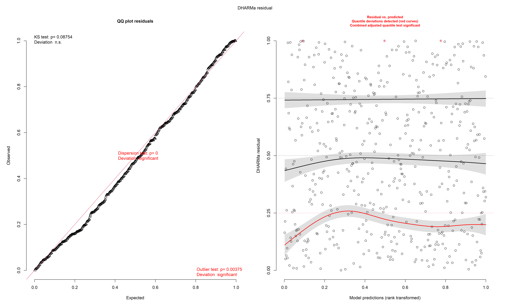
La figure 8.36 indique deux problèmes importants dans le modèle : la présence de valeurs aberrantes ainsi qu’un potentiel problème de dispersion. Nous commençons donc par identifier ces valeurs aberrantes.
# Identification des outliers
isOutlier <- outliers(sim_res, return = "logical", lowerQuantile = 0.001,
upperQuantile = 0.999)
cas_etrange <- subset(data_accidents, isOutlier)
print(cas_etrange) Nbr_acci Feux_auto Feux_piet Pass_piet Terreplein Apaisement EmpTotBuffer
1 19 1 1 1 1 0 7208.538
5 12 1 0 1 0 0 8585.350
26 7 0 0 1 0 0 1342.625
44 5 0 0 0 0 0 4998.519
74 3 0 0 0 0 0 1103.884
481 0 0 0 0 0 0 4072.706
Densite_pop Entropie DensiteInter Long_arterePS Artere NB_voies5 log_acci
1 5980.923 0.8073926 42.41597 6955.00 1 1 2.995732
5 8655.430 0.7607852 89.11495 6412.27 0 0 2.564949
26 2751.012 0.0000000 73.35344 2849.66 0 0 2.079442
44 8090.478 0.7879618 66.86856 4517.65 0 0 1.791759
74 4191.428 0.5486432 56.52712 3691.33 0 0 1.386294
481 9014.759 0.7510579 50.32579 3947.19 0 0 0.000000
catego_acci catego_acci2 Arret VAG sum_app LogEmploi AccOrdinal PopHa
1 1 1 0 1 4 8.883021 2 5.980923
5 1 1 0 1 4 9.057813 2 8.655430
26 1 1 1 1 3 7.202382 2 2.751012
44 1 1 1 1 4 8.516897 2 8.090478
74 1 0 1 1 4 7.006590 2 4.191428
481 0 0 1 1 4 8.312063 0 9.014759Nous retirons des données les quelques observations pouvant avoir une trop forte influence sur le modèle. Après réajustement, la figure 8.37 nous informe que nous n’avons plus de valeurs aberrantes restantes ni de fort problème de dispersion. En revanche, le premier quantile des résidus tant à être plus faible que ce que nous aurions pu nous attendre d’une distribution uniforme. Ce constat laisse penser que le modèle a du mal à bien identifier les faux zéros. Ce résultat n’est pas étonnant, car aucune variable n’avait été identifiée à cette fin dans l’article original (Cloutier et al. 2014) qui utilisait un modèle binomial négatif.
data2 <- subset(data_accidents, isOutlier == FALSE)
# Ajuster une première version du modèle
modelza <- gamlss(formula = Nbr_acci ~ Feux_auto + Feux_piet + Pass_piet +
Terreplein + Apaisement + LogEmploi + Densite_pop +
Entropie + DensiteInter + Long_arterePS + Artere + NB_voies5,
sigma.formula = ~1 + Feux_auto + Feux_piet + Densite_pop + NB_voies5,
family = ZIP(mu.link = "log", sigma.link="logit"),
data = data2)GAMLSS-RS iteration 1: Global Deviance = 1377.478
GAMLSS-RS iteration 2: Global Deviance = 1368.424
GAMLSS-RS iteration 3: Global Deviance = 1365.835
GAMLSS-RS iteration 4: Global Deviance = 1365.067
GAMLSS-RS iteration 5: Global Deviance = 1364.803
GAMLSS-RS iteration 6: Global Deviance = 1364.713
GAMLSS-RS iteration 7: Global Deviance = 1364.681
GAMLSS-RS iteration 8: Global Deviance = 1364.67
GAMLSS-RS iteration 9: Global Deviance = 1364.666
GAMLSS-RS iteration 10: Global Deviance = 1364.664
GAMLSS-RS iteration 11: Global Deviance = 1364.663 # Extraire la prédiction des valeurs lambda
lambdas <- predict(modelza, type = "response", what = "mu")
# Extraire la prédiction des valeurs p
ps <- predict(modelza, type = "response", what = "sigma")
# Calculer la combinaison de ces deux éléments
preds <- lambdas * ps
# Effectuer les 1000 simulations
nsim <- 1000
cols <- lapply(1:length(lambdas), function(i){
lambda <- lambdas[[i]]
p <- ps[[i]]
sims <- rZIP(n = nsim, mu = lambda, sigma = p)
return(sims)
})
mat_sims <- do.call(rbind, cols)
# Calculer les résidus simulés
sim_res <- createDHARMa(simulatedResponse = mat_sims,
observedResponse = data2$Nbr_acci,
fittedPredictedResponse = preds,
integerResponse = TRUE)
plot(sim_res)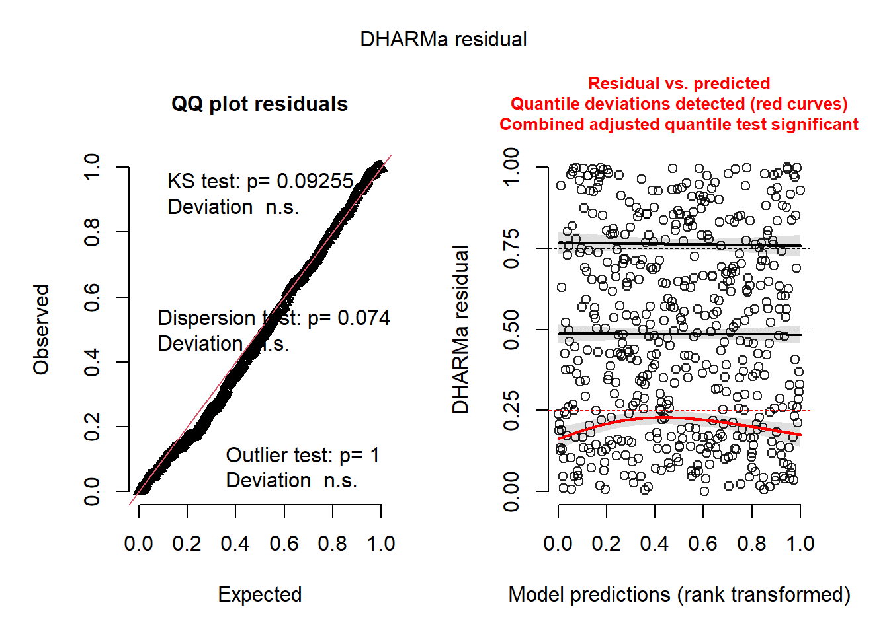
Nous pouvons une fois encore comparer des simulations issues du modèle et de la distribution originale de la variable Y. La figure 8.38 montre clairement que les simulations du modèle (en bleu) sont très éloignées dans la distribution originale (en gris), ce qui remet directement en question la pertinence de ce modèle.
#| # Extraire la prédiction des valeurs lambda
lambdas <- predict(modelza, type = "response", what = "mu")
# Extraire la prédiction des valeurs p
ps <- predict(modelza, type = "response", what = "sigma")
# Génération de 1000 simulations pour chaque prédiction
nsim <- 1000
cols <- lapply(1:length(lambdas), function(i){
lambda <- lambdas[[i]]
p <- ps[[1]]
sims <- round(rZIP(nsim, mu=lambda, sigma = p))
return(sims)
})
mat_sims <- do.call(rbind, cols)
# Préparation des données pour le graphique (valeurs réelles)
counts <- data.frame(table(data2$Nbr_acci))
names(counts) <- c("nb_accident",'frequence')
counts$nb_accident <- as.numeric(as.character(counts$nb_accident))
counts$prop <- counts$frequence / sum(counts$frequence)
# Préparation des données pour le graphique (valeurs simulées)
df1 <- data.frame(count = 0:25)
count_sims <- lapply(1:nsim, function(i){
sim <- mat_sims[,i]
cnt <- data.frame(table(sim))
df2 <- merge(df1, cnt, by.x = "count", by.y = "sim", all.x = TRUE, all.y = FALSE)
df2$Freq <- ifelse(is.na(df2$Freq),0, df2$Freq)
return(df2$Freq)
})
count_sims <- do.call(cbind, count_sims)
df_sims <- data.frame(
val = 0:25,
med = apply(count_sims, MARGIN = 1, median),
lower = apply(count_sims, MARGIN = 1, quantile, probs = 0.025),
upper = apply(count_sims, MARGIN = 1, quantile, probs = 0.975)
)
# Affichage du graphique
ggplot() +
geom_bar(aes(x = nb_accident, weight = frequence), width = 0.6, data = counts)+
geom_errorbar(aes(x = val, ymin = lower, ymax = upper),
data = df_sims, color = "blue", width = 0.6)+
geom_point(aes(x = val, y = med), color = "blue", size = 1.3, data = df_sims)+
scale_x_continuous(limits = c(-0.5,7), breaks = c(0:7))+
xlim(-1,12)+
labs(subtitle = "",
x = "nombre d'accidents",
y = "nombre d'occurrences")Vérification la qualité d’ajustement
modelenull <- glm(Nbr_acci ~ 1,
family = poisson(link="log"),
data = data2)
# Calcul des R2
rsqs(loglike.full = logLik(modelza),
loglike.null = logLik(modelenull),
full.deviance = deviance(modelza),
null.deviance = deviance(modelenull),
nb.params = modelza$sigma.df + modelza$mu.df,
n = nrow(data2)
)$`deviance expliquee`
[1] 0.1146181
$`McFadden ajuste`
'log Lik.' 0.3632167 (df=18)
$`Cox and Snell`
'log Lik.' 0.812355 (df=18)
$Nagelkerke
'log Lik.' 0.8223711 (df=18)[1] 2.641866Le modèle avec excès de zéro ajusté ne parvient à expliquer que 11 % de la déviance totale. Il obtient toutefois des valeurs de R2 assez hautes (McFadden ajusté : 0,36, Nagerlkerke : 0,82). Son RMSE est très élevé (2,6), comparativement à celui que nous avons obtenu avec le modèle binomial négatif (1,9). Considérant ces éléments, ce modèle est nettement moins informatif que le modèle binomial négatif et ne devrait pas être retenu. Nous montrons tout de même ici comment interpréter ces résultats.
Interprétation des résultats
L’ensemble des coefficients du modèle sont accessibles avec la fonction summary. Les coefficients dédiés à la partie Poisson (appelée Mu dans le résumé) doivent être analysés et interprétés de la même manière que s’ils provenaient d’un modèle de Poisson. Les coefficients appartenant à la partie logistique (appelé Sigma dans le résumé) doivent être analysés et interprétés de la même manière que s’ils provenaient d’un modèle logistique.
# Extraction des résultats
base_table <- summary(modelza)******************************************************************
Family: c("ZIP", "Poisson Zero Inflated")
Call: gamlss(formula = Nbr_acci ~ Feux_auto + Feux_piet +
Pass_piet + Terreplein + Apaisement + LogEmploi +
Densite_pop + Entropie + DensiteInter + Long_arterePS +
Artere + NB_voies5, sigma.formula = ~1 + Feux_auto +
Feux_piet + Densite_pop + NB_voies5, family = ZIP(mu.link = "log",
sigma.link = "logit"), data = data2)
Fitting method: RS()
------------------------------------------------------------------
Mu link function: log
Mu Coefficients:
Estimate Std. Error t value Pr(>|t|)
(Intercept) -2.792e+00 5.432e-01 -5.139 4.02e-07 ***
Feux_auto 5.850e-01 1.912e-01 3.060 0.00233 **
Feux_piet 4.206e-01 1.045e-01 4.026 6.59e-05 ***
Pass_piet 4.337e-01 1.950e-01 2.224 0.02659 *
Terreplein -3.305e-01 1.666e-01 -1.984 0.04784 *
Apaisement 2.323e-01 1.534e-01 1.514 0.13056
LogEmploi 1.815e-01 7.472e-02 2.429 0.01552 *
Densite_pop 8.854e-05 1.502e-05 5.895 7.07e-09 ***
Entropie -2.994e-01 2.933e-01 -1.021 0.30784
DensiteInter 3.917e-03 2.046e-03 1.915 0.05612 .
Long_arterePS 8.740e-06 1.992e-05 0.439 0.66097
Artere 9.867e-02 1.108e-01 0.891 0.37360
NB_voies5 4.298e-01 1.014e-01 4.237 2.71e-05 ***
---
Signif. codes: 0 '***' 0.001 '**' 0.01 '*' 0.05 '.' 0.1 ' ' 1
------------------------------------------------------------------
Sigma link function: logit
Sigma Coefficients:
Estimate Std. Error t value Pr(>|t|)
(Intercept) 9.948e-01 5.717e-01 1.740 0.08246 .
Feux_auto -1.737e+00 6.225e-01 -2.789 0.00549 **
Feux_piet 3.407e-01 7.496e-01 0.455 0.64965
Densite_pop -1.202e-04 5.605e-05 -2.146 0.03241 *
NB_voies5 -2.033e+00 1.511e+00 -1.345 0.17912
---
Signif. codes: 0 '***' 0.001 '**' 0.01 '*' 0.05 '.' 0.1 ' ' 1
------------------------------------------------------------------
No. of observations in the fit: 499
Degrees of Freedom for the fit: 18
Residual Deg. of Freedom: 481
at cycle: 11
Global Deviance: 1364.663
AIC: 1400.663
SBC: 1476.49
******************************************************************# Multiplication par 1000 des coefficients de population
# (effet pour 1000 habitants)
base_table[8,1] <- 1000 * base_table[8,1]
base_table[8,2] <- 1000 * base_table[8,2]
base_table[17,1] <- 1000 * base_table[17,1]
base_table[17,2] <- 1000 * base_table[17,2]
# Multiplication par 1000 des coefficients de longueur artère
# (effet pour 1 km)
base_table[11,1] <- 1000 * base_table[11,1]
base_table[11,2] <- 1000 * base_table[11,2]
# Calcul des exponentiels des variables indépendantes
# et des intervalles de confiance
expcoeff <- exp(base_table[,1])
expcoeff2.5 <- exp(base_table[,1] - 1.96 * base_table[,2])
expcoeff97.5 <- exp(base_table[,1] + 1.96 * base_table[,2])
base_table <- cbind(base_table, expcoeff, expcoeff2.5, expcoeff97.5)
# Calculer une colonne indiquant le niveau de significativité
sign <- case_when(
base_table[,4] < 0.001 ~ "***",
base_table[,4] >= 0.001 & base_table[,4]<0.01 ~ "**",
base_table[,4] >= 0.01 & base_table[,4]<0.05 ~ "*",
base_table[,4] >= 0.05 & base_table[,4]<0.1 ~ ".",
TRUE ~ ""
)
# Arrondir à trois décimales
base_table <- round(base_table,3)
# Enlever les colonnes de valeurs de t et d'erreur standard
base_table <- base_table[, c(1,4,5,6,7)]
base_table <- cbind(base_table, sign)
# Remplacer les 0 dans la colonne pval
base_table[,2] <- ifelse(base_table[,2]=="0" , "<0.001",base_table[,2])
# Séparer le tout en deux tableaux
part_poiss <- base_table[1:13,]
part_logit <- base_table[14:18,]
# Mettre les bons noms de colonnes
colnames(part_poiss) <- c("Coeff." , "Val.p" , "Exp(Coeff.)",
"IC 2,5 % exp(Coeff.)" , "IC 97,5 % exp(Coeff.)", "Sign.")
colnames(part_logit) <- c("Coeff." , "Val.p" , "RC" , "IC 2,5 % RC" , "IC 97,5 % RC", "Sign.")Nous rapportons les résultats de ce modèle de Poisson avec excès de zéro ajusté dans les tableaux 8.27 et 8.28.
| Variable | Coeff. | Val.p | Exp(Coeff.) | IC 2,5 % exp(Coeff.) | IC 97,5 % exp(Coeff.) | Sign. |
|---|---|---|---|---|---|---|
| (Intercept) | -2.792 | <0.001 | 0.061 | 0.021 | 0.178 | *** |
| Feux_auto | 0.585 | 0.002 | 1.795 | 1.234 | 2.611 | ** |
| Feux_piet | 0.421 | <0.001 | 1.523 | 1.241 | 1.869 | *** |
| Pass_piet | 0.434 | 0.027 | 1.543 | 1.053 | 2.261 | * |
| Terreplein | -0.33 | 0.048 | 0.719 | 0.518 | 0.996 | * |
| Apaisement | 0.232 | 0.131 | 1.261 | 0.934 | 1.704 | |
| LogEmploi | 0.181 | 0.016 | 1.199 | 1.036 | 1.388 | * |
| Densite_pop | 0.089 | <0.001 | 1.093 | 1.061 | 1.125 | *** |
| Entropie | -0.299 | 0.308 | 0.741 | 0.417 | 1.317 | |
| DensiteInter | 0.004 | 0.056 | 1.004 | 1 | 1.008 | . |
| Long_arterePS | 0.009 | 0.661 | 1.009 | 0.97 | 1.049 | |
| Artere | 0.099 | 0.374 | 1.104 | 0.888 | 1.371 | |
| NB_voies5 | 0.43 | <0.001 | 1.537 | 1.26 | 1.875 | *** |
| Variable | Coeff. | Val.p | RC | IC 2,5 % RC | IC 97,5 % RC | Sign. |
|---|---|---|---|---|---|---|
| (Intercept) | 0.995 | 0.082 | 2.704 | 0.882 | 8.292 | . |
| Feux_auto | -1.737 | 0.005 | 0.176 | 0.052 | 0.597 | ** |
| Feux_piet | 0.341 | 0.65 | 1.406 | 0.324 | 6.111 | |
| Densite_pop | -0.12 | 0.032 | 0.887 | 0.794 | 0.99 | * |
| NB_voies5 | -2.033 | 0.179 | 0.131 | 0.007 | 2.532 |
Nous observons ainsi que la présence d’un feu de circulation divise par 5 les chances de rentrer dans la catégorie d’intersection où des accidents peuvent se produire. De même, la densité de population réduit les chances de passer dans cette catégorie de 11 %.
Concernant les coefficients pour la partie Poisson du modèle, nous observons que les présences d’un feu de circulation et d’un feu pour piéton contribuent à multiplier respectivement par 2 et 1,5 le nombre attendu d’accidents à une intersection. De même, la présence d’un axe de circulation à cinq voies augmente de 57 % le nombre d’accidents. Enfin, la densité de population est aussi associée à une augmentation du nombre d’accidents : pour 1 000 habitants supplémentaires autour de l’intersection, nous augmentons le nombre d’accidents attendu de 9 %.
8.3.5 Conclusion sur les modèles destinés à des variables de comptage
Dans cette section, nous avons vu que modéliser une variable de comptage ne doit pas toujours être réalisé avec une simple distribution de Poisson. Il est nécessaire de tenir compte de la sur ou sous-dispersion potentielle ainsi que de l’excès de zéros. Nous n’avons cependant pas couvert tous les cas. Il est en effet possible d’ajuster des modèles avec une distribution binomiale négative avec excès de zéros (avec le package gamlss), ainsi que des modèles de Hurdle. Ces derniers ont une approche différente de celle proposée par les distributions ajustées pour tenir compte de l’excès de zéro que nous détaillons dans l’encadré « pour aller plus loin » ci-dessous. Le processus de sélection du modèle peut être résumé avec la figure 8.39. Notez que même en suivant cette procédure, rien ne garantit que votre modèle final reflète bien les données que vous étudiez. L’analyse approfondie des résidus et des prédictions du modèle est la seule façon de déterminer si oui ou non le modèle est fiable.

Modèle de Hurdle versus modèle avec excès de zéro
Les modèles de Hurdle sont une autre catégorie de modèles GLM. Ils peuvent être décrits avec la formulation suivante :
\[ \left\{\begin{array}{c} Y \sim \text {Binomial}(p) \text { si } y = 0 \\ \text { logit }(p)=\beta_{a} X_{a} \\ Y \sim \text { TrPoisson}(\lambda) \text { si } y>0 \\ \log (\lambda)=\beta_{b} X_{b} \end{array}\right. \tag{8.21}\]
Nous constatons qu’un modèle de Hurdle utilise deux distributions, la première est une distribution binomiale dont l’objectif est de prédire si les observations sont à 0 ou au-dessus de 0. La seconde est une distribution strictement positive (supérieure à 0), il peut s’agir d’une distribution tronquée de Poisson, tronquée binomiale négative, Gamma, log-normale ou autre, dépendamment du phénomène modélisé. Puisque le modèle fait appel à deux distributions, deux équations de régression sont utilisées, l’une pour prédire p (la probabilité d’observer une valeur au-dessus de 0) et l’autre l’espérance (moyenne) de la seconde distribution.
En d’autres termes, un modèle de Hurdle modélise les données à zéro et les données au-delà de 0 comme deux processus différents (chacun avec sa propre distribution). Cette approche se distingue des modèles avec excès de zéros qui utilisent une seule distribution pour décrire l’ensemble des données. D’après un modèle avec excès de zéro, il existe de vrais et de faux zéros que l’on tente de distinguer. Dans un modèle de Hurdle, l’idée est que les zéros constituent une limite. Nous modélisons la probabilité de dépasser cette limite et ensuite la magnitude du dépassement de cette limite.
Prenons un exemple pour rendre la distinction plus concrète. Admettons que nous utilisons un capteur capable de mesurer la concentration de particules fines dans l’air. D’après les spécifications du fabricant, le capteur est capable de mesurer des taux de concentration à partir de 0,001 µg/m3. Dans une ville avec des niveaux de concentration très faibles, il est très fréquent que le capteur enregistre des valeurs à zéro. Considérant ce phénomène, il serait judicieux de modéliser le processus avec un modèle de Hurdle Gamma puisque les 0 représentent une limite qui n’a pas été franchie : le seuil de détection du capteur. Nous traitons donc différemment les secteurs au-dessous et au-dessus de ce seuil. Si nous reprenons notre exemple sur les accidents des piétons à des intersections, il est plus judicieux, dans ce cas, de modéliser le phénomène avec un modèle avec excès de zéro puisque nous pouvons observer zéro accident à une intersection dangereuse (vrai zéro) et zéro accident à une intersection sur laquelle aucun piéton ne traverse jamais (faux zéro).
8.4 Modèles GLM pour des variables continues
Comme nous l’avons vu dans la section 2.4, il existe un grand nombre de distributions permettant de décrire une grande diversité de variables continues. Il serait fastidieux de toutes les présenter, nous revenons donc seulement sur les plus fréquentes.
8.4.1 Modèle GLM gaussien
Comme nous l’avons vu en introduction, le modèle GLM gaussien est le plus simple puisqu’il correspond à la transposition de la régression linéaire classique (des moindres carrés) dans la forme des modèles généralisés.
| Type de variable dépendante | Variable continue dans l’intervalle \(]-\infty ; + \infty[\) |
| Distribution utilisée | Normale |
| Formulation | \(Y \sim Normal(\mu,\sigma)\) \(g(\mu) = \beta_0 + \beta X\) \(g(x) = x\) |
| Fonction de lien | Identitaire |
| Paramètre modélisé | \(\mu\) |
| Paramètres à estimer | \(\beta_0\), \(\beta\) et \(\sigma\) |
| Conditions d’application | Homoscédasticité |
8.4.1.1 Conditions d’application
Les conditions d’application sont les mêmes que celles d’une régression linéaire classique. La condition de l’homoscédasticité (homogénéité de la variance) est due au fait que la variance du modèle est contrôlée par un seul paramètre fixe \(var(y) = \sigma\) (l’écart-type de la distribution normale). À titre de comparaison, rappelons que dans un modèle de Poisson, la variance est égale à la moyenne (\(var(y) = E(y)\)) alors que dans un modèle binomial négatif, la variance est fonction de la moyenne et d’un paramètre \(\theta\) (\(var(y) = E(y) + E(y)^{\frac{2}{\theta}}\)). Pour ces deux exemples, la variance augmente au fur et à mesure que la moyenne augmente.
8.4.1.2 Interprétation des paramètres
L’interprétation des paramètres est la même que pour une régression linéaire classique :
\(\beta_0\) : la constante, soit la moyenne attendue de la variable Y lorsque les valeurs de toutes les variables X sont 0.
\(\beta\) : les coefficients de régression qui quantifient l’effet d’une augmentation d’une unité des variables X sur la moyenne de la variable Y.
\(\sigma\) : l’écart-type de Y après avoir contrôlé les variables X. Il peut s’interpréter comme l’incertitude restante après modélisation de la moyenne de Y. Concrètement, si vous utilisez votre équation de régression pour prédire une nouvelle valeur de Y : \(\hat{Y}\), l’intervalle de confiance à 95 % de cette prédiction est (\(\hat{Y} - 3\sigma\text{ ; }\hat{Y} + 3\sigma\)). Vous noterez donc que plus \(\sigma\) est grand, plus grande est l’incertitude de la prédiction.
8.4.1.3 Exemple appliqué dans R
Pour cet exemple, nous reprenons le modèle LM que nous avons présenté dans la section 7.7. À titre de rappel, l’objectif est de modéliser la densité végétale dans les secteurs de recensement de Montréal. Pour cela, nous utilisons des variables relatives aux populations vulnérables physiologiquement ou socioéconomiquement, tout en contrôlant l’effet de la forme urbaine. Parmi ces dernières, l’âge médian des bâtiments est ajouté au modèle avec une polynomiale d’ordre deux, et la densité d’habitants est transformée avec la fonction logarithmique.
Vérification des conditions d’application
La première étape de la vérification des conditions d’application est bien sûr de s’assurer de l’absence de multicolinéarité excessive.
# Chargement des données
load("data/lm/DataVegetation.RData")
# Calcul du VIF
library(car)
vif(glm(VegPct ~ log(HABHA)+poly(AgeMedian,2)+
Pct_014+Pct_65P+Pct_MV+Pct_FR, data = DataFinal)) GVIF Df GVIF^(1/(2*Df))
log(HABHA) 1.289495 1 1.135559
poly(AgeMedian, 2) 1.387429 2 1.085307
Pct_014 1.517957 1 1.232054
Pct_65P 1.304094 1 1.141969
Pct_MV 1.480275 1 1.216666
Pct_FR 1.729646 1 1.315160Puisque l’ensemble des valeurs de VIF sont inférieures à deux, nos données ne sont pas marquées par une multicolinéarité problématique. La seconde étape du diagnostic consiste à calculer et à afficher les distances de Cook.
La figure 8.40 indique clairement que quatre observations sont très influentes dans le modèle.
VegPct ArbPct V250Pct V500Pct A250Pct A500Pct HABHA AgeMedian Pct_014
3374 10.481 5.478 18.987 13.744 2.908 2.704 74.835867 226 4.76
3378 0.000 0.000 12.709 12.505 2.116 2.324 88.006946 206 6.25
4446 23.162 5.209 31.437 31.535 8.672 9.108 313.142733 206 14.40
9088 85.767 27.583 78.195 83.492 42.999 51.074 2.070472 207 12.00
Pct_65P Pct_MV Pct_FR DistCBDkm SDRNOM
3374 14.29 23.81 14.29 0.748 Montréal
3378 12.50 25.00 12.50 0.706 Montréal
4446 16.87 53.50 42.39 8.678 Montréal
9088 24.00 12.00 16.00 28.440 MontréalIl s’agit de quatre îlots dans Montréal avec des logements très anciens : plus de 200 ans, alors que la moyenne est de 52 ans pour le reste de la zone d’étude. Le fait que nous ayons dans le modèle une polynomiale d’ordre 2 pour cette variable intensifie l’influence de ces valeurs extrêmes. Par conséquent, nous décidons de simplement les supprimer. Nous verrons plus tard qu’une alternative envisageable est de changer la distribution du modèle pour une distribution de Student (plus robuste aux valeurs extrêmes).
Une fois ces observations retirées, les nouvelles distances de Cook ne révèlent plus d’observations fortement influentes (figure 8.41). Nous pouvons passer à l’analyse des résidus simulés. La figure 8.42 démontre que la distribution des résidus est significativement différente d’une distribution uniforme, que des valeurs aberrantes sont encore présentes et qu’il existe un lien entre résidus et prédiction dans le modèle.
# Extraction des prédictions du modèle
mus <- predict(modele, type = 'response')
modsigma <- sigma(modele)
# Extraction de l'écart type du modèle
# Génération de 1000 simulations pour chaque prédiction
nsim <- 1000
cols <- lapply(1:length(mus), function(i){
mu <- mus[[i]]
sims <- rnorm(nsim, mean=mu, sd = modsigma)
return(sims)
})
mat_sims <- do.call(rbind, cols)
# Calculer les résidus simulés
sim_res <- createDHARMa(simulatedResponse = mat_sims,
observedResponse = DataFinal2$VegPct,
fittedPredictedResponse = mus,
integerResponse = FALSE)
plot(sim_res)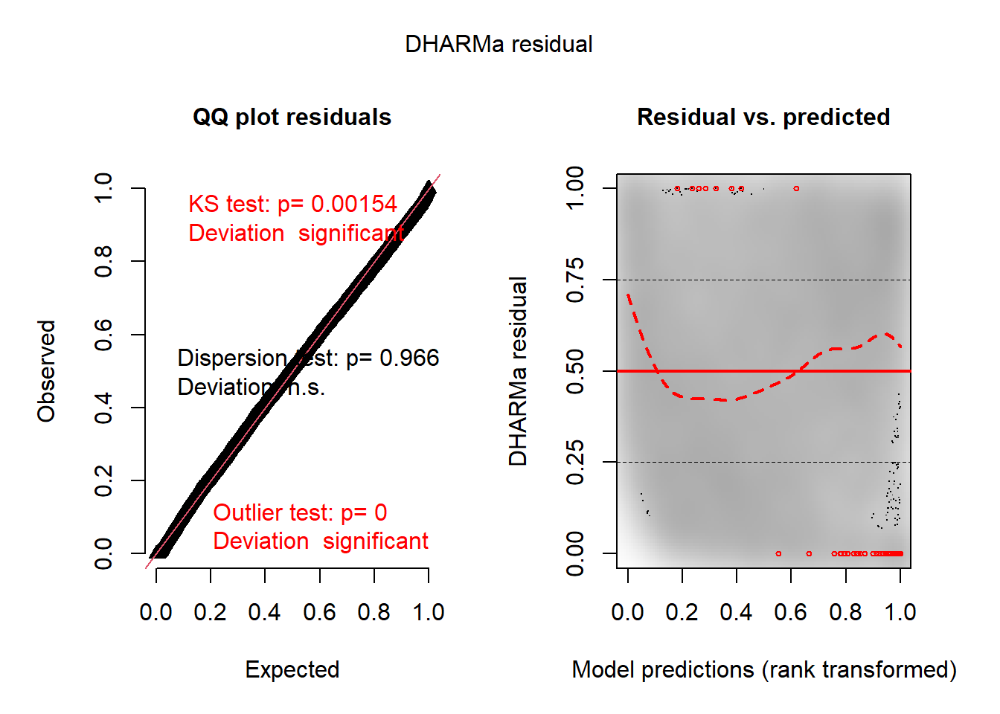
Pour mieux cerner ce problème, nous pouvons, dans un premier temps, comparer la distribution originale des données et les simulations issues du modèle. La figure 8.43 montre clairement que la distribution normale est mal ajustée aux données. Ces dernières sont légèrement asymétriques et ne peuvent pas être inférieures à zéro, ce que la distribution normale ne parvient pas à reproduire.
df <- reshape2::melt(mat_sims[,1:30])
ggplot() +
geom_histogram(data = DataFinal2, mapping = aes(x = VegPct, y = ..density..),
color = "black", fill = "white", bins = 50)+
geom_density(data = df, aes(x = value, group = Var2),
color = rgb(0.4,0.4,0.4,0.4), fill = rgb(0,0,0,0))+
labs(x = "Pourcentage de végétation dans l'îlot (%)",
y = "Densité")Il est également possible de vérifier si la condition d’homogénéité de la variance s’applique bien aux données.
# Extraction des prédictions du modèle
mus <- predict(modele, type = "response")
sigma_model <- sigma(modele)
# Création d'un DataFrame pour contenir les prédictions et les vraies valeurs
df1 <- data.frame(
mus = mus,
reals = DataFinal2$VegPct
)
# Calcul de l'intervalle de confiance à 95 % selon la distribution normale
# et stockage dans un second DataFrame
seqa <- seq(0,100,10)
df2 <- data.frame(
mus = seqa,
lower = qnorm(p = 0.025, mean = seqa, sd = sigma_model),
upper = qnorm(p = 0.975, mean = seqa, sd = sigma_model)
)
# Affichage des valeurs réelles et prédites (en rouge)
# et de leur variance selon le modèle (en noir)
ggplot() +
geom_point(data = df1,
mapping = aes(x = mus, y = reals),
color ="red", size = 0.5) +
geom_errorbar(data = df2,
mapping = aes(x = mus, ymin = lower, ymax = upper),
width = 0.2, color = rgb(0.4,0.4,0.4)) +
labs(x = "valeurs prédites",
y = "valeurs réelles")À nouveau, nous constatons à la figure 8.44 que le modèle s’attend à trouver des valeurs négatives pour la concentration de végétation, ce qui n’est pas possible dans notre cas. En revanche, il semble que la variance soit bien homogène puisque la dispersion des observations semble suivre à peu près la dispersion attendue par le modèle (en noir).
Malgré ces différents constats indiquant clairement qu’un modèle gaussien est un choix sous-optimal pour ces données, nous poursuivons l’analyse de ce modèle.
Vérification de la qualité d’ajustement
# Ajustement d'un modèle nul
modelenull <- glm(VegPct ~ 1,
data = DataFinal2,
family = gaussian())
# Calcul des pseudo R2
rsqs(loglike.full = logLik(modele),
loglike.null = logLik(modelenull),
full.deviance = deviance(modele),
null.deviance = deviance(modelenull),
nb.params = modele$rank,
n = nrow(DataFinal2)
)$`deviance expliquee`
[1] 0.4706321
$`McFadden ajuste`
'log Lik.' 0.07310662 (df=9)
$`Cox and Snell`
'log Lik.' 0.4706321 (df=9)
$Nagelkerke
'log Lik.' 0.4707122 (df=9)Le modèle parvient à expliquer 47 % de la déviance totale, mais obtient un R2 ajusté de McFadden de seulement 0,07.
[1] 13.49885L’erreur quadratique moyenne et de 13,5 points de pourcentage, ce qui indique que le modèle a une assez faible capacité prédictive.
Interprétation des résultats
L’ensemble des coefficients du modèle sont accessibles via la fonction summary; le tableau 8.30 présente les résultats pour les coefficients du modèle.
| Variable | Coeff. | Err.std | Val.z | val.p | IC coeff 2,5 % | IC coeff 97,5 % | Sign. |
|---|---|---|---|---|---|---|---|
| Constante | 53,606 | 1,000 | 53,640 | 0,000 | 51,647 | 55,565 | *** |
| AgeMedian ordre 1 | 2,732 | 15,560 | 0,180 | 0,861 | -27,772 | 33,237 | |
| AgeMedian ordre 2 | -320,869 | 14,000 | -22,910 | 0,000 | -348,318 | -293,420 | *** |
| Pct_014 | 0,915 | 0,030 | 29,310 | 0,000 | 0,853 | 0,976 | *** |
| Pct_65P | 0,280 | 0,020 | 15,050 | 0,000 | 0,243 | 0,316 | *** |
| Pct_MV | -0,042 | 0,010 | -4,190 | 0,000 | -0,061 | -0,022 | *** |
| Pct_FR | -0,340 | 0,010 | -30,940 | 0,000 | -0,362 | -0,318 | *** |
Les résultats de la régression linéaire multiple ont déjà été interprétés dans la section 7.7.1, nous ne commenterons pas ici les résultats du modèle GLM gaussien qui sont identiques.
8.4.2 Modèle GLM avec une distribution de Student
Pour rappel, la distribution de Student ressemble à une distribution normale (section 2.4.3.11). Elle est symétrique autour de sa moyenne et a également une forme de cloche. Cependant, elle dispose de queues lourdes, ce qui signifie qu’elle permet de représenter des phénomènes présentant davantage de valeurs extrêmes qu’une distribution normale. Pour contrôler le poids des queues, la distribution de Student intègre un troisième paramètre : \(\nu\) (nu). Lorsque \(\nu\) tends vers l’infini, la distribution de Student tend vers une distribution normale (figure 8.45).
Comme vous pouvez le constater dans la carte d’identité au tableau 8.31, le modèle GLM de Student est très proche du modèle GLM gaussien. Nous modélisons explicitement la moyenne de la distribution et son paramètre de dispersion (variance) est laissé fixe. Ce GLM est même souvent utilisé comme une version « robuste » du modèle gaussien du fait de sa capacité à intégrer explicitement l’effet des observations extrêmes. En effet, dans un modèle gaussien, les observations extrêmes (aussi appelées observations aberrantes) vont davantage influencer les paramètres du modèle que pour un modèle utilisant une distribution de Student.
| Type de variable dépendante | Variable continue dans l’intervalle \(]-\infty ; + \infty[\) |
| Distribution utilisée | Student |
| Formulation | \(Y \sim Student(\mu,\sigma,\nu)\) \(g(\mu) = \beta_0 + \beta X\) \(g(x) = x\) |
| Fonction de lien | Identitaire |
| Paramètre modélisé | \(\mu\) |
| Paramètres à estimer | \(\beta_0\), \(\beta\), \(\sigma\) et \(\nu\) |
| Conditions d’application | Homoscédasticité |
8.4.2.1 Conditions d’application
Les conditions d’application sont les mêmes que pour un modèle GLM gaussien, à ceci prêt que le modèle utilisant la distribution de Student est moins sensible aux observations extrêmes.
8.4.2.2 Interprétation des paramètres
L’interprétation des paramètres est la même que pour un modèle gaussien puisque nous modélisons la moyenne de la distribution et que la fonction de lien est la fonction identitaire. Le seul paramètre supplémentaire est \(\nu\), qui n’a en soit aucune interprétation pratique. Notez simplement que si \(\nu\) est supérieur à 30, un simple modèle GLM gaussien serait sûrement suffisant.
8.4.2.3 Exemple appliqué dans R
Nous proposons ici de simplement réajuster le modèle gaussien présenté dans la section précédente en utilisant une distribution de Student. Nous utilisons pour cela la fonction gam du package mgcv avec le paramètre family = scat pour utiliser une distribution de Student. Les valeurs de VIF ont déjà été calculées dans l’exemple précédent, nous pouvons donc passer directement au calcul des distances de Cook.
# Chargement des données
load("data/lm/DataVegetation.RData")
# Ajustement du modèle
modele <- gam(VegPct ~ log(HABHA)+poly(AgeMedian,2)+
Pct_014+Pct_65P+Pct_MV+Pct_FR, data = DataFinal,
family = scat)
# Calcul des distances de Cook
cooksd <- cooks.distance(modele)
# Affichage des valeurs
df <- data.frame(
cook = cooksd,
oid = 1:length(cooksd)
)
ggplot(data = df) +
geom_point(aes(x = oid, y = cook), color = rgb(0.4,0.4,0.4,0.7), size = 1) +
labs(x = "", y = "distance de Cook")Nous retrouvons les quatre observations avec des distances de Cook très fortes que nous avons identifiées dans le modèle gaussien. Nous décidons donc de les enlever pour les mêmes raisons que précédemment.
# Chargement des données
DataFinal2 <- subset(DataFinal, cooksd<0.1)
# Ajustement du modèle
modele <- gam(VegPct ~ log(HABHA)+poly(AgeMedian,2)+
Pct_014+Pct_65P+Pct_MV+Pct_FR, data = DataFinal2,
family = scat)
# Calcul des distances de Cook
cooksd <- cooks.distance(modele)
# Affichage des valeurs
df <- data.frame(
cook = cooksd,
oid = 1:length(cooksd)
)
ggplot(data = df) +
geom_point(aes(x = oid, y = cook), color = rgb(0.4,0.4,0.4,0.7), size = 1) +
labs(x = "", y = "distance de Cook")Nous pouvons à présent vérifier si les résidus simulés se comportent tel qu’attendu.
# Extraction des prédictions du modèle
mus <- predict(modele, type = 'response')
# Affichage des paramètres nu et sigma
modele$family$family[1] "Scaled t(6.333,11.281)"sigma_model <- 11.281
nu_model <- 6.333
library(LaplacesDemon) # pour simuler des données d'une distribution de Student
# Génération de 1000 simulations pour chaque prédiction
nsim <- 1000
cols <- lapply(1:length(mus), function(i){
mu <- mus[[i]]
sims <- rst(nsim, mu=mu, sigma = sigma_model, nu = nu_model)
return(sims)
})
mat_sims <- do.call(rbind, cols)
# Calculer les résidus simulés
sim_res <- createDHARMa(simulatedResponse = mat_sims,
observedResponse = DataFinal2$VegPct,
fittedPredictedResponse = mus,
integerResponse = FALSE)
plot(sim_res)Il semble que nous obtenons des résultats similaires à ceux du modèle gaussien: les résidus divergent significativement d’une distribution uniforme (figure 8.48). Le graphique quantile-quantile n’est parfois pas très adapté pour discerner une déviation de la distribution uniforme, nous pouvons dans ce cas afficher un histogramme des résidus pour en avoir le coeur net (figure 8.49).
ggplot()+
geom_histogram(aes(x = residuals(sim_res)), bins = 50, color = "white") +
labs(x = "effectifs", y = "résidus simulés")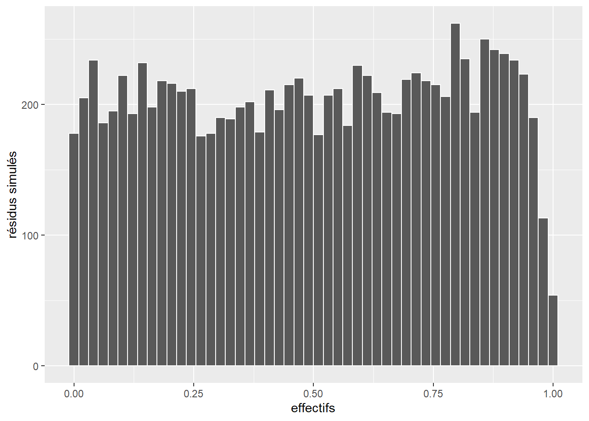
Pour cet exercice, il est intéressant de comparer les formes des simulations issues du modèle gaussien et du modèle de Student pour bien distinguer la différence entre les deux.
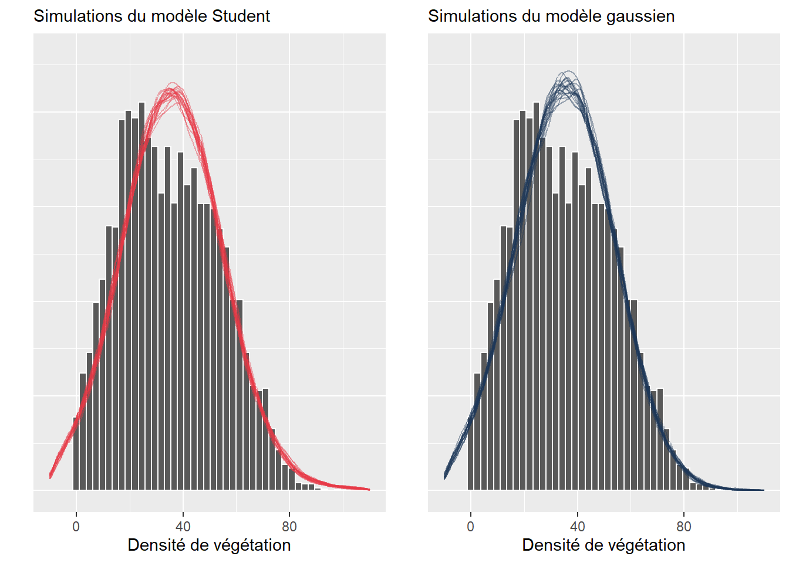
Nous constatons ainsi que la différence entre les deux modèles est ici très mince, voire inexistante. Le seul élément que nous pouvons noter est que le modèle de Student à une courbe (une queue de distribution) moins aplatie vers la droite. Cela lui permettrait de mieux tenir compte de cas extrêmes avec de fortes densités de végétation (ce qui concerne donc très peu d’observations puisque cette variable a un maximum de 100).
Pour déterminer si le modèle de Student est plus pertinent à retenir que le modèle gaussien, nous pouvons ajuster un second modèle de Student pour lequel nous forçons artificiellement \(\nu\) à être très élevé. Pour rappel, quand \(\nu\) tend vers l’infini, la distribution de Student tend vers une distribution normale. Nous forçons ici \(\nu\) à être supérieur à 100 pour créer un second modèle de Student se comportant quasiment comme un modèle gaussien et calculons les AIC des deux modèles.
# Calcul d'un modèle de Student identique à un modèle gaussien
modele2 <- gam(VegPct ~ log(HABHA)+poly(AgeMedian,2)+
Pct_014+Pct_65P+Pct_MV+Pct_FR, data = DataFinal2,
family = scat(min.df = 100))
# Calcul des deux AIC
AIC(modele)[1] 81771.92AIC(modele2)[1] 82057.79Le second AIC (modèle gaussien) est plus élevé, indiquant que le modèle est moins bien ajusté aux données. Dans le cas présent, il est plus pertinent de retenir le modèle de Student même si les écarts entre ces deux modèles sont minimes. Ce résultat n’est pas surprenant puisque la variable Y (pourcentage de végétation dans les îlots de l’île de Montréal) est relativement compacte et comporte peu / pas de valeurs pouvant être qualifiées de valeurs extrêmes.
Nous ne détaillons pas ici l’interprétation des coefficients du modèle (présentés au tableau 8.32) puisqu’ils s’interprètent de la même façon qu’un modèle GLM et qu’un modèle de régression linéaire multiple.
| Variable | Coeff. | Err.std | Val.z | val.p | IC coeff 2,5 % | IC coeff 97,5 % | Sign. |
|---|---|---|---|---|---|---|---|
| Constante | 65,096 | 0,940 | 69,110 | 0,000 | 63,250 | 66,943 | *** |
| log(HABHA) | -9,502 | 0,160 | -60,160 | 0,000 | -9,811 | -9,192 | *** |
| Pct_014 | 0,866 | 0,030 | 29,450 | 0,000 | 0,808 | 0,924 | *** |
| Pct_65P | 0,237 | 0,020 | 13,540 | 0,000 | 0,203 | 0,272 | *** |
| Pct_MV | -0,015 | 0,010 | -1,650 | 0,099 | -0,034 | 0,003 | . |
| Pct_FR | -0,301 | 0,010 | -29,040 | 0,000 | -0,321 | -0,280 | *** |
8.4.3 Modèle GLM avec distribution Gamma
Pour rappel, la distribution Gamma est strictement positive (\([0;+\infty[\)), asymétrique, et a une variance proportionnelle à sa moyenne (hétéroscedastique). Dans la section sur les distributions, nous avons vu que la distribution Gamma (section 2.4.3.15) est formulée avec deux paramètres : sa forme (\(\alpha\) ou shape) et son échelle (\(b\) ou scale). Ces deux paramètres n’ont pas une interprétation intuitive, mais il est possible avec un peu de jonglage mathématique d’arriver à une reparamétrisation intéressante. Cela est détaillé dans l’encadré ci-dessous; notez toutefois qu’il n’est pas nécessaire de maîtriser le contenu de cet encadré pour lire la suite de cette section sur les modèles GLM avec une distribution Gamma.
Reparamétrisation d’une distribution Gamma pour un GLM
Si nous disposons d’une variable Y, suivant une distribution Gamma telle que \(Y \sim Gamma(\alpha,b)\) avec \(\alpha\) le paramètre de forme et \(b\) le paramètre d’échelle, alors, l’espérance et la variance de Y peuvent être définies comme suit :
\[ \begin{aligned} &E(Y) = \alpha \times b \\ &Var(Y) = \alpha \times b^2\\ \end{aligned} \tag{8.22}\]
En d’autres termes, l’espérance (l’équivalent de la moyenne pour une distribution normale) de notre variable Y est égale au produit des paramètres de forme et d’échelle.
Avec ces propriétés, il est possible de redéfinir la fonction de densité de la distribution Gamma et d’arriver à une nouvelle formulation : \(Y \sim Gamma(\mu,\alpha)\). \(\mu\) est donc l’espérance de Y (interprétable comme sa moyenne, soit sa valeur attendue) et \(\alpha\) permet de capturer la dispersion de la distribution Gamma. Par extension des relations présentées ci-dessus, il est possible de reformuler la variance en fonction de \(\mu\) et de \(\alpha\).
\[ \begin{aligned} &Var(Y) = \alpha \times b^2\\ &\mu = \alpha \times b \text{ soit }b = \frac{\mu}{a}\\ &Var(Y) = \alpha \times (\frac{\mu}{\alpha})^2 \text{ soit } Var(Y) = \frac{\mu^2}{\alpha}\\ \end{aligned} \tag{8.23}\]
Nous observons donc que la variance dans un modèle Gamma augmente de façon quadratique avec la moyenne, mais est tempérée par le paramètre de forme. Nous en concluons qu’un paramètre de forme plus grand produit une distribution moins étalée.
Dans ce contexte, \(\mu\) doit être strictement positif : la valeur attendue moyenne d’une distribution Gamma doit être positive par définition puisqu’une distribution Gamma ne peut pas produire de valeurs négatives. Il est donc logique d’utiliser la fonction logarithmique comme fonction de lien, puisque sa contrepartie (la fonction exponentielle) ne produit que des résultats positifs.
Pour résumer, nous nous retrouvons donc avec un modèle qui prédit, sur une échelle logarithmique, l’espérance (~moyenne) d’une distribution Gamma. Notez qu’il existe d’autres façons de spécifier un modèle GLM avec une distribution Gamma, mais celle-ci est la plus intuitive.
| Type de variable dépendante | Variable continue dans l’intervalle \(]0 ; + \infty[\) |
| Distribution utilisée | Gamma |
| Formulation | \(Y \sim Gamma(\mu,\alpha)\) \(g(\mu) = \beta_0 + \beta X\) \(g(x) = log(x)\) |
| Fonction de lien | log |
| Paramètre modélisé | \(\mu\) |
| Paramètres à estimer | \(\beta_0\), \(\beta\), et \(\alpha\) |
| Conditions d’application | \(Variance = \frac{\mu^2}{\alpha}\) |
8.4.3.1 Interprétation des paramètres
Puisque le modèle utilise la fonction de lien log, alors les coefficients \(\beta\) expriment l’augmentation de l’espérance (la valeur attendue de Y, ce qui est proche de l’idée de moyenne) de la variable Y sur une échelle logarithmique (comme dans un modèle de Poisson). Il est possible de convertir les coefficients dans l’échelle originale de la variable Y en utilisant la fonction exponentielle (l’inverse de la fonction log), mais ces coefficients représentent alors des effets multiplicatifs et non des effets additifs. Prenons un exemple, admettons que le coefficient \(\beta_1\), associé à la variable \(X_1\) soit de 1,5. Cela signifie qu’une augmentation d’une unité de \(X_1\), augmente le log de l’espérance de Y de 1,5 unité. L’exponentielle du coefficient est 4,48, ce qui signifie qu’une augmentation d’une unité entraîne une multiplication par 4,48 de la valeur attendue de Y (l’espérance de Y). Le paramètre de forme (\(\alpha\)) n’a pas d’interprétation pratique, bien qu’il soit utilisé dans les différents tests des conditions d’application du modèle et dans le calcul de sa déviance.
8.4.3.2 Conditions d’application
Dans un modèle GLM gaussien, la variance est capturée par un paramètre \(\sigma\) et est constante, produisant la condition d’homoscédasticité des résidus. Dans un modèle Gamma, la variance varie en fonction de l’espérance et du paramètre de forme selon la relation : \(Var(Y) = \frac{E(Y)^2}{\alpha}\). Les résidus sont donc par nature hétéroscédastiques dans un modèle Gamma et doivent suivre cette relation.
8.4.3.3 Exemple appliqué dans R
Pour cet exemple, nous nous intéressons à la durée de déplacement en milieu urbain. Ce type d’analyse permet notamment de mieux comprendre les habitudes de déplacement de la population et d’orienter les politiques de transport. Plusieurs travaux concluent que les durées de déplacement en milieu urbain varient en fonction du motif du déplacement, du mode de transport utilisé, des caractéristiques socio-économiques de l’individu et des caractéristiques du trajet lui-même (Anastasopoulos et al. 2012; Frank et al. 2008). Nous modélisons ici la durée en minute d’un ensemble de déplacements effectués par des Montréalais en 2017 et enregistrés avec l’application MTL Trajet proposée par la Ville de Montréal. Ces données sont disponibles sur le site web des données ouvertes de Montréal et sont anonymisées. Nous ne disposons donc d’aucune information individuelle. Compte tenu du très grand nombre d’observations (plus de 185 000), nous avons dû effectuer quelques opérations de tri et nous avons ainsi supprimé:
les trajets utilisant de multiples modes de transport (sauf en combinaison avec la marche, par exemple, un trajet effectué à pied et en transport en commun a été recatégorisé comme un trajet en transport en commun uniquement). Les déplacements multimodaux se distinguent largement des déplacements unimodaux dans la littérature scientifique;
les trajets de nuit (seuls les trajets démarrant dans l’intervalle de 7 h à 21 h ont été conservés);
les trajets dont le point de départ est un arrondissement / municipalité pour lequel moins de 150 trajets ont été enregistrés (trop peu d’observations);
les trajets de plus de deux heures (cas rares, considérés comme des données aberrantes);
les trajets dont le point de départ est à moins de 100 mètres du point d’arrivée (formant des boucles plutôt que des déplacements).
Nous arrivons ainsi à un total de 24 969 observations. Pour modéliser ces durées de déplacement, nous utilisons les variables indépendantes présentées dans le tableau 8.34.
| Nom de la variable | Signification | Type de variable | Mesure |
|---|---|---|---|
| Mode | Mode de déplacement | Variable catégorielle | Transport collectif; piéton; vélo et véhicule individuel |
| Motif | Motif du déplacement | Variable catégorielle | Travail; loisir; magasinage et éducation |
| HeureDep | Heure de départ | Variable catégorielle | De 7 h à 21 h |
| ArrondDep | Arrondissement de départ | Variable catégorielle | Nom de l’arrondissement dont part le trajet |
| LogDist | Logarithme de la distance à vol d’oiseau en km | Variable continue | Logarithme de la distance à vol d’oiseau en km entre le point de départ et d’arrivée |
| MemeArrond | L’arrivée du trajet se situe-t-elle dans le même arrondissement que celui du départ? | Variable binaire | Oui ou non |
| Semaine | Le trajet a-t-il été effectué en semaine ou en fin de semaine? | Variable binaire | Semaine ou fin de semaine |
Les temps de trajet forment une variable strictement positive et très vraisemblablement asymétrique. En effet, nous nous attendons à observer une certaine concentration de valeurs autour d’une moyenne, et davantage de trajets avec de courtes durées que de trajets avec de longues durées. Pour nous en assurer, réalisons un histogramme de la distribution de notre variable Y et comparons-la avec des distributions normale et Gamma.
# Chargement des données
dataset <- read.csv("data/glm/DureeTrajets.csv", stringsAsFactors = FALSE)
arrondMTL <- c("Mercier-Hochelaga-Maisonneuve", "Villeray-Saint-Michel-Parc-Extension",
"Ville-Marie", "Verdun", "Saint-Leonard", "Saint-Laurent",
"Rosemont-La Petite-Patrie", "Riviere-des-Prairies-Pointe-aux-Trembles",
"Pierrefonds-Roxboro", "Outremont", "Montreal-Nord", "Le Sud-Ouest",
"Le Plateau-Mont-Royal", "Lachine" , "Ahuntsic-Cartierville",
"Anjou" ,"Cote-des-Neiges-Notre-Dame-de-Grace", "LaSalle"
)
dataset <- subset(dataset, dataset$ArrondDep %in% arrondMTL)
# Définissons 7 h du matin comme la référence pour la variable Heure de départ
dataset$HeureDep <- relevel(
factor(dataset$HeureDep, levels = as.character(7:21)),
ref = "7")
# Comparaison de la distribution originale avec une distribution
# normale et une distribution Gamma
library(fitdistrplus)
model_gamma <- fitdist(dataset$Duree, distr = "gamma")
ggplot(data = dataset) +
geom_histogram(aes(x = Duree, y = ..density..), bins = 40, color = "white")+
stat_function(fun = dgamma, color = "red", linewidth = 0.8,
args = as.list(model_gamma$estimate))+
stat_function(fun = dnorm, color = "blue", linewidth = 0.8,
args = list(mean = mean(dataset$Duree),
sd = sd(dataset$Duree)))+
labs(x = "Temps de déplacement (minutes)",
y = "",
subtitle = "modèles Gamma et gaussien")La figure 8.51 permet de constater l’asymétrie de la distribution des temps de trajet et qu’un modèle Gamma (ligne rouge) a plus de chance d’être adapté aux données qu’un modèle gaussien (ligne bleue).
Vérification des conditions d’application
Comme pour les modèles précédents, nous commençons par la vérification de l’absence de multicolinéarité.
## Calcul du VIF
vif(glm(Duree ~ Mode + Motif + HeureDep + LogDist +
ArrondDep + MemeArrond + Jour,
data = dataset,
family = Gamma(link="log"))) GVIF Df GVIF^(1/(2*Df))
Mode 2.103392 3 1.131931
Motif 1.934997 3 1.116298
HeureDep 1.791009 14 1.021032
LogDist 2.665998 1 1.632789
ArrondDep 1.439499 17 1.010772
MemeArrond 2.151113 1 1.466667
Jour 1.330091 6 1.024055L’ensemble des valeurs de VIF sont inférieures à trois, indiquant donc l’absence de multicolinéarité excessive. Nous pouvons donc ajuster une première version du modèle (ici avec le package VGAM et la fonction vglm) et calculer les distances de Cook.
# Calcul du modèle avec VGAM
modele <- vglm(Duree ~ Mode + Motif + HeureDep + LogDist +
ArrondDep+ MemeArrond + Semaine,
data = dataset,
family = gamma2(lmu = "loglink"))
# Calcul des distances de Cook
hats <- hatvaluesvlm(modele)[,1]
res <- residuals(modele, type = "pearson")[,1]
disp <- modele@coefficients[[2]]**-1
nbparams <- modele@rank
cooksd <- (res/(1 - hats))^2 * hats/(disp * nbparams)
df <- data.frame(
cook = cooksd,
oid = 1:length(cooksd)
)
# Représentation des distances de Cook
ggplot(data = df)+
geom_point(aes(x = oid, y = cook), size = 0.5, color = rgb(0.4,0.4,0.4,0.4)) +
geom_hline(yintercept = 0.003, color = "red") +
labs(x = "", y = "distance de Cook")Puisque nous disposons d’un (très) grand nombre d’observations, nous pouvons nous permettre de retirer les quelques observations fortement influentes (distance de Cook > 0,003 dans notre cas) qui apparaissent dans la figure 8.52. Nous retirons ainsi 28 observations et réajustons le modèle.
Nous constatons ainsi que dans la nouvelle version du modèle (figure 8.53), aucune valeur particulièrement influente ne semble être présente.
# Calcul des distances de Cook
hats <- hatvaluesvlm(modele)[,1]
res <- residuals(modele, type = "pearson")[,1]
disp <- modele@coefficients[[2]]**-1
nbparams <- modele@rank
cooksd <- (res/(1 - hats))^2 * hats/(disp * nbparams)
df <- data.frame(
cook = cooksd,
oid = 1:length(cooksd)
)
# Représentation des distances de Cook
ggplot(data = df)+
geom_point(aes(x = oid, y = cook), size = 0.5, color = rgb(0.4,0.4,0.4,0.4)) +
labs(x = "", y = "distance de Cook")# Extraction des prédictions du modèle (mu)
mus <- modele@fitted.values
# Extraction du paramètre de forme
shape <- exp(modele@coefficients[[2]])
# Calcul des simulations
nsim <- 1000
cols <- lapply(1:length(mus), function(i){
mu <- mus[[i]]
sims <- rgamma(n = nsim, shape = shape, scale = mu/shape)
return(sims)
})
mat_sims <- do.call(rbind, cols)
# Représentation graphique de 20 simulations
df2 <- reshape2::melt(mat_sims[,0:20])
ggplot() +
geom_histogram(aes(x = Duree, y = ..density..),
data = dataset, bins = 100, color = "black", fill = "white") +
geom_density(aes(x = value, y = ..density.., group = Var2), data = df2,
fill = rgb(0,0,0,0), color = rgb(0.9,0.22,0.27,0.4), size = 1)+
xlim(0,200)+
labs(x = "durée (minutes)", y = "densité")
Avant de calculer les résidus simulés, nous comparons la distribution originale des données et des simulations issues du modèle. La figure 8.54 permet de constater que le modèle semble bien capturer l’essentiel de la forme de la variable Y originale. Nous notons un léger décalage entre la pointe des deux distributions, laissant penser que les valeurs prédites par le modèle tendent à être légèrement plus grandes que les valeurs réelles. Pour mieux appréhender ce constat, nous passons à l’analyse des résidus simulés.
# DHarma tests
sim_res <- createDHARMa(simulatedResponse = mat_sims,
observedResponse = dataset2$Duree,
fittedPredictedResponse = modele@fitted.values[,1],
integerResponse = FALSE)
ggplot() +
geom_histogram(aes(x = residuals(sim_res)), bins = 100, color = "white") +
labs(x = "résidus simulés",
y = "effectifs")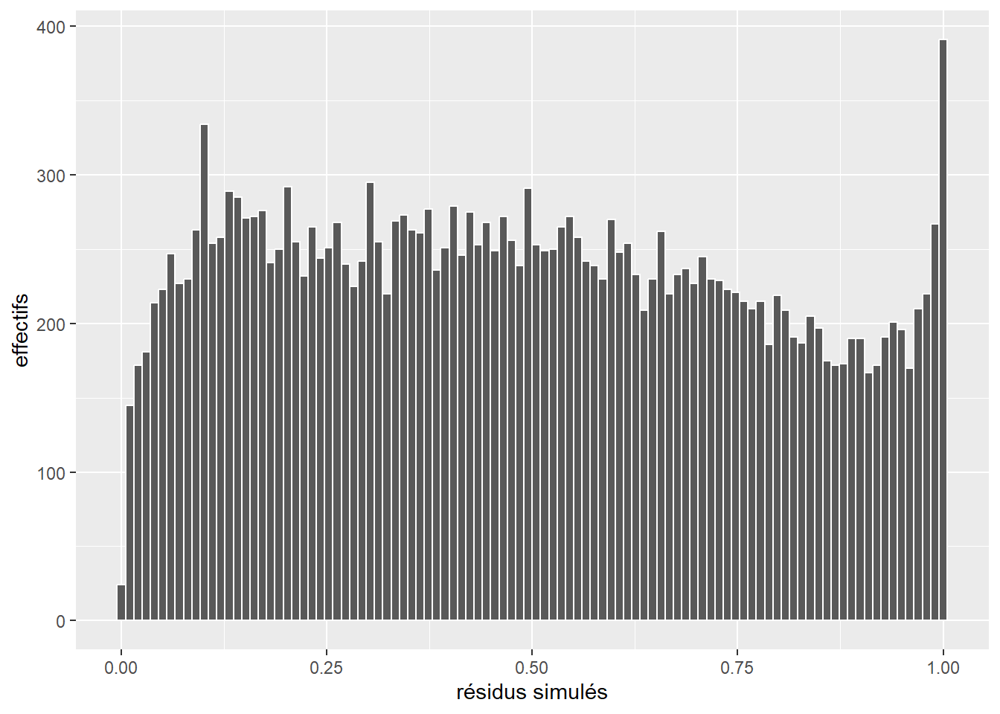
Nul besoin d’un test statistique pour constater que ces résidus (figure 8.55) ne suivent pas une distribution uniforme. Nous observons une nette surreprésentation de résidus à 1 et une nette sous-représentation de résidus à 0. Il y a donc de nombreuses observations dans notre modèle pour lesquelles les simulations sont systématiquement trop fortes et il n’y en a pas assez pour lesquelles les simulations seraient systématiquement trop faibles.
plot(sim_res)La figure 8.56 indique que le modèle souffre à la fois d’un problème de dispersion (la relation espérance-variance n’est donc pas respectée) et est affecté par des valeurs aberrantes. Considérant que nous avons encore un très grand nombre d’observations, nous faisons le choix de retirer celles pour lesquelles la méthode des résidus simulés estime qu’elles sont des valeurs aberrantes dans au moins 1 % des simulations, soit environ 620 observations.
# Sélection des valeurs aberrantes au seuil 0.01
sim_outliers <- outliers(sim_res,
lowerQuantile = 0.01,
upperQuantile = 0.99,
return = "logical")
table(sim_outliers)sim_outliers
FALSE TRUE
22923 623 # Retirer ces observations des données
dataset3 <- subset(dataset2, sim_outliers == FALSE)
# Réajuster le modèle
modele <- vglm(Duree ~ Mode + Motif + HeureDep +
LogDist + ArrondDep + MemeArrond + Semaine,
data = dataset3,
model = TRUE,
family = gamma2)
modele2 <- vglm(Duree ~ Mode + Motif + HeureDep + ArrondDep + MemeArrond + Semaine,
data = dataset3,
model = TRUE,
family = gamma2)
# Extraction des prédictions du modèle (mu)
mus <- modele@fitted.values
# Extration du paramètre de forme
shape <- exp(modele@coefficients[[2]])
# Calcul des simulations
nsim <- 1000
cols <- lapply(1:length(mus), function(i){
mu <- mus[[i]]
sims <- rgamma(n = nsim, shape = shape, scale = mu/shape)
return(sims)
})
mat_sims <- do.call(rbind, cols)
# Calcul des résidus simulés
sim_res <- createDHARMa(simulatedResponse = mat_sims,
observedResponse = dataset3$Duree,
fittedPredictedResponse = modele@fitted.values[,1],
integerResponse = FALSE)
plot(sim_res)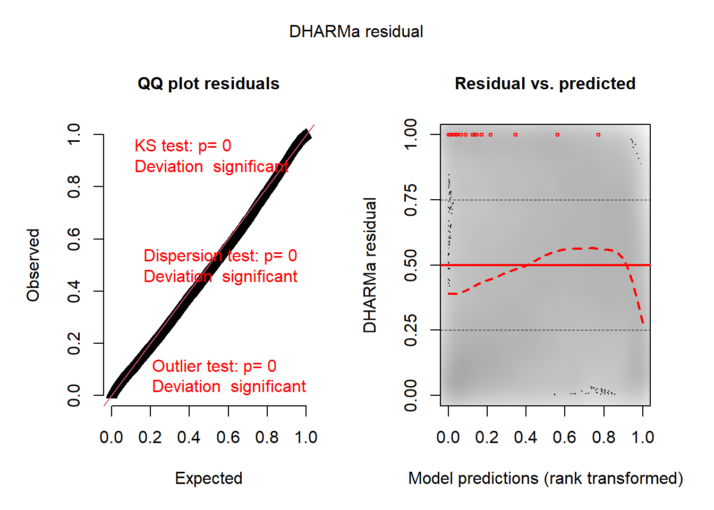
La figure 8.57 indique que les résidus simulés ne suivent toujours pas une distribution uniforme et qu’il existe une relation prononcée (panneau de droite) entre les résidus et les valeurs prédites. Cette dernière laisse penser que des variables indépendantes importantes ont été omises dans le modèle, ce qui n’est pas surprenant compte tenu du fait que nous ne disposons d’aucune donnée socioéconomique sur les individus ayant réalisé les trajets. Nos données sont également potentiellement affectées par la présence de dépendance spatiale.
Nous pouvons comparer graphiquement la variance observée dans les données et la variance attendue par le modèle. La figure 8.58 montre clairement que la variance des données tend à être plus grande qu’attendu quand les temps de trajet sont courts, mais diminue trop vite quand les temps de trajet augmentent. D’autres distributions pourraient être envisagées pour ajuster notre modèle : Lognormal, Weibull, etc.
# Extraction des prédictions du modèle
mus <- predict(modele, type = "response")[,1]
# Création d'un DataFrame pour contenir la prédiction et les vraies valeurs
df1 <- data.frame(
mus = mus,
reals = dataset3$Duree
)
# Calcul de l'intervalle de confiance à 95 % selon la distribution Gamma
# et stockage dans un second DataFrame
seqa <- seq(10,120,10)
shape <- exp(modele@coefficients[[2]])
df2 <- data.frame(
mus = seqa,
lower = qgamma(p = 0.025, shape = shape, scale = seqa/shape),
upper = qgamma(p = 0.975, shape = shape, scale = seqa/shape)
)
# Affichage des valeurs réelles et prédites (en rouge)
# et de leur variance selon le modèle (en noir)
ggplot() +
geom_point(data = df1,
mapping = aes(x = mus, y = reals),
color =rgb(0.9,0.22,0.27,0.4), size = 0.5) +
geom_errorbar(data = df2,
mapping = aes(x = mus, ymin = lower, ymax = upper),
width = 0.2, color = rgb(0.4,0.4,0.4)) +
labs(x = "valeurs prédites",
y = "valeurs réelles")À ce stade, nous disposons de suffisamment d’éléments pour douter des résultats du modèle. Nous poursuivons tout de même notre analyse afin d’illustrer l’estimation de la qualité d’ajustement d’un tel modèle et son interprétation.
Analyse de la qualité d’ajustement
# Ajustement d'un modèle nul
modele.null <- vglm(Duree ~1,
data = dataset3,
model = TRUE,
family = gamma2)
# Calcul des pseudos R2
rsqs(loglike.full = logLik(modele),
loglike.null = logLik(modele.null),
full.deviance = logLik(modele) * -2,
null.deviance = logLik(modele.null) * -2,
nb.params = modele2@rank,
n = nrow(dataset3)
)$`deviance expliquee`
[1] 0.05082616
$`McFadden ajuste`
[1] 0.05037842
$`Cox and Snell`
[1] 0.3337405
$Nagelkerke
[1] 0.3338537# Calcul du RMSE
preds <- predict(modele, type = "response")[,1]
sqrt(mean((preds - dataset3$Duree)**2))[1] 13.36587Le modèle n’explique que 5 % de la déviance et obtient des valeurs de R2 ajusté de McFadden, de Cox et Snell et de Nagelkerke de respectivement 0,05, 0,33 et 0,33. La moyenne de l’erreur quadratique est de seulement 13,4 indiquant que le modèle se trompe en moyenne de seulement 13,4 minutes. La capacité de prédiction du modèle est donc limitée sans être catastrophique.
Interprétation des résultats
Pour rappel, la fonction de lien dans notre modèle est la fonction log. Chaque coefficient représente donc l’effet de l’augmentation d’une unité des variables indépendantes sur le logarithme de l’espérance de notre variable dépendante. Si nous transformons nos coefficients avec la fonction exponentielle (exp), nous obtenons, pour chaque augmentation d’une unité des variables indépendantes, la multiplication de l’espérance de notre variable dépendante.
Puisque nos trajets peuvent provenir de nombreux arrondissements, nous proposons de représenter l’exponentiel de leurs coefficients avec un graphique. Nous pouvons d’ailleurs comparer les exponentiels des coefficients et les effets marginaux pour simplifier l’interprétation.
# Extraction des coefficient du modèle
coeffs <- modele@coefficients
# Calcul des interval de confiance des coefficients
conf <- confint(modele)
# Passage en exponentiel
df <- exp(cbind(coeffs, conf))
# Extraction des coefficients pour les arrondissements
dfArrond <- data.frame(df[grepl("ArrondDep", row.names(df), fixed = TRUE),])
names(dfArrond) <- c("coeff", "lower" , "upper")
dfArrond$Arrondissement <- gsub("ArrondDep" , "", rownames(dfArrond), fixed = TRUE)
# Graphique des exponentiels des coefficients
P1 <- ggplot(data = dfArrond) +
geom_vline(xintercept = 1, color = "red")+
geom_errorbarh(aes(y = reorder(Arrondissement, coeff), xmin = upper, xmax = lower),
height = 0)+
geom_point(aes(y = reorder(Arrondissement, coeff), x = coeff)) +
geom_text(aes(x = upper, y = reorder(Arrondissement, coeff),
label = paste("coeff. : ", round(coeff,2), sep = "")),
size = 3, nudge_x = 0.07)+
labs(x = "Coefficient multiplicateur (ref : Ahuntsic-Cartierville)",
y = "",
subtitle = "Exponentiels des coefficients du modèle")+
xlim(c(0.75,1.46))
# Création d'un DataFrame fictif pour les effets marginaux
dfpred <- expand.grid(
LogDist = mean(dataset3$LogDist),
Motif = 'education',
HeureDep = '7',
MemeArrond = 'Different',
ArrondDep = unique(dataset3$ArrondDep),
Mode = 'pieton','velo','transport collectif',
Semaine = 'lundi au vendredi'
)
# Utiliser le modèle pour effectuer des prédictions (échelle log)
lin_pred <- predict(modele, dfpred, se = TRUE)
mu_lin_pred <- lin_pred$fitted.values[,1]
se_lin_pred <- lin_pred$se.fit[,1]
dfpred2 <- data.frame(
pred = exp(mu_lin_pred),
lower = exp(mu_lin_pred- 1.96*se_lin_pred),
upper = exp(mu_lin_pred+ 1.96*se_lin_pred)
)
dfpred2 <- cbind(dfpred2, dfpred)
# Réaliser le graphique des effets marginaux
P2 <- ggplot(data = dfpred2) +
geom_col(aes(x = pred, y = ArrondDep)) +
geom_errorbarh(aes(xmin = lower, xmax = upper, y = ArrondDep)) +
labs(x = "Temps de déplacement prédit", y = "",
subtitle = "Prédiction du modèle")
ggarrange(P1, P2, ncol = 1, nrow = 2)La figure 8.59 permet de constater que les arrondissements Ville-Marie et Plateau-Mont-Royal se distinguent avec des trajets plus courts (environ 20 % plus courts en moyenne que les trajets partant d’Ahuntsic-Cartierville). À l’inverse, Lachine est de loin l’arrondissement avec les trajets les plus longs (25 % plus longs en moyenne que les trajets partant d’Ahuntsic-Cartierville).
Nous appliquons la même méthode de visualisation à la variable Heure de départ des trajets.
# Extraction des valeurs pour les heures de départ
dfHeures <- data.frame(df[grepl("HeureDep", row.names(df), fixed = TRUE),])
names(dfHeures) <- c("coeff", "lower" , "upper")
dfHeures$Heure <- gsub("HeureDep" , "", rownames(dfHeures), fixed = TRUE)
# Rajouter des 0 et des h pour de jolies légendes
dfHeures$Heure <- paste(dfHeures$Heure,"h", sep=" ")
# Afficher le graphique
ggplot(data = dfHeures) +
geom_hline(yintercept = 1, color = "red")+
geom_errorbar(aes(x = Heure, ymin = upper, ymax = lower), width = 0)+
geom_point(aes(x = Heure, y = coeff)) +
geom_text(aes(y = upper, x = Heure, label = round(coeff,2)), size = 3, nudge_y = 0.07)+
labs(x = "Coefficient multiplicateur (ref : 7 h)",
y = "")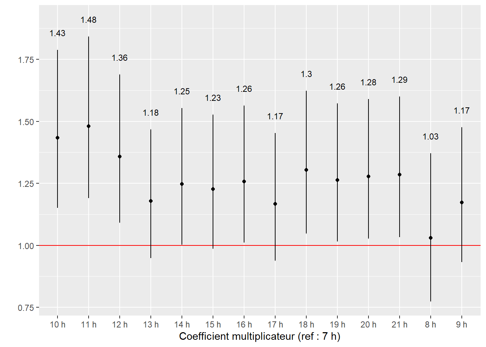
Nous pouvons ainsi observer, à la figure 8.60, que les trajets effectués à 10 h, 11 h et 12 h sont les plus longs de la journée, entre 30 et 40 % plus longs que ceux effectués à 7 h et 8 h qui constituent les trajets les plus courts.
Le reste des coefficients (ainsi que le paramètre de forme) sont affichés dans le tableau 8.35. Comparativement à un trajet effectué à pied, un trajet en transport en commun dure en moyenne 52 % plus longtemps (1,53 fois plus long), alors que les déplacements en véhicule individuel et en vélo sont respectivement 28 % et 23 % moins longs. Aucune différence n’est observable entre les déplacements effectués en semaine ou pendant la fin de semaine.
| Variable | Coeff. | Exp(Coeff.) | Val.p | IC 2,5 % exp(Coeff.) | IC 97,5 % exp(Coeff.) | Sign. |
|---|---|---|---|---|---|---|
| Constante | 2,926 | 18,661 | 0,000 | 14,939 | 23,313 | *** |
| Mode | ||||||
| ref : pieton | – | – | – | – | – | – |
| transport collectif | 0,424 | 1,529 | 0,000 | 1,490 | 1,568 | *** |
| vehicule individuel | -0,319 | 0,727 | 0,000 | 0,709 | 0,746 | *** |
| velo | -0,257 | 0,773 | 0,000 | 0,754 | 0,793 | *** |
| Motif | ||||||
| ref : education | – | – | – | – | – | – |
| loisir | -0,013 | 0,987 | 0,451 | 0,954 | 1,021 | |
| magasinage | -0,109 | 0,897 | 0,000 | 0,867 | 0,928 | *** |
| travail | -0,067 | 0,936 | 0,000 | 0,908 | 0,965 | *** |
| LogDist | 0,335 | 1,398 | 0,000 | 1,383 | 1,413 | *** |
| MemeArrond | ||||||
| ref : Different | – | – | – | – | – | – |
| Meme | -0,036 | 0,964 | 0,001 | 0,944 | 0,985 | *** |
| Semaine | ||||||
| ref : lundi au vendredi | – | – | – | – | – | – |
| samedi et dimanche | 0,003 | 1,003 | 0,779 | 0,982 | 1,024 | |
| shape | 1,147 | 3,150 | 0,000 | 3,096 | 3,206 | *** |
Les déplacements ayant comme motif le magasinage et le travail ont tendance à être en moyenne plus courts de 11 % et 6 % respectivement, comparativement aux déplacements effectués pour l’éducation ou le loisir (différence non significative entre loisir et éducation). Sans surprise, la distance entre le point de départ et d’arrivée du trajet (LogDist) affecte sa durée de façon positive. Considérant qu’il est difficile d’interpréter des log de kilomètre (dû à une transformation de la variable originale), nous représentons l’effet de cette variable avec la prédiction du modèle à la figure. Nous utilisons pour cela le cas suivant: déplacement à pied à 7 h en semaine, ayant pour motif éducation, dont le point de départ se situe dans l’arrondissement Ahuntsic et donc le point d’arrivée est dans un autre arrondissement. Seule la distance du trajet varie de 1 à 40 km. À titre de comparaison, nous représentons aussi, pour les mêmes conditions, le cas d’une personne à vélo (en vert) et d’une personne utilisant le transport en commun (en bleu). Les lignes en pointillés représentent les intervalles de confiance à 95 % des prédictions (figure 8.61).
# Création d'un DataFrame fictif pour la prédiction
dfpred <- expand.grid(
Dist = seq(1,40, 0.5),
Motif = 'education',
HeureDep = '7',
MemeArrond = 'Different',
ArrondDep = 'Ahuntsic-Cartierville',
Mode = c('pieton','velo','transport collectif'),
Semaine = 'lundi au vendredi'
)
# Mise en log de la variable de distance
dfpred$LogDist <- log(dfpred$Dist)
# Calcul des prédictions et de leur erreur standard (échelle log)
lin_pred <- predict(modele, dfpred, se = TRUE)
# Calcul des intervalles de confiance et mise en exponentielle des prédictions
dfpred$pred <- exp(lin_pred$fitted.values[,1])
dfpred$lower <- exp(lin_pred$fitted.values[,1] -1.96*lin_pred$se.fit[,1])
dfpred$upper <- exp(lin_pred$fitted.values[,1] +1.96*lin_pred$se.fit[,1])
# Ajoutons les accents pour le graphiques
dfpred$Mode <- as.character(dfpred$Mode)
dfpred$Mode2 <- case_when(dfpred$Mode == "pieton" ~ "piéton",
dfpred$Mode == "velo" ~ "vélo",
TRUE ~ dfpred$Mode)
# Affichage des résultats
ggplot(data = dfpred) +
geom_path(aes(x = Dist, y = lower, color = Mode2), linetype = "dashed")+
geom_path(aes(x = Dist, y = upper, color = Mode2), linetype = "dashed")+
geom_path(aes(x = Dist, y = pred, color = Mode2), size = 1) +
labs(y = "temps de trajet prédit (minutes)",
x = "distance à vol d'oiseau (km)")8.4.4 Modèle GLM avec une distribution bêta
Pour rappel, la distribution bêta est une distribution définie sur l’intervalle \([0,1]\), elle est donc particulièrement utile pour décrire des proportions, des pourcentages ou des probabilités. Dans la section 2.4.3.16 sur les distributions, nous avons présenté la paramétrisation classique de la distribution avec les paramètres \(a\) et \(b\) étant tous les deux des paramètres de forme. Ces deux paramètres n’ont pas d’interprétation pratique, mais il est possible (comme pour la distribution Gamma) de reparamétrer la distribution bêta avec un paramètre de centralité (espérance) et de dispersion.
Notez également que si la distribution bêta autorise la présence de 0 et de 1, le modèle GLM utilisant cette distribution doit les exclure des valeurs possibles s’il utilise la fonction de lien logistique. En effet, cette fonction à la forme suivante :
\[ logit(x) = log(\frac{x}{1-x})\\ \tag{8.24}\]
Nous pouvons constater que si \(x = 1\), alors le dénominateur de la fraction est 0, or il est impossible de diviser par 0. Si \(x = 0\), alors nous obtenons \(log(0)\) ce qui est également impossible au plan mathématique.
Dans le cas de figure où des 0 et/ou des 1 sont présents dans les données, quatre options sont possibles pour contourner le problème :
- Si les observations à 0 ou 1 sont très peu nombreuses, il est envisageable de les retirer des données.
- Si la variable mesurée le permet, il est possible de remplacer les 0 et les 1 par des valeurs très proches (0,0001 et 0,9999 par exemple) sans dénaturer excessivement les données initiales.
- Plutôt que d’utiliser une valeur arbitraire, Smithson et Verkuilen (2006) recommandent de recalculer la variable \(Y \in [0;1]\) avec la formule équation 8.25;
- Employer un modèle Hurdle à trois équations, la première prédisant la probabilité d’observer \(Y > 0\), la seconde, la probabilité d’observer \(Y = 1\) et la dernière prédisant les valeurs de Y pour \(0>Y>1\).
\[ Y' = \frac{Y(N-1)+s}{N} \tag{8.25}\]
Avec N le nombre d’observations, Y’ la variable Y transformée et s une constante. Plus cette dernière est élevée, plus la variable Y’ a des valeurs éloignées de 0 et 1. la valeur de 0,5 est recommandée par les auteurs.
Reparamétrisation de la distribution bêta
Pour une distribution bêta telle que définie par \(Y \sim Beta(a,b)\), l’espérance de cette distribution et sa variance sont données par :
\[ \begin{aligned} &E(Y) = \frac{a}{a+b} \\ &Var(Y) = \frac{a \times b}{(a+b)^2(a+b+1)}\\ \end{aligned} \tag{8.26}\]
Pour reparamétrer cette distribution, nous définissons un nouveau paramètre \(\phi\) (phi) tel que:
\[ \begin{aligned} &a = \phi * E(Y) \\ &b = \phi - a \\ &Var(Y) = \frac{E(Y) \times (1-E(Y))}{1+\phi} \end{aligned} \tag{8.27}\]
De cette manière, il est possible d’exprimer la distribution bêta en fonction de son espérance (sa valeur attendue, ce qui s’interprète approximativement comme une moyenne) et d’un paramètre \(\phi\) intervenant dans le calcul de sa variance. Vous noterez d’ailleurs que la variance de cette distribution dépend de sa moyenne, impliquant à nouveau une hétéroscédasticité intrinsèque.
Pour résumer, nous nous retrouvons donc avec un modèle qui prédit l’espérance d’une distribution bêta avec une fonction de lien logistique. La variance de cette distribution est fonction de cette moyenne et d’un second paramètre \(\phi\). Ces informations sont résumées dans la fiche d’identité du modèle (tableau 8.36).
| Type de variable dépendante | Variable continue dans l’intervalle \(]0,1[\) |
| Distribution utilisée | Student |
| Formulation | \(Y \sim Beta(\mu,\phi)\) \(g(\mu) = \beta_0 + \beta X\) \(g(x) = log(\frac{x}{1-x})\) |
| Fonction de lien | log |
| Paramètre modélisé | \(\mu\) |
| Paramètres à estimer | \(\beta_0\), \(\beta\), et \(\phi\) |
| Conditions d’application | \(Variance = \frac{\mu \times (1-\mu)}{1+\phi}\) |
8.4.4.1 Conditions d’application
Comme pour un modèle Gamma, la seule condition d’application spécifique à un modèle avec distribution bêta est que la variance des résidus suit la forme attendue par la distribution bêta.
8.4.4.2 Interprétation des coefficients
Puisque le modèle utilise la fonction de lien logistique, les exponentiels des coefficients \(\beta\) du modèle peuvent être interprétés comme des rapports de cotes (voir la section 8.2.1 sur le modèle GLM binomial). Admettons ainsi que nous avons obtenu pour une variable indépendante \(X_1\) le coefficient \(\beta_1\) de 0,12. Puisque le coefficient est positif, cela signifie qu’une augmentation de \(X_1\) conduit à une augmentation de l’espérance de Y. L’exponentiel de 0,12 est 1,13, ce qui signifie qu’une augmentation d’une unité de \(X_1\) multiplie par 1,13 (augmente de 13 %) les chances d’une augmentation de Y. Pour ce type de modèle, il est particulièrement important de calculer ses prédictions afin d’en faciliter l’interprétation.
8.4.4.3 Exemple appliqué dans R
Afin de présenter le modèle GLM avec une distribution bêta, nous utilisons un jeu de données que nous avons construit pour l’île de Montréal. Nous nous intéressons à la question des îlots de chaleur urbains au niveau des aires de diffusion (AD – entités spatiales du recensement canadien comprenant entre 400 et 700 habitants). Pour cela, nous avons calculé dans chaque AD le pourcentage de sa surface classifiée comme îlot de chaleur dans la carte des îlots de chaleur/fraicheur réalisée par l’INSPQ et le CERFO.
La question que nous nous posons est la suivante : les populations vulnérables socioéconomiquement et/ou physiologiquement sont-elles systématiquement plus exposées à la nuisance que représentent les îlots de chaleur? Cette question se rattache donc au champ de la recherche sur l’équité environnementale. Plusieurs études se sont d’ailleurs déjà penchées sur la question des îlots de chaleur abordée sous l’angle de l’équité environnementale (Harlan et al. 2007; Sanchez et Reames 2019; Huang, Zhou et Cadenasso 2011). Nous modélisons donc pour chaque AD (n = 3 158) de l’île de Montréal la proportion de sa surface couverte par des îlots de chaleur. Nos variables indépendantes sont divisées en deux catégories : variables environnementales et variables socio-économiques. Les premières sont des variables de contrôle, il s’agit de la densité de végétation dans l’AD (ajoutée avec une polynomiale d’ordre deux) et de l’arrondissement dans lequel elle se situe. Ces deux paramètres affectent directement les chances d’observer des îlots de chaleur, mais nous souhaitons isoler leurs effets (toutes choses étant égales par ailleurs) de ceux des variables socio-économiques. Ces dernières ont pour objectif de cibler les populations vulnérables sur le plan physiologique (personnes âgées et enfants de moins de 14 ans) ou socio-économique (minorités visibles et faible revenu). L’ensemble de ces variables sont présentées dans le tableau 8.37. Notez que, puisque le modèle avec distribution bêta ne peut pas prendre en compte des valeurs exactes de 1 ou 0, nous les avons remplacées respectivement par 0,99 et 0,01. Cette légère modification n’altère que marginalement les données, surtout si nous considérons qu’elles sont agrégées au niveau des AD et proviennent originalement d’imagerie satellitaire.
| Nom de la variable | Signification | Type de variable | Mesure |
|---|---|---|---|
| A65PlusPct | Population de 65 ans et plus | Variable continue | Pourcentage de la population ayant 65 ans et plus |
| A014Pct | Population de 14 ans et moins | Variable continue | Pourcentage de la population ayant 14 ans et moins |
| PopFRPct | Population à faible revenu | Variable continue | Pourcentage de la population à faible revenu |
| PopMVPct | Minorités visibles | Variable continue | Pourcentage de la population faisant partie des minorités visibles |
| VegPct | Végétation | Variable continue | Pourcentage de la surface de l’AD couverte par de la végétation |
| Arrond | Arrondissements | Variable continue | Arrondissement de l’Île de Montréal |
Vérification des conditions d’application
Sans surprise, nous commençons par charger nos données et nous nous assurons de l’absence de multicolinéarité excessive entre nos variables indépendantes.
## Chargement des données
dataset <- read.csv("data/glm/data_chaleur.csv", fileEncoding = "utf8")
## Calcul des valeurs de vif
vif(glm(hot ~
A65Pct + A014Pct + PopFRPct + PopMVPct +
poly(prt_veg, degree = 2) + Arrond,
data = dataset)) GVIF Df GVIF^(1/(2*Df))
A65Pct 1.609917 1 1.268825
A014Pct 2.206072 1 1.485285
PopFRPct 2.162036 1 1.470386
PopMVPct 2.370269 1 1.539568
poly(prt_veg, degree = 2) 2.619552 2 1.272204
Arrond 7.899208 32 1.032820La seule variable semblant poser un problème de multicolinéarité est la variable Arrond. Cependant, du fait de sa nature multinomiale, elle regroupe en réalité 32 coefficients (voir la colonne Df). Il faut donc utiliser la règle habituelle de 5 sur le carré de la troisième colonne (GVIF^(1/(2*Df))) du tableau (Fox et Monette 1992), soit 1,032820^2 = 1,066717, ce qui est bien inférieur à la limite de 5. Nous n’avons donc pas de problème de multicolinéarité excessive. Nous pouvons passer au calcul des distances de Cook. Pour ajuster notre modèle, nous utilisons le package mgcv et la fonction gam avec le paramètre family = betar(link = "logit").
# Ajustement d'une première version du modèle
modele <- gam(hot ~
A65Pct + A014Pct + PopFRPct + PopMVPct +
poly(prt_veg, degree=2) + Arrond,
data = dataset, family = betar(link = "logit"))
# Calcul des distances de Cook
df <- data.frame(
cooksd = cooks.distance(modele),
oid = 1:nrow(dataset)
)
# Affichage des distances de Cook
ggplot(data = df)+
geom_point(aes(x = oid, y = cooksd),
color = rgb(0.4,0.4,0.4,0.4), size = 0.5)+
labs(x = "", y = "Distance de Cook")Nous pouvons observer à la figure 8.62 que seulement deux observations se distinguent très nettement des autres. Nous les isolons donc dans un premier temps.
A014Pct A65Pct PopFRPct PopMVPct Km2 HabKm2 Shape_Leng Shape_Area
1666 11.78 26.77 6.38 11.65 6.458460 72.3083 21153.055 6458456.6
2803 15.54 31.07 24.17 52.17 0.134013 5283.0879 1651.471 134012.5
prt_hot prt_veg dist_cntr Arrond hot
1666 1.824483 90.11691 29.181345 Senneville 0.02
2803 40.117994 60.15745 4.178823 Westmount 0.40Ces deux observations n’ont pas de points communs marqués, et ne semblent pas avoir de valeurs particulièrement fortes sur les différentes variables indépendantes ou la variable dépendante. Nous décidons donc de les supprimer et de recalculer les distances de Cook.
# Suppression des deux observations très influentes
dataset2 <- subset(dataset, df$cooksd < 0.01)
modele2 <- gam(hot ~
A65Pct + A014Pct + PopFRPct + PopMVPct +
I(prt_veg**2) + prt_veg + Arrond,
data = dataset2, family = betar(link = "logit"), methode = "REML")
# Calcul des distances de Cook
df2 <- data.frame(
cooksd = cooks.distance(modele2),
oid = 1:nrow(dataset2)
)
# Affichage des distances de Cook
ggplot(data = df2)+
geom_point(aes(x = oid, y = cooksd),
color = rgb(0.4,0.4,0.4,0.4), size = 0.5)+
labs(x = "", y = "Distance de Cook")Après réajustement, nous constatons à nouveau qu’une observation est extrêmement éloignée des autres (figure 8.63). Nous la retirons également, car cette différence est si forte qu’elle risque de polluer le modèle.
# Suppression de l'observation très étonnante
dataset3 <- subset(dataset2, df2$cooksd<max(df2$cooksd))
# Réajustement du modèle
modele3 <- gam(hot ~
A65Pct + A014Pct + PopFRPct + PopMVPct +
I(prt_veg**2) + prt_veg + Arrond,
data = dataset3, family = betar(link = "logit"), methode = "REML")
# Calcul des distances de Cook
df3 <- data.frame(
cooksd = cooks.distance(modele3),
oid = 1:nrow(dataset3)
)
# Affichage des distances de Cook
ggplot(data = df3)+
geom_point(aes(x = oid, y = cooksd),
color = rgb(0.4,0.4,0.4,0.4), size = 0.5)+
labs(x = "", y = "Distance de Cook")Tout semble aller pour le mieux après ce second passage (figure 8.64). Si nous avions continué à observer des valeurs aussi influentes, nous aurions dû commencer à sérieusement questionner nos données ou notre modèle. La prochaine étape du diagnostic est donc l’analyse des résidus simulés.
# Extraction de phi
modele3$family$family[1] "Beta regression(14.612)"phi <- 14.612
# Réalisation des simulations
nsim <- 1000
mus <- modele3$fitted.values
cols <- lapply(1:length(mus), function(i){
mu <- mus[[i]]
p <- mu * phi
q <- (1-mu)*phi
sims <- rbeta(n = nsim, shape1 = p, shape2 = q)
return(sims)
})
mat_sims <- do.call(rbind, cols)
# Calcul des résidus simulés
sim_res <- createDHARMa(simulatedResponse = mat_sims,
observedResponse = dataset3$hot,
fittedPredictedResponse = modele3$fitted.values,
integerResponse = FALSE)
plot(sim_res)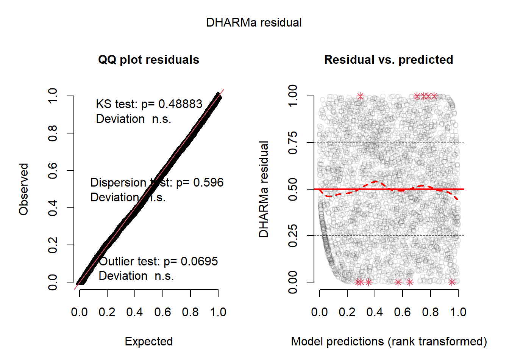
La figure 8.65 indique que les résidus suivent bien une distribution uniforme. Le test des valeurs aberrantes n’est pas significatif au seuil de 0,01 (nous retenons ce seuil considérant le grand nombre de simulations et d’observations de notre jeu de données), nous décidons donc de ne pas supprimer davantage d’observations. Le panneau de droite indique une relation non linéaire instable, mais essentiellement centrée sur la ligne droite attendue. Pour plus de détails, nous calculons ces résidus simulés avec chacune des variables indépendantes.
# Préparons un plot multiple
par(mfrow=c(2,3))
vars <- c("A65Pct", "A014Pct", "PopFRPct", "PopMVPct", "prt_veg")
for(v in vars){
plotResiduals(sim_res, dataset3[[v]], main = "", xlab = v)
}
plotResiduals(sim_res, dataset3[["prt_veg"]]**2, xlab = "prt_veg^2", main = "")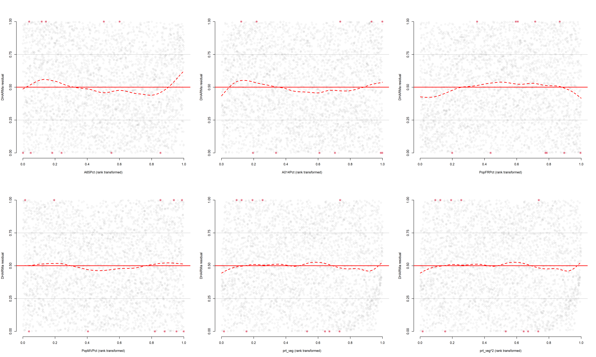
La figure 8.66 indique des relations marginales et négligeables entre nos variables indépendantes et nos résidus simulés. Concernant la variable Arrond (figure 8.67), nous observons une situation plus particulière. Pour quelques arrondissements, les résidus simulés sont nettement plus forts ou plus faibles. Notre hypothèse est que cet effet est provoqué par l’introduction de cette variable dans notre modèle comme un effet fixe alors que sa nature devrait nous inciter à l’introduire comme un effet aléatoire. Nous n’avons pas encore présenté ces concepts ici, mais nous le ferons dans le chapitre 9. En attendant, nous conservons le modèle tel quel et passons à l’analyse de sa qualité d’ajustement.
df <- data.frame(
resid = residuals(sim_res),
Arrond = dataset3$Arrond
)
ggplot(data = df) +
geom_boxplot(aes(x = Arrond, y = resid))+
theme(axis.text.x = element_blank(),
axis.ticks.x = element_blank()
)+
labs(x = "Arrondissements", y = "Résidus simulés")Analyse de la qualité d’ajustement
Dans un premier temps, nous comparons la distribution originale des données à des simulations issues du modèle.
# Extraction de 20 simulations
df2 <- data.frame(mat_sims[,1:20])
df3 <- reshape2::melt(df2)
ggplot() +
geom_histogram(aes(x = hot, y = ..density..),
data = dataset3, bins = 100, color = "black", fill = "white") +
geom_density(aes(x = value, y = ..density.., group = variable), data = df3,
fill = rgb(0,0,0,0), color = rgb(0.2,0.2,0.2,0.3), size = 1) +
labs(x = "résidus simulés", y = "densité")Nous constatons à la figure 8.68 que le modèle est parvenu à reproduire la forme générale de la distribution originale : un plus grand nombre de valeurs proches de zéro, suivies d’une répartition presque homogène dans les valeurs comprises entre 0,15 et 0,8, suivies par un plus faible nombre de valeurs quand Y est supérieur à 0,8. Il semble en revanche manquer un certain nombre de valeurs extrêmes proches de 0 (absence d’îlot de chaleur) et proches de 1 (couverture à 100 % par des îlots de chaleur).
# Calcul des pseudo R2
rsqs(loglike.full = modele3$deviance/-2,
loglike.null = modele3$null.deviance/-2,
full.deviance = modele3$deviance,
null.deviance = modele3$null.deviance,
nb.params = modele3$rank,
n = nrow(dataset3))$`deviance expliquee`
[1] 0.9017396
$`McFadden ajuste`
[1] 0.8992329
$`Cox and Snell`
[1] 0.999828
$Nagelkerke
[1] 0.9998949[1] 0.1025719Le modèle parvient à expliquer 90 % de la déviance totale et obtient des pseudo-R2 très élevés. Il obtient cependant un RMSE de 0,10 soit une erreur quadratique moyenne de 10 % dans la prédiction, ce qui est tout de même important. Le modèle ne semble pas souffrir particulièrement de sur-ajustement comme les pseudo-R2 auraient pu nous le laisser penser.
L’ensemble des coefficients du modèle sont accessibles via la fonction summary. Pour rappel, il est nécessaire de les convertir avec la fonction exponentielle pour pouvoir les interpréter en termes de rapport de cotes. À nouveau, nous proposons de construire dans un premier temps une figure pour observer l’effet des arrondissements.
# Identifier les coefficients pour les arrondissements
test <- grepl("Arrond", names(modele3$coefficients), fixed = TRUE)
# Extraire les coefficients et les erreurs standards
coeffs <- modele3$coefficients[test]
err.std <- summary(modele3)$se[test]
# Créer un DataFrame avec les rapports de cote et les intervalles de confiance
df <- data.frame(
Arrond = gsub("Arrond" , "", names(coeffs), fixed = TRUE),
coeffs = coeffs,
err.std = err.std,
RC = exp(coeffs),
lowerRC = exp(coeffs-1.96*err.std),
upperRC = exp(coeffs+1.96*err.std)
)
# Retrouver l'arrondissement de référence
allArrond <- unique(dataset3$Arrond)
refArrond <- setdiff(allArrond, df$Arrond)
# Créer le graphique
ggplot(data = df) +
geom_errorbarh(aes(xmin = lowerRC, xmax = upperRC, y = reorder(Arrond,RC)))+
geom_point(aes(x = RC, y = reorder(Arrond,RC)))+
geom_vline(xintercept = 1, color = "red")+
geom_text(aes(x = upperRC, y = reorder(Arrond, RC),
label = paste("RC : ", round(RC,2), sep = "")), size = 3, nudge_x = 0.3)+
labs(x = paste("Rapport de cote (rouge : ", refArrond,')', sep=''),
y = "Arrondissement")
Nous constatons ainsi que seuls quelques arrondissements ont une différence d’exposition aux îlots de chaleur significative au seuil de 0,05 comparativement à Ahuntsic-Cartierville (figure 8.69). Pour l’essentiel, il s’agit d’arrondissements pour lesquels nous observons des rapports de cotes supérieurs à 1. Verdun, Lasalle et le Plateau-Mont-Royal sont les arrondissements les plus touchés avec des chances d’observer des niveaux supérieurs de densité d’îlots de chaleur multipliés par 3,19, 2,89 et 2,74. Le reste des coefficients sont affichés dans le tableau 8.38.
Nous notons ainsi que le seul groupe associé avec une augmentation significative des chances d’observer une augmentation de la densité d’îlot de chaleur est le groupe des personnes à faible revenu (1,4 % de chance supplémentaire à chaque augmentation d’un point de pourcentage de la variable indépendante). Pour mieux cerner la taille de cet effet, nous représentons l’effet marginal de ce coefficient en maintenant toutes les autres variables à leur moyenne. Nous calculons également ces effets marginaux pour trois arrondissements différents : Verdun (RC le plus fort), Ahuntsic-Cartierville (la référence) et Dollard-des-Ormeaux (RC le plus faible). Nous réalisons également un second graphique pour visualiser l’effet non linéaire de la variable pourcentage de végétation. La figure 8.70 nous indique ainsi que le rôle de l’arrondissement est plus important que celui du pourcentage de personnes à faible revenu. Cependant, nous constatons que passer de 0 % de personnes à faible revenu dans une AD à 75 % est associé avec une multiplication de la surface couverte par des îlots de chaleur par environ 1,5 (toutes choses égales par ailleurs). Le rôle de la végétation dans la réduction de la surface des îlots de chaleur est très net et non linéaire. L’essentiel de la réduction est observé entre 0 et 50 % de végétation dans une AD, au-delà de ce seuil, la réduction des îlots de chaleur par la végétation est moins flagrante. Il semblerait donc exister à Montréal une forme d’iniquité systématique pour les populations à faible revenu, qui seraient davantage exposées aux îlots de chaleur. Cependant, compte tenu de la dépendance spatiale et de l’hétéroscésadicité observées plus haut, des ajustements devraient être apportés au modèle pour confirmer ou infirmer ce résultat.
| Variable | Coeff. | RC | Val.p | IC 2,5 % RC | IC 97,5 % RC | Sign. |
|---|---|---|---|---|---|---|
| Constante | 3,468 | 32,059 | 0,000 | 25,636 | 40,085 | *** |
| A65Pct | -0,002 | 0,998 | 0,243 | 0,996 | 1,001 | |
| A014Pct | -0,006 | 0,994 | 0,035 | 0,988 | 1,000 | * |
| PopFRPct | 0,013 | 1,014 | 0,000 | 1,011 | 1,016 | *** |
| PopMVPct | -0,003 | 0,997 | 0,000 | 0,995 | 0,998 | *** |
| prt_veg | -0,137 | 0,872 | 0,000 | 0,865 | 0,879 | *** |
# Créer un DataFrame pour la prédiction
df <- expand.grid(
A65Pct = mean(dataset3$A65Pct),
A014Pct = mean(dataset3$A014Pct),
PopFRPct = seq(0,75, 1),
PopMVPct = mean(dataset3$PopMVPct),
prt_veg = mean(dataset3$prt_veg),
Arrond = c("Verdun",'Ahuntsic-Cartierville','Dollard-des-Ormeaux')
)
# Effectuer les prédictions sur l'échelle log
pred <- predict(modele3, df, se=T, type = "link")
# Calculer les prédictions et leurs intervalles de confiance
ilink <- modele3$family$linkinv
df$pred <- ilink(pred$fit)
df$lower <- ilink(pred$fit - 1.96* pred$se.fit)
df$upper <- ilink(pred$fit + 1.96* pred$se.fit)
# Afficher le résultat
P1 <- ggplot(data = df)+
geom_path(aes(x = PopFRPct, y = pred, color = Arrond), size =1) +
geom_path(aes(x = PopFRPct, y = lower, color = Arrond), linetype = "dashed") +
geom_path(aes(x = PopFRPct, y = upper, color = Arrond), linetype = "dashed")+
labs(x = "Personnes à faible revenu (%)",
y = "Surface de l'AD couverte par des îlots de chaleur (%)",
color = 'Arrondissement')+
ylim(0,1)
# Pour la végétation
df2 <- expand.grid(
A65Pct = mean(dataset3$A65Pct),
A014Pct = mean(dataset3$A014Pct),
PopFRPct = mean(dataset3$PopFRPct),
PopMVPct = mean(dataset3$PopMVPct),
prt_veg = seq(0,95,1),
Arrond = c("Verdun",'Ahuntsic-Cartierville','Dollard-des-Ormeaux')
)
# Effectuer les prédiction sur l'échelle log
pred2 <- predict(modele3, df2, se=T, type = "link")
# Calculer les prédictions et leurs intervalles de confiance
df2$pred <- ilink(pred2$fit)
df2$lower <- ilink(pred2$fit - 1.96* pred2$se.fit)
df2$upper <- ilink(pred2$fit + 1.96* pred2$se.fit)
# Afficher le résultat
P2 <- ggplot(data = df2)+
geom_path(aes(x = prt_veg, y = pred, color = Arrond), size =1) +
geom_path(aes(x = prt_veg, y = lower, color = Arrond), linetype = "dashed") +
geom_path(aes(x = prt_veg, y = upper, color = Arrond), linetype = "dashed")+
labs(x = "Couverture végétale (%)", y = "", color = "Arrondissement")+
ylim(0,1)
ggarrange(P1, P2, common.legend = T)8.5 Conclusion sur les modèles linéaires généralisés
Comme vous avez dû le remarquer, les modèles linéaires généralisés constituent un monde à part entière et tout un livre pourrait être rédigé à leur sujet. Leur grande flexibilité les rend extrêmement utiles dans de nombreux contextes, mais complique leur mise en œuvre, chaque modèle ayant ses propres spécificités théoriques. Ils partagent cependant tous une base commune : le choix d’une distribution et d’une fonction de lien. L’ensemble de leurs spécificités découle directement de ces deux choix.
La figure 8.71 résume les choix de modèles présentés au cours de ce chapitre pour des variables qualitatives, de comptage et continues. Notez bien qu’il ne s’agit que de la partie émergée de l’iceberg, car il existe de nombreuses autres distributions plus ou moins complexes (skew-normale, log-normal, beta-binomiale, Box-Cox, Gumbel etc.). D’autres pistes pourraient aussi être explorées pour aller plus loin avec les GLM, notamment les modèles Hurdle (combinant un modèle binomial et un modèle avec une distribution continue), les modèles tronqués ou censurés (tenant compte d’une limite nette dans la variable dépendante) ou encore les modèles distributionnels ajustant une équation de régression pour chaque paramètre de la distribution utilisée.
8.6 Quiz de révision du chapitre
Pour un modèle utilisant une distribution binomiale, le paramètre modélisé par l’équation de régression est :
Relisez au besoin la section 8.2.1.
Si la fonction de lien logistique est utilisée dans un modèle binomial, comment peuvent être interprétés les coefficients?
Relisez au besoin la section 8.2.1.
Pour choisir la distribution la mieux adaptée pour un modèle GLM, il est possible de :
Relisez au besoin la section 8.6.